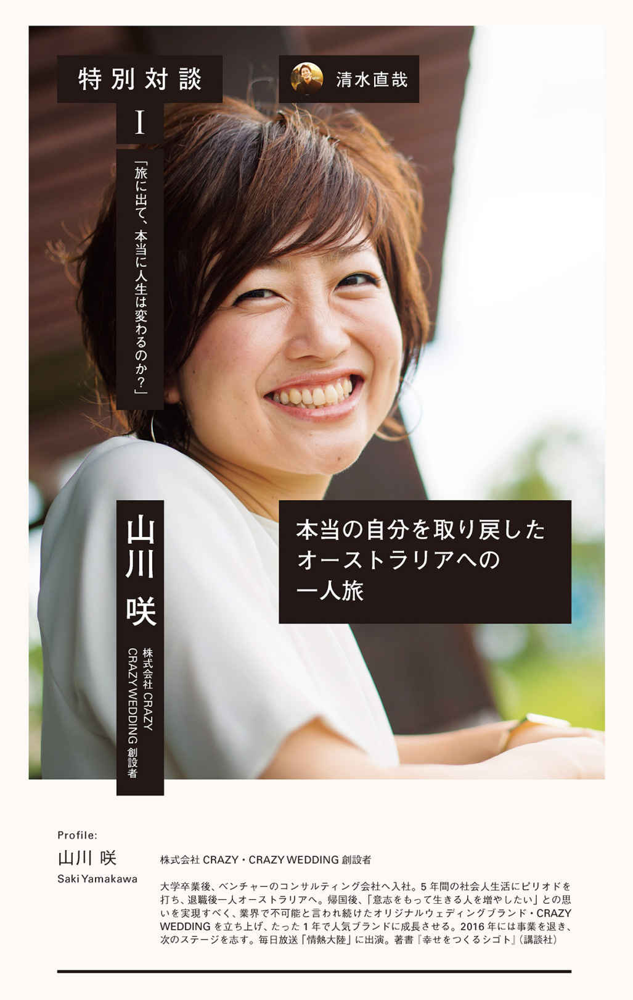
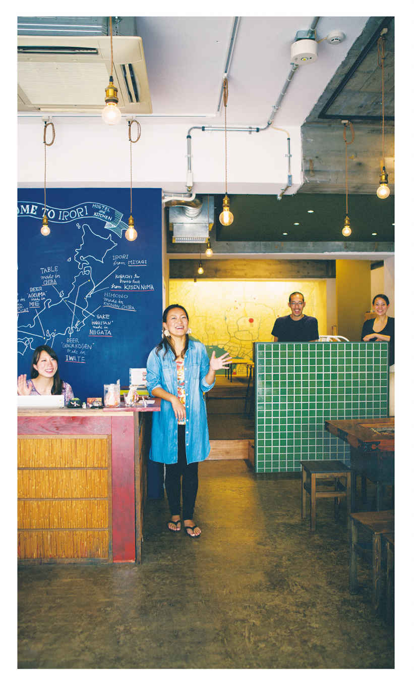

| The Journey 自分の生き方をつくる原体験の旅 | |
| 四角大輔 & TABIPPO | |
| いろは出版株式会社 (2016) | |
はじめに「原体験としての旅」のススメ
一生忘れられない旅を君はしたことはあるだろうか？
「ある」と答えた人はきっと、この先の人生は大丈夫なはず。
「ない」と答えた人には、「絶対にそんなことはないはずだよ」とやさしく反論したい。
巨大な旅客機や大型客船で海を越えるような大移動のみが、旅じゃない。
旅に大小も優劣もない。どこへ行ったか、何をしたかも、重要ではない。
何を感じたか、体がどれほど震えたか、ということがもっとも大切なんだ。
だから旅の形はシンプルな方がいい。頭でっかちにならず、なるべく「むき出しの自分」で行くべきだ。
今ぼくは46歳（2016年現在）。ニュージーランドにある、原生林の湧き水がつくり出した湖の畔でこの原稿を書いている。
ここは、35年近い年月の「旅」の果てに見つけ出した人生の目的地。
この湖で営む半自給自足の"森の生活"をベースにしながら、何日もかけて徒歩旅行で大自然の奥へ入っていく"冒険生活"と、世界中の都市を駆け巡る"移動生活"を送っている。足、カヤック、自転車などの人力移動、車、列車、船、飛行機と、年の半分近くを多種多様な「旅」に充て、毎年、地球を４〜５周していることになる。
この「自分だけの生き方」は、７度のミリオンヒット、20回のオリコン1位を記録した、大手レコード会社プロデューサーの地位と年収を手放したことで、手に入れることのできた「新しい旅」でもあるんだ。
こんなぶっ飛んだ人生を、ちゃんとプランニングしてきたかって？
今、目の前に広がるこの湖に出会うための長い旅に導き、我が人生を無意識にデザインしてくれていたのは「原体験としての旅」だった。
これまでも、今も、ぼくの人生はつねにエキサイティングだ。
でも、目をつぶれば今でも鮮明に思い出せるのは、小学生の時に自転車で通ったある湖のそばにいるときの言葉にできない、圧倒的なワクワク感。
そして未だ、それよりも衝撃的な体験はない。
小学生時代、家からふたつほど峠を越えた先の山の上にある森に囲まれた小さな湖へ、毎週、2時間近くかけて自転車で通った旅。
ぼくは幼少期から、何をしているよりも水際で遊ぶことが大好きだった。
海や湖沼、河や源流はもちろん、プールやお風呂も好き。水が張られた田んぼや、水たまりレベルでも興奮するほど。水が透明であればあるほどテンションは高まり、透明度が3mを超えると、全身の細胞がザワザワザワ！ と騒ぎ出す。
そして、釣り竿を持っていれば1日ずっと水際にいても、だれにも咎められない。釣りは、水域にずっといるための言い訳であり、自然とつながるためのツールとなった。
ぼくの人生が正しく狂いはじめたのは、そのことに気づいてしまった小学校高学年のころ。
太陽のリズムで暮らし、オーガニック菜園と果樹園と向き合い、好きなときに釣りをする。地球とシンクロしながら生きる、この湖畔の森の生活は、ぼくにとっては心と体が安定する完璧なホーム。
この"最強基地"があるからこそ、毎年、世界10カ国以上をまわりながら地球規模での表現活動を続けたり、ビジネスやプロジェクトを仲間と自由にプロデュースする、という「新しい人生の旅」に突入できたのだ。
こんな独創的なライフスタイルが待っていたなんて１ミリも想像してなかった。当然、計画できるはずもない。
この「自分だけの生き方」を手にできたのは、間違いなくあの「原体験の旅」があったから。「あの衝動こそが人生最高の瞬間」であることを忘れず、あのワクワク感を超える体験だけを求め続けてきただけなんだ。
これこそが、ぼくが他人基準に縛られず自由であり続けられる真の理由。
ぼくと同じように、君の中にもそんな原体験が眠ってはいないだろうか？
ぼくの生き方だって、一例にすぎない。
君の中にも、"本当の自分"が求めている「自分だけの生き方」があるはず。
決して忘れてはいけない大切な原体験を思い出してもらうため、そして「旅に出てみたい！」と思ってもらうために、ぼくは友人の清水直哉と、彼が代表を務める世界一周団体TABIPPOの仲間たちと１年以上かけてこの本を創った。
強烈な原体験は人を支え、"半自動的"に人生を正しくデザインしてくれる。
原体験を軸にして人生の旅ができる人は、無意味な世間体や同調圧力から自分を解放でき、シンプルに生きられる。
異常なレベルの情報量、史上最速といわれる社会の変化速度、人類を追い越しつつあるテクノロジー、解決の糸口が見えない多種多様な社会問題や自然災害。絶対の安定も確実なレールも存在しない、そんな恐ろしいほどのカオス、21世紀を生き抜く方法はたった一つ────────。
だれにも振りまわされない、何にも縛られない「君だけの人生の旅」をつくること。断言しよう、それしかないと。
そのためには、心の底から欲するモノやコト以外はすべて捨て、できるかぎりミニマムに生きるべきだ。「視覚、思考、肉体、行動、生活」から不要な"ノイズ"を排除し、過剰な装備は極力持たず、荷物は最小限にすること。
旅は当然、大きなスーツケースではなくバックパックが望ましい。
束縛から解かれた両手が、本当に必要なものに遭遇した瞬間、それをつかんでくれる。身軽だから、走りたいときにいつでも踏み出せる。探しものやパッキングに無駄な時間を費やすこともなくなり、フットワーク軽く、心が赴くまま自由に行動することができる。
人生も同じだ。
そうすることで、好きなこと、やりたいことがよりハッキリし、本来の自分と君だけの人生を取り戻せるようになる。
その結果、旅、冒険、生活、人生、すべてがシンプルになり、本当の意味での"豊かさ"を手にすることができるんだ。
逆に、両腕に余計な荷物を抱え、不要なモノや欲望を体中にまとい、ノイズまみれで複雑に生きてしまっている人は、自分が何者で何がしたいかまったくわからないまま、一度きりの人生を終えてしまう。
まず小さいころのもっとも古い記憶までさかのぼってみよう。
そこから今日までの道のりすべてをたどってみよう。
なるべくディティールまで思い出すんだ。そこに、DNAに刻み込まれるほど鮮烈な原体験はないだろうか？
きっとあるはずだ。
大きい必要はまったくない、むしろ小さい衝動こそ本物であることが多い。
万が一、見つからないのであれば、今からでも遅くない。すぐにでも旅に出てほしい。
周遊エアチケットでの弾丸世界一周でも、のんびりバックパッカーでもいい。留学だっていい。そんな大きな旅じゃなくても、ぼくのような自転車での日帰りプチ冒険でもいい。とにかく、「ここに行けば何かあるかもしれない」と"感じる"場所へ行ってみること。とにかく動こう、行動するんだ。
人に説明できる理由なんていらない。言葉にできる衝動なんて本物じゃない。
ただただ直感を信じよう。脳がつくり出す"いつもの"恐怖感を消去して"君自身"を解放しよう。
旅って便利で、「だれにでもできる」「半強制的」に原体験を得られる唯一の方法なんだから。
本書は、あらゆる性別、年齢、ジャンルの旅人たちの「原体験としての旅」をまとめたもの。
語り口調や堅めの文語体だったり、対談や鼎談方式だったり、形態はフリースタイル。それは、ぼくらが伝えたい本質的なメッセージを抽出するために、形にとらわれないようにしたためである。
このあと怒濤のごとく登場する、超オリジナルワンな旅人たちの原体験の旅の物語にどっぷり浸かっていただきたい。彼らが提供してくれた、多数の、愛の人々の写真、超絶景と共に、ぜひバーチャルトリップに出てもらいたい。
そして読み進めてもらいながら、あなたに眠る原体験をぜひ再起動させてほしい。
「旅に出て、本当に人生は変わるのか？」
この本を最後まで読んでいただければ必ず、この難しい問いに答えられるようになるはずだ。
また本の途中で、巻末でお会いしましょう。
では、いい旅を。
ニュージーランド湖畔の自宅テラスより
本書の読み方
「原体験としての旅」の可能性を知るための
2つのコンテンツ。14人の旅のエピソード。
この本は、ぼく（四角大輔）が心から信頼している旅仲間TABIPPO（※詳細は次ページ）と協力してつくったものだ。「原体験としての旅」の可能性を知るためにぼくたちが用意したコンテンツは２つ。
1. 原体験の旅
さまざまな性別、年齢、職業の旅人10人に書いてもらった「原体験としての旅」のエピソード。リアルにつづられた旅と、その間にある人生の葛藤には、共感を覚え、旅への渇望をかき立てる言葉がたくさんあるだろう。
2. 特別対談
ぼく、あるいはTABIPPO代表の清水直哉が、「原体験としての旅」を持つ４人の一流アーティスト（表現者）と対談した内容をまとめたものだ。旅とは何か？ 旅と人生はどうつながっているのか？ それぞれの答えを提示してくれている。
2つのコンテンツに14人の旅の経験、学び、もっといえば旅を人生に活かす技術がこれでもかと詰まっている。
どこから読んでもいい。だれの話に共感を覚え、目を見開き、心を動かされるかは人それぞれだ。この本の中に1人でも、君のロールモデルとなる旅人がいれば嬉しい。
※本書では、旅人撮影か、旅人が被写体になっているリアルな写真のみを掲載。
編者紹介
執筆家・モバイルボヘミアン 四角大輔
世界一周団体TABIPPO代表 清水直哉
四角 大輔
執筆家・モバイルボヘミアン
ニュージーランドの湖で半自給自足の森の生活を営み、年の半分は世界中で移動生活を送る。公式メディア（4dsk.co）、著書、多数の連載で表現活動を続け、起業家やクリエイター育成、起業アドバイザー、大自然への冒険などで活動。著書にベストセラー『自由であり続けるために20代で捨てるべき50のこと』など。レコード会社プロデューサー時代、7度のミリオンヒットを記録。
清水直哉
株式会社TABIPPO代表取締役
世界一周の一人旅から帰国後、旅先で出会った仲間とTABIPPOを立ち上げる。4年後に学生団体であったTABIPPOを法人化。「旅で世界を、もっと素敵に」を理念として、野外フェス旅祭、BackPackFESTA、旅大学などのイベント事業や、自社ブランド「PAS-POL」でのモノづくりなど、様々な活動を展開。
もくじ
倉崎 憲／NHKディレクター
太田尚樹／LGBTメディアの運営
清水直哉× 山川 咲 （株式会社CRAZY・CRAZY WEDDING創設者）
中島侑子／救命救急医
山下夏沙／カフェオーナー
平川 彰／エンジニア
四角大輔×清水直哉× 高橋 歩 （自由人）
藤川英樹／美容師
菊地恵理子／起業家
四角大輔×清水直哉× 村上 萌 （ライフスタイルプロデューサー・NEXTWEEKEND代表）
石井誠啓／高校教師
中尾有希／R.projectプロデューサー
清水直哉／TABIPPO代表
四角大輔× 西野 亮廣 （おもしろ絵本作家・キングコング）
原体験の旅
01
倉崎 憲 28歳
ゾクゾクする
生き方を
見つけた旅
ＮＨＫディレクター
決められた毎日は退屈だ。
僕にとって、
日常につまらないと感じるようになったときが、
旅に出るサイン。
旅に出て、振れ幅を広げ、映像監督の道へ。
走れ。退屈に追いつかれない速さで。
a LIFE
19歳 退屈な大学生活から抜け出すため、一人旅へ
20歳 ラオスに小学校をつくるための活動をする
21歳 小学校が完成
22歳 世界一周
23歳 ニューヨークの映画専門学校に通う、NHKにディレクターとして入局
僕はこれまで
"ちゃんと"生きられていなかったんだ
サッカーボールを蹴り上げると、子どもたちがワッと集まってきて、ボールの蹴り合いが始まった。敵も味方もない。ただ、だれかが蹴ったボールを全員で追いかける。無我夢中で走り回っていたとき、「あー、生きてる！」と思った。
心がパーンと開き、幸せな気持ちで満たされていく。
何もかも恵まれていたはずの日本の大学生活では得られなかった感覚だった。「僕はこれまで、ちゃんと生きられていなかったんだ」と、その瞬間になって気がついた。
今でも思い出す、大学１年生のあのラオスでの１日。
意味のない退屈な大学生活から
抜け出すために
中学から大学までエスカレーター式で上がった僕の頭を占めていたのは、「いかに大学生活を謳歌するか」。
サークルに４つ入り、毎日違うスポーツをしてはアフターと呼ばれる集まりに行き、アフアフと呼ばれるボーリングやカラオケ、花火や夜景ドライブを楽しみ、女の子ともにゃもにゃしながら過ごしていた。
でも、そんな生活が半年も続くと、ふとしたときに何ともいえないモーレツな虚無感、焦燥感に襲われることが増えていった。「きっと今の生活のルーティンを続けても、これ以上の感動や楽しさは得られない」。そう気づいてから、溜まっていた鬱憤が小さく爆発した。
もうこんな退屈な毎日は嫌だ！ ここではないどこかに行きたい！
意味のない退屈な大学生活から抜け出すために、僕は旅に出た。
カオサン通りで、なぜかオカマにボコボコにされ、
「旅っておもしれー」と思った初日
初めての一人旅は、「なんとなく旅しやすそうだから」という理由でタイへ。少しの衣類と空気を抜いたサッカーボール、いろんな思いをバックパックに詰め込んで、興奮しながら飛行機に乗り込んだ。
タイの首都、バンコクにあるスワンナプーム国際空港。到着したときの生温い風と独特の香り。ぐんと五感が研ぎ澄まされ、体が喜んでいるのを感じた。
世界中からバックパッカーが集うカオサン通りで、なぜかオカマにボコボコにされ、「旅っておもしれー」と思った初日。そのまま陸路でラオスに入り、首都のビエンチャンから乗り合いバスで数時間かけて、バンビエンへ。
サッカーボールを膨らまし、レンタルした自転車を押して歩いていると、少年が近づいてきて僕の腰をパンパンと叩いた。ボールを指差して、「一緒に向こうで遊ぼうぜ！」と誘ってくる。ついていくと、おそらく彼が通っているであろう小学校があり、100人くらいの子どもたちがいた。
そこから始まったのが、「あー、生きてる！」と身体が喜び、「僕はこれまで、ちゃんと生きられていなかったんだ」と気がついたあの日だ。
自分の心から溢れだす熱量に、
ゾクゾクした
それから、ラオスをぐるりと周った。
たまたま、現地で支援活動をしているNPO法人の人と出会い、通訳をつけて村人と話す機会をもらった。
僕が「一番したいことは何？」と聞くと、その村のお母さんたちは「学校がほしい。せめて子どもたちに初等教育だけでも受けさせたい」と口を揃えて言った。たしかに、山奥に行けば行くほど小学校がなく、子どもがポツンと1人で遊んでいるのをたびたび目にした。
帰りの飛行機でも、その光景が忘れられなかった。
勉強はもちろんだけれど、子どもたち同士が一緒に遊べる場所として、小学校はすごく大事だと思った。悶々と考えた末、「ない村には建てればいい！」と思い立ち、帰国してすぐ、自分が入っていたいろんなサークルのメンバーに、無我夢中でメールを打った。
「ラオスから帰ってきました。率直に言う！ 一緒にラオスの小学校がない村に学校を建てませんか!!」
ゾクゾクした。何だろう、この感覚。自分が「これだ！」と思ったことを、人に伝えるときの溢れんばかりの勢い。緊張しながら、思い切って送信ボタンを押す。その瞬間から、退屈な日常が変わっていった。
「そういうの待ってたぜ！」「ラオス？ どこそれ？」「のった！」。
仲間たちはすぐさま反応してくれた。
仲間が増え、団体を立ち上げたはいいものの、右も左もわからなかった僕は、ラオスの中学校や図書館を建てる支援をしている方に会いに行き、ノウハウを教えてもらい、建設場所を決めるためラオスに向かったときにも、同行していただいた。
そして、5カ所ほどある候補地の中で、「我々が必ず一生守っていく」と宣言してくれたコン村に、小学校を建てることに決めた。
「だれかのために」なんて
普段は恥ずかしくて言えないけれど
場所は決まった。あとはお金だ。
規模にもよるが、学校を建てるには150万円ほどのお金が必要だとわかり、イベントを企画して人を呼び、建設資金を集めた。
「何としても、完成した学校を自分たちの目で見たい」。この目標に向かっていく毎日が本当に楽しくて、生きている心地で満たされていった。モノクロにしか見えていなかった景色に、ちゃんと色があるんだと気づいた。
「だれかのために」なんて普段は恥ずかしくて言えやしない。けれど、自分のために何かをやるより、だれかのために行動を起こす方が、強い力が出るんだと知った。
「だれかのために」の"だれか"の顔がちゃんと見えたことが、毎日を精一杯走り抜くことにつながっていた。
超ハッピーな笑顔と拍手で
「コープチャイ！（ありがとう！）」
1年半後、ついに学校が完成した。
開校式の日は団体のメンバー30人ほどで現地に行った。小学校に近づくにつれ、村人たちと子どもたちが僕らの両脇を挟み、花道をつくってくれた。
その真ん中を歩いてみんなを見ると、超ハッピーな笑顔。
「コープチャイ！（ありがとう！）」。
鳴り止まない拍手の中で、数えきれない人たちが声をかけてくれた。
花道を進んでいくと、建ったばかりの小学校が見えてきた。ここで子どもたちが勉強するんだと思うと、鳥肌が立った。
開校式には、小学校に通う子どもたちはもちろん、村人やラオスの教育省関係者も参加していた。はじめに教育省の方から「スピーチを」と満面の笑みで言われ、断るわけにもいかず、マイクを受け取った。
前に出て、ゆっくりとみんなの顔を見た。今まで一緒に学校建設という目標に向かって走ってきた仲間たちが僕を見ている。
日本では見せたこともないような、いい顔しやがって。
なんだか泣きそうになったけれど、みっともないからなんとか堪えて、たどたどしい日本語でスピーチをした。
8年も前の、この旅の、この瞬間を
僕は今でも鮮明に覚えている
セレモニーが始まったときは明るかった空が、気づけばすっかり真っ暗になっていた。
夜はみんなで飲め食えのパーティー。僕は村人たちにラオビア（ラオスのビール）をこれでもかというくらい飲まされ、日本から来た仲間たちも、はしゃぎまくっていた。みんな、めちゃくちゃ楽しそうだ。
「何か歌ってくれよ」とおだてられ、ほろ酔いになりながら、日本から持ってきたギターを弾き、スピッツの「チェリー」を歌った。ちょっぴり恥ずかしかったけれど、いつの間にいたんだろう、僕の真後ろに体育座りをしたおじちゃんが、静かに聞いていてくれた。おじちゃん、嬉しそうに笑っていた。
横を見たら、日本では絶対モテないメンバーの男が、可愛い子どもたちに両ホッペにキスされながら、また日本では見たこともない笑顔をしてやがる。
そんな些細なことさえ、今でも覚えている。
僕たちが本当に欲しかったものは
翌日は、授業を見学させてもらった。
驚いたのは、教師が質問をしたとき、教室にいる9割くらいの子どもたちがハンズアップしたこと。勉強するのが嬉しくて楽しくてたまらない！ という気持ちが、ひしひしと伝わってくる。一生懸命勉強している姿を見ると、初めて自分たちの活動が「正しかった」と思えた。
僕たちが欲しかったのは、真っさらな小学校じゃない。その小学校で目一杯勉強して成長していく、子どもたちの姿だった。
日本で歯を食いしばりながら積み重ねてきた活動は、すべてここにつながっていた。苦しいこともあったけれど、今目にしているこの光景がすべてだと思った。
『僕たちは世界を変えることができない。』
それからは、カンボジアで学校建設をしていた別の団体の代表に声をかけてもらい、書籍『僕たちは世界を変えることができない。』を共同出版した。
タイトルのとおり、僕たちはずっと葛藤していた。たまたま学校を建てたのはコン村だったけれど、学校がなくて困っている村はほかにもたくさんあったのが現実だった。もっと言えばラオスだけでなく、いろんな国にいろんな問題があって、日本だっていろんな問題を抱えている。その葛藤がそのまま本に込められている。
すると、ネットで偶然この本を見つけたプロデューサーから映画化の話をもらい、2011年には向井理さん主演で映画化された。
でも、旅は夢につながった
その撮影現場に行かせてもらい、衝撃を受けた。
台本にはない、その瞬間に勝負をかけた演出の数々と、行間に立ちあがる実在感。カンボジアでの撮影現場では、役者さんの素の感情を捉えようと、本番でなくとも何時間もカメラを回していたそうだ。2時間以上ある映画のたった1秒、1コマに込められた、スタッフやキャスト全員の本気のこだわりに心が震えた。
公開後の世間の評判もまたすごかった。「自分も何かアクションを起こそうと思う」「これからもっとちゃんと生きようと思う」...いろんな声が寄せられた。
自分たちが100行動するよりも、何かをつくって100の人に見てもらうことで100の行動が生まれた方がいい。
思えばこの瞬間から、映像監督になることが僕の夢になった。
どれだけ多くの感動を、どれだけ多くの人と、
どれだけ多く味わえるか
映像監督への道を生きていく覚悟を決めたのは、インドのガンジス川の目の前だった。
大学最後の年、僕は3カ月の世界一周に飛び出た。19カ国32都市を弾丸でまわり、インドで自分の人生についてモーレツに考えた。
ガンジス川の畔で目にしたのは、遺体がどんどん運ばれてきて、火葬されていく光景だった。僕にとってはなんとも異様だったけれど、その光景さえも当たり前のように眺めるインド人を見て、「そうか、僕も死ぬんだ」と思った。
「いつか死ぬ」という事実が僕のすぐ脇を通っていくたび「今回の人生で、僕はいったい何をやりたいんだっけ」とグルグルと考えた。
答えは、「一生、感動して生きていたい」ということだった。
感動するという感覚は、人間にしかできないことなんじゃないだろうか。感動こそが、人間の生きる最大のモチベーションだと思った。
でもそれは、1人でやったことでは限界があって、空しくなる。信頼できる多くの人と、何かを成し遂げたときにこそ、大きな感動を味わえる。それは、ラオスでの学校建設の活動を通してや、旅の途中、映画の撮影現場を見て感じたことだった。
「やっぱり映像監督になりたい」。
そう思った僕は、バラナシにあるインターネットカフェに駆け込んだ。今の僕には映像のノウハウはゼロだ。ならまずは、映画の専門学校に行こうと思い「海外 映画専門学校」と検索した。上の方に出てきた学校にその場で申し込んだ。
現実の僕は、"ただの"使えない日本人
大学生活最後の2カ月間を、僕はニューヨークで過ごした。「NYFA（ニューヨークフィルムアカデミー）」という、海外の映画専門学校に通うためだ。
NYFAでは、ハリウッドの巨匠監督やプロデューサー、脚本家が講義をしてくれ、生徒たちはほとんどが本気でハリウッドを目指していた。そんな現場で、僕はまったく歯が立たなかった。
主な授業は4人1組で行われ、1週間に1本のショートフィルムを撮るというもの。
チームには、アメリカ人とイギリス人、南アフリカ人がいた。クルー同士、協力してつくっていくわけだが、日常生活レベルの英語力しかなかった僕はディベートになかなか入れなかった。自分の作品をつくるにも、思いやアイデアをうまく伝えられない。クルーが言っていることを理解するにも時間がかかる...そうしているうちに、「あの日本人は使えない」と思われるようになり、3人で物事を進められることが多くなった。
現場では気合いとコミュニケーションだけではどうにもならない。そんなことはわかっていたはずなのに。勝負する以前の問題だ。惨めで情けなくて、アパートに帰って泣いた。悔しくてこんなに涙が出たのは初めてだった。
アカデミー賞にノミネートされている
名プロデューサーとの出会い
「この荷物、一緒に私の家まで運んでくれない？ ここから15分くらいなの。お願い！」。
ある日、学校へ行く途中、両手いっぱいに荷物を抱えた50歳くらいの女性に声をかけられた。
断る理由もないので手伝ってあげ、たわいもない会話をしていると、突然彼女が「あなた、NYFAの学生なの？ 私、映画のプロデューサーをしているのよ。来週からロバート・デニーロ主演の映画を撮りはじめるわ」と涼しい顔をして言った。
どういうことだ？ 混乱して言葉が出てこない。そうこうしている間に、あっという間に女性の家に着いた。彼女はサラサラと紙切れに名前とメールアドレスを書いて僕に渡し、「Good luck!」と言って颯爽と自宅に入っていった。
すぐにその人の名前を調べてハッとした。過去にプロデュースした作品がアカデミー賞にノミネートされているような名プロデューサーだったのだ。「これはチャンスかもしれない！」と感じ、すぐにメールを送った。
このチャンスを掴めたら、
何かが変わる気がした
「今朝、荷物を持たせていただきました、NYFAに通っている日本の大学生のケン・クラサキです。来週クランクインと聞きましたが、現場で勉強させていただけませんか？」。
ところが、１日経っても２日経っても返事は来ない。目の前にこんなにビッグチャンスがあるのに、あと少し届かないのが悔しくてたまらない。ただ返事を待っていても時間は過ぎていくだけだと感じ、ボキャブラリーの乏しい英語で何通も何通も送り続けた。
「お願いします！ お願いします！」「何でもします！ 勉強させてください！」。
ハリウッドの現場を見学したところで、自分のスキルがつくわけではない。でも、どうしても行きたかった。何かが変わる気がしたからだ。
ハリウッドという大舞台のプレイヤーである
彼らと、見学者でしかない僕
クランクイン前日になり、プロデューサーのアシスタントから一通のメールが届いた。
「明日、13時からSOHOで撮影だが、来れるか？」。
「おっしゃーーーーー！」。
アパートの狭い部屋で雄叫びをあげた。メールの下に書かれてあったアシスタントの番号に即電話して「絶対行きます！」と連絡。
翌日、メールでもらった撮影現場に行くと、あのプロデューサーがいた。満面の笑顔で僕を迎えてくれた。
撮影現場では、監督をはじめ世界中から集まった各セクションのプロフェッショナルがいた。
鳥肌が消えない。日本で見た現場とはまた違った感動があった。撮影方法が日本と大きく変わるわけではない。何が違うか。それは、やはりクルーやキャストが多国籍だということだった。
強烈に憧れた。僕もいつか、多国籍なキャストとクルーでつくってみたい。そして、世界中の人に見てもらえる環境に、挑戦してみたい。
プロデューサーはキャストとスタッフ全員に僕を紹介してくれた。「日本から来た大学生のケンよ。監督を目指しているみたいなの」。
一人ひとりと短い挨拶を交わし「Just do it !（行動あるのみ!）」と声をかけてもらうたび、恥ずかしくなった。この場にいる彼らはプレイヤーとして闘っているのに、僕はただの見学者だったからだ。
この憧れと悔しさを絶対に忘れない。
才能溢れる多国籍なキャストとクルーの中で監督として闘えるその日まで。
ヘタクソでも、恥ずかしくても、
今の自分で思いっきりぶつかっていく
現場に行かせてもらってからは、ヘタクソでも、恥ずかしくても、自分のしたいことをしっかりとクルーに伝えられるようになった。はじめは怪訝そうな顔をしていたクルーも、徐々に理解してくれるようになっていった。「いいものをつくりたい」。その思いに国境なんてない。
NYFAでの最終日は、生徒一人ひとりの卒業作品の上映会だった。課題は、サイレント。台詞なしのショートムービーをつくれというもの。クルーに協力してもらいながら必死でつくった作品が、巨大なスクリーンに流れた。
ドキドキしながら、上映が終わるのを見守る。アッという間にその時間は過ぎていった。すると講師陣や生徒たちから拍手が巻き起こった。クルーたちは「Ken!!」と僕に向かって走ってきて、ハグをしてくれた。
そのあと、卒業証書を受け取ったとき、メイン講師のブライアンがいじわるそうにニヤっと笑った。「へたれのおまえが、最後は頑張ったな」と言ってくれているようだった。
旅に出て学んだことは、
打席により多く立ち、人より多く振ってみること
こんなに特別な時間が過ごせたのは、あのとき諦めずにプロデューサーに自分の思いをメールで送り続けたからだ。僕にはネームバリューや能力があるわけじゃない。熱量しかない。であれば、それをしっかりとぶつけることが大切で、簡単に諦めるべきではない。
そして、学んだことは「チャンスは一瞬。その一瞬を逃さないこと」「打席により多く立ち、人より多く振ってみること」。
自分から未知に飛び込めば、
人生の振れ幅は勝手に広がっていく
そして僕は今、NHKでドラマやドキュメンタリーを撮っている。
人生、どれだけ多くの体験をしてきたかが映像監督の価値でもあるが、旅から学ぶことは多い。旅は、これまでの人生にないような体験がもっとも起こりやすく、そのあとの人生にもっとも影響するからだ。ありきたりな言葉だが、「大切なことは全部旅が教えてくれた」とは、まさにその通りだと思う。
だから思う。明日予定していることが、本当に大事だろうか？ 予定調和の毎日よりも、思いがけないハプニングが人生を豊かにさせる。
毎日生きる場所、会う人、やることが変わらないなら、結局何も変わらない。思い切って自分の身を置く環境を変えてみれば、同じことをしていたとしても、自ずと何かが変わってくる。
そういった体験をもっともシンプルに手にすることができるのが旅なんだと僕は思う。
自分から未知に飛び込んで、今までの人生にないピンチや失敗や苦労をすれば、自分の振れ幅が広がっていく。そうすれば、人生がもっと楽しくなる。
「experience is everything.」。体験こそがすべてだ。
倉崎 憲 28歳
SUMMARY
旅に出た年齢 19歳
スタイル 国際協力
期間 1年半（2007.3－2008.9）※小学校建設期間
費用 8万円（渡航費のみ）
訪問国 ラオス
原体験の旅
02
太田尚樹 28歳
「コンプレックス」を
吐き出すことが
できた旅
ＬＧＢＴメディアの運営
自分らしく生きる勇気も知恵もない。
だからとにかく、僕は旅に逃げた。
それでも、この旅が
僕の人生の転機となったのは間違いない。
「自分の道」への第一歩を、
僕も踏み出したから。
「ゲイである自分を愛して生きていく」
a LIFE
15歳 自分はゲイだと気づく
19歳 ゲイであることはオープンにせず、大学生活を送る
21歳 ピースボート乗船、人生初のカミングアウト
23歳 帰国後、大手企業に就職
26歳 LGBTに関するメディアを立ち上げる
高1の時、初恋と共に、
自分がゲイだと気づいた
高１のとき、ずっと親友だと思っていた男友だちに対して、自分は恋をしていると気づいてしまった。
それは彼から「彼女ができた」と報告を受けたときのこと。一緒に大喜びするべき場面で、なぜか無性に悲しくて、少し考えて「たぶんこれは恋ってやつだ」とハッとした。初恋と、初の失恋が一緒にきた。
気づいた直後、あまりのショックで心が暗闇に沈んでいく中、「あ〜、そういうことか」と妙に納得感もあった。それは、彼から恋の相談を受けている間、誇らしいと共に、どこかでつらい気持ちがずっとあったから。僕は、気づかないふりをしていたのだと思う。
この日から４年間、だれにも言わずに彼に片想いを続け、そして長い間、心を暗闇から引っぱり出せなくなった。
ゲイであることは「負け」で
「汚点」で「恥」だと思った
当時の僕は、自ら望んでなどいなかったけれど、何としてでも「勝ち組」にならなくてはならないと思っていた。
"イケてる人"でなくてはバカにされ、いじめられるような地元で育ち、家に帰れば勉強に明け暮れ「エリートを目指せ」と言われる日々を送っていた僕にとって、ヒエラルキーの上の「勝ち組」になることだけが、唯一の目標であり、救われるはずの場所だった。
そんな僕が、ゲイである自分を許すことなんて、できるはずがなかった。
ゲイだなんて「負け組」だと思ったから。
時は、オネエタレントがテレビで人気者として目立ちはじめた時代。僕の目には、同性愛者という存在は、ネタにされ、バカにされる存在にうつっていたのだ。ゲイというステータスは汚点で、隠し通さねばならない恥だと思っていた。
僕はずっと
自分の人生を生きられていない
大学に進学してからも、ゲイであることはもちろん隠して過ごした。
恋愛の話は増える一方だったけれど、「今は興味がない」と苦しい嘘をつき通して過ごす毎日。自分のセクシュアリティーで悩む暇をつくらないために、そして、幼少期からずっと抑圧されてきた青春を取り返すために、たくさんのことに挑戦するようになった。
学生団体の立ち上げ、体育会での部長就任、ベンチャー企業でのアルバイト。"意識高い系"の学生生活の幕の内弁当のような日々を送ったが、何をしても「今やっていることは、キャリアアップにどうつながるか」ばかり考えてしまうことに、このころから疲れはじめていた。
どの活動も楽しめている感覚はあったけれど、心のどこかでずっとあった「自分の人生を生きられていない」という感覚が、どんどん鋭利になっているのを感じていた。
自分らしく生きる勇気も知恵もない
だからとにかく、旅に逃げた
そして21歳の終わりごろ、学校からの帰り道で、違和感が突然爆発した。
「あぁ、もう全部から逃げ出したい！ 旅に出たい！」と思った。
これまでずっと肩に積み上げてきた荷物を全部一旦置きたい。そんなことをしても「自分の人生」が見つかるわけではないとわかっていたけれど、でももうこの荷物は持っていられない。身軽になりたい。「だれも僕のことを知らない場所で、ちゃんと自分を見つめたい」、そう思った。
そして多くの選択肢を吟味し、ピースボートに申し込むことを決めた。短期間でたくさんの場所に行けること、そして船内に充実したワークショップがあり、普段考えないことを考える機会に恵まれていること、その２つが決め手となった。
約80日という短期間で世界を船で一周するため、ピースボートは、各寄港地で過ごす日数よりも、海の上にいる日数の方が長い。11階建ての船内は充実していて、バーやシアターホールがあり、体を動かせるようにスポーツジムやプール、バスケットコートもあった。部屋は、僕が利用した一番安いプランだと、ランダムに決められただれかと２〜４人で相部屋になる。
目の前に広がる雄大な海、スタッフも合わせると1000人ほどいる見知らぬ人との共同生活...出航直後は、結局意気込んだほどうまく肩の荷をおろしきれず、大きな環境の変化に露骨に戸惑い、筋トレをしたり、本を読んだり、周囲のお祭りムードから離れて過ごす、という微妙なスタートを切ってしまうことになった。
視野の狭さに気づかせてくれた、
ベトナムの女子学生
そんな僕が、やっと肩の荷を全部おろし、旅に順応していけたのは、最初の寄港地であるベトナムでの現地学生との交流がきっかけだった。
パッセンジャー1人に対し1人ずつベトナムの学生がつき、一緒に観光しながら交流を楽しむというプラン。僕は自分と時間を共にしてくれた同い年くらいの女の子に、別れのとき、余った少しのドン（ベトナムのお金）を渡そうとした。
「きっともう、ベトナムに来ることなんてそうそうない。それなら、決して裕福とは言えない彼女の役に少しでも立ててもらおう」と、そのときの僕は思ったのだ。
すると彼女は、僕の目をしっかりと見て、優しく諭すように言った。
「友だちにお金を渡すというのは、失礼なことだと思うわ。私は今日ナオキに会えただけで嬉しいし、プレゼントならお花の方が嬉しいよ」。
そりゃそうだ。ガツンと頭を殴られたような衝撃を受けた。失礼なことをした、という反省もあったが、何よりショックだったのは「自分が相手の視点にまったく立てていなかった」ということだった。当時の僕は、彼女のためを思ってしたつもりだったのだ。
この苦い経験が「おまえの視野は、そんなに狭くなっているんだよ」と僕を諭し、結果として僕の肩の荷をおろしてくれることになった。
いろいろな生き方をしている人と
半ば強制的に出会う旅
そこからはもう、まず服装から気が抜けてしまった。各寄港地で買ったゆるいTシャツと短パンばかり着るようになったし、船内のイベントにもたくさん参加するようになった。ヨガ教室に行ってみたり、いろんな国の歴史も勉強した。バンド活動もしたし、船内の人との交流も自然と増えていった。
元暴走族で少年院を出て、更生した人。小中高大と日本の朝鮮学校に通い、日本人の友だちがまだ１人もいないからつくりにきたという人。大手企業の役員を定年退職しながら、「まだまだ世の中に貢献したい」とエネルギーを持て余した人。当たり前だが、みんなが何かを思って、この船に乗っていた。
そして、いろいろな寄港地でいろいろな人に出会った。ギリシャではきれいな街と親切な人との出会いに感動しつつ、強盗にあって死にかけたし、インドでやった路上ライブでは、音に合わせて踊りまくるノリのいいお兄さんたちに笑わされた。
世界にはいろんな文化や風習があって、そしてそのいろんな場所に、またいろんな人がいる。悪い人もいい人も、どこにだっている。その事実を、透明な気持ちで、心から楽しんだ。
エジプトに向かう船内で、
「カミングアウトしたい」と思った
そんな中、心から尊敬する友だちもできた。仲良くなったきっかけは同じバンドが好きだったこと。一緒に作曲、演奏までするようになった女の子だった。インドの路上ライブも彼女と２人でやったし、オマーンではヒップホップ好きでスピード狂のタクシードライバーにひっかかってスリルを共にした。文字通り苦楽を共にしたことで仲を深めた人だった。
彼女は、船に乗る前から旅人で、長期休みになるとギターを1本持ってインドに行く、という変わった人だったが、僕は彼女の直感を信じて突き進むエネルギーと、だれかに嫉妬する暇があれば、すぐに誉め称えてしまうような素直さに、自分と真逆かのような輝きを感じて、憧れ、惹かれていった。彼女には、自分のこれまでのこと、これからのこと、何でも話したい。そう思うようになった。
そんな彼女に、ごく自然な感情のように「カミングアウトしたい」という気持ちがわき起こってきたのは、仲良くなって１カ月ほどが経った、エジプトの夜だった。
旅は、霧のような雑念を
晴らしてくれる
旅は雑念を晴らしてくれるものなのだと思う。僕の中にずっとあった「大切な人に本当の自分を知ってほしい」という願望は、日本では濃い霧に覆われていたけれど、そのときはもう、くっきりと見えるものになっていた。
僕は、思い切って彼女をデッキに呼び出した。
「話があるんだけど、時間ある？」
昼間は人が絶えないデッキに灯りはなく、僕と彼女以外のだれもいなかった。港に停泊している小さな船の光で、意外と表情は見えたことに緊張して、なかなか何も言い出せないまま、デッキの中央あたりに三角座りをして向き合っていた。何度も言葉が喉元までくるのに、全然口まで出てこない。
結局、2時間くらい何も話せず黙ったままの僕に「全然大丈夫だから、自分のペースでいいよ」と声をかけてくれる彼女。知ってほしいという気持ちと、死ぬまで隠しておこうと決めたあの日の気持ちが入り交じり、混乱しきっていたが、そのすべてに蓋をして、やっとの思いで声を振り絞った。
「僕、実は.........同性愛者っていわれる、やつなんだよね.........」。
ついに言えた。
そして、予想していたよりもずっと、ボロボロと泣いた。
僕はずっと
この日を待っていたんだ
口に出してみて初めて気づいたが、僕はずっとただ孤独だった。ゲイであることは、恥ずかしいことで、だれにも言ってはならず、僕が一生１人で背負っていく罪なのだと思っていた。
そんな僕に、彼女も目に涙をためながら強い声で言った。
「悔しいよね」。
あぁ、そうか。この"孤独"は、悔しいと思っていいんだ。
凍っていた心がざーっと音を立てて溶けた。たった１人の世界と、２人の世界は明らかに違っていて、僕は、確かに、自分の足が、自分の人生の一歩を踏み出した音を聞いた。あぁ、僕はずっとこの日を待っていたんだと、心から思った。
こんなに優秀なのにただ毎日、
鞄を売るだけで楽しいの？
モロッコに着き、マラケシュの市場をぐるぐると回っていたとき、何の気なしに入った鞄屋で、気さくなおじさんに出会った。鞄を見ながら話をしていると、突然「質問していいか？」と聞かれ、「どうぞ」と言うと鋭い目で投げかけてきた。
「なんで日本は移民を受け入れないんだ？」。
僕はあまりに無知で、何も言えず、「どうしてだと思う？」と聞き返すことしかできなかった。
すると彼は、自分の思う日本の生存戦略について熱く語りはじめた。詳しい内容は覚えていないものの、彼の語り口はとてもスマートで清潔感があり、博識で聡明な人となりが嫌味なく伝わってきた。
「なんでこんな優秀なおじさんが、こんなところで、単純な仕事をしているんだろう？」「ただ毎日、鞄を売るだけで楽しいのかな」。僕には不思議なことに思えた。
モロッコのおじさんの人生観が
僕の信条のなさを浮き彫りにした
「こんな仕事をしていて満足なの？ そんなに優秀なら、もっと有意義でお金を稼げる仕事が絶対にあるよ！」
するとおじさんは両手を広げてこう言った。
「何を言ってるんだい！ 俺には、愛する嫁と３人の子どもがいる。毎日みんなでごはんを食べる。こんな幸せなことはないだろう！」。
満面の笑みで、何ともないことを言ったように、おじさんは作業に戻っていった。そんな彼とは対照的に、僕はまったく笑えず立ち尽くした。彼が無目的に趣味として知性の鍛錬に励んでいることも、家族でごはんを食べられれば幸せという感覚を持っていることも、自分の共感の範疇を超えてしまっていたから。
「なんか、すげぇ自分、ダサいなぁ」。そう思った。そして、ふつふつと気持ちが高ぶっていった。
自分には彼のような信条がないことにガッカリしたが、それよりも、彼のブレない生き様に憧れるという確かな感情があったことが嬉しくて、勝手に胸が熱くなった。
僕はまだ若造で、自分がまだないのは当然かもしれないけれど、でも絶対に「だれにどう言われようと、この道を行きたい」と言い切れる人生を見つけるんだ、と自分の意識を強く再確認できた。
聞いたことのない国の人たちの
生きることへの熱量に圧倒された
モロッコでの出会いは、自分に一番の内省の機会をくれたが、出来事自体が一番刺激的だったのは、ニカラグアのサンディニスタたちとの出会いに違いない。
ニカラグアは、中南米最貧国の一つで、メキシコのすぐ下に位置する国。聞いたことのない国だった。
船から降りてみると、港にはサンバのダンサーたちが金管バンドの音に合わせて踊り、花道をつくってくれていた。ニカラグアの大統領が直々に船に挨拶に来て講演をしてくださる場面もあり、本当に国をあげての大歓迎を受けた。
僕は船を降りてすぐ、この国の革命の歴史を学ぶツアーに参加したが、そこで、ニカラグア国民が長く独裁政治に苦しみ、そしてつい最近まで過酷な内戦期を過ごしていたことを知った。
政権を勝ち獲ったサンディニスタたち（革命を指揮し、毒殺された英雄サンディーノの意志を継ぐ者）が町を案内してくれたが、彼らの生きる熱量には、心底胸を打たれた。
ニカラグアの人たちは言った
「俺たちは自由を勝ち獲ったんだ」
指が数本ない魚屋のおじさんや、片目が見えないツアーコンダクター。会う人みんなが「俺たちは自由を勝ち獲ったんだ」というエネルギーに満ちていた。内戦中、拷問が行われていたという施設で、自分が体験したことについて聞かせてくれたスピーカーまでもが、元気でパワフルな空気をまとっていた。
革命軍という存在の善悪を完璧に判断するのは容易ではないことだが、日本のほとんどの人の記憶に残っていないこの国で、強く光る彼らの目は、極めて崇高で美しく僕にはうつった。こんなにも価値ある人たちがこの小国にいる。「価値は、知られた数とは比例しない」と五感を通じて僕に教えてくれた、かけがえのない機会となった。
「旅で自分が見つかる」というのは、
半分嘘で、半分本当だと思う
そうして僕は16カ国をまわり、船旅を終えたわけだが、振り返って思うのは「旅で自分が見つかる」というのは半分嘘だが、でも半分は本当だということだ。
価値観が一気に変わる何かに、一度旅に出たくらいで出会うことなんてないと僕は思うけれど、でも、ずっと胸の中にあった思いの火を、さらに大きくしてくれるような何かとの出会いは訪れるんじゃないかと思う。
それが僕の場合は、「あぁ、やっぱりもっと自分のセクシュアリティーを愛して生きたい」ということ、そして「人と比較する人生をやめて、自分の本当の生きがいを見極め続けたい」ということだった。
ひとまず大企業に入って、
長年のエリート願望を成仏させよう
船を降りたあとの僕は、自分の進みたい道を直視する意志が強くなったが、そこで僕がやろうとしたことは３つあった。
一つは「美大に行くこと」。
そして「大企業に入って長年のエリート願望を成仏させること」。
最後は「自分と同じセクシュアルマイノリティーがより生きやすい世の中づくりに貢献すること」だった。
まずこれから就活というタイミングだったので「美大に行く」か「大企業に入って長年のエリート願望を成仏させる」かは、選択を迫られることとなったが、母親に「美大に行きたい」と言ったら泣かれたことから、とりあえずエリート願望成仏の道を選ぶことにした。
僕のプランはこうだった。
「名の通った大企業の東京本社のオフィスでいいスーツを着て働き、大きな仕事を担当し、バブリーな遊びでお金を気にせず使うこと」。
就職先が決まったあとの配属面談では、東京本社勤務の動機として、人事にそのまま伝えた。
すると、変わった会社だったというのもあって、まんまと東京本社勤務で大きな仕事をさせてもらえることになった。結果、別に大した仕事での成果も残さず、予定通り成仏は３カ月ほどで完了した。
セクシュアルマイノリティーが
より生きやすい世の中づくりに貢献する
そして２年目の終わりに「自分と同じセクシュアルマイノリティーがより生きやすい世の中づくりに貢献すること」がしたくて、会社をやめた。
つくったのは『やる気あり美』という変な名前の団体で、今はWEBサイトの運営をしている。こだわっているのは啓蒙性とエンタメ性が共存したコンテンツを発信することだ。
ただ闇雲に「LGBTを理解してほしい！」というコンテンツでは、聞いてもらえず、広がらない。（※LGBTとは、レズビアン（女性同性愛者）、ゲイ（男性同性愛者）、バイセクシュアル（両性愛者）、トランスジェンダー（心と体の性が一致しない人）の頭文字をとったもの）
広がるものは、ポジティブで、楽しいことだと僕たちは信じている。
「腫れ物」でも「キワモノ」でもない
LGBTの象徴になっていきたい
目標は、LGBT当事者の人気アーティスト・タレント集団として注目を集めていくこと。なれるのかは定かではないが、目標を公言するのは自由ということで、ここに記しておく（笑）。
LGBTは、まだまだ可哀想でケアしてあげなくてはならない「腫れ物」のような存在か、オネエのような「キワモノ」のような存在として描写されることが多いが、そのどちらでもない一つの象徴のようになっていければと思っている。
昔の僕のように「LGBTなんて、負け組だ」とか「気持ち悪い」だなんて思い込みを起こす人を１人でも減らすことができるように。
どうか、コンプレックスに
押しつぶされる前に、旅に出てほしい
「旅に出たら何が変わりますか？」。
船を降りた直後にこの質問に答えたとすれば、「新しい自分は見つからないが、これまでの自分はハッキリ見える」ということになると思う。
でも、あれからまた旅を続けた今の自分がそこに書き加えるとすれば、「環境なんて実は変えればいいだけの話だから、今いる場所で思いつめる必要なんてない」ということと、「この世には本当にいろいろな人がいて、自分は変わっていると思う必要もない」ということだ。
気の合う人なんて、ちゃんとどこかにいるし、人間なんて、みんな違って、みんなきしょいのだ。
だから、どうか、以前の僕のように、コンプレックスに押しつぶされそうなことがあったら、旅に出てほしいと思う。自分なんて...と思う必要なんてない。きっと自分を少しは、好きになれると思うから。
せっかく一度きりの人生、僕ももっと自分を好きになっていきたい。
まだまだこれから。お互い、前を向いていきましょうね。
太田尚樹 28歳
SUMMARY
旅に出た年齢 21歳
スタイル ピースボート
期間 80日（2010.8－2010.11）
費用 100万円
訪問国 ベトナム→シンガポール→インド→オマーン→エジプト→トルコ→ギリシャ→フランス→スペイン→モロッコ→スペイン→キューバ→ジャマイカ→パナマ→ニカラグア→グアテマラ→メキシコ

会社をやめ、
藁をも掴む思いで出た
オーストラリアへの一人旅。
自分の人生にとことん向き合い、
本当の自分を取り戻したあの旅が、
私の人生を変えた。
「人生のすべて」だと
思っていた会社をやめる
今日は、山川さんの「人生を変えた旅」について聞きたいと思っています。CRAZYを創業する前、オーストラリアへ一人旅に行ったと伺いました。まずは旅に出る前のことから教えてほしいんですが。
 当時は会社員として、20名くらいの人材教育コンサルティング会社に勤めていました。本当に大好きな会社で、私の人生のすべてだと思っていたし、一生働くつもりでした。
当時は会社員として、20名くらいの人材教育コンサルティング会社に勤めていました。本当に大好きな会社で、私の人生のすべてだと思っていたし、一生働くつもりでした。
そんな大好きな会社をやめるきっかけは何だったんですか？
妊娠と、流産したことで思い出した、ある気持ちです。
狭い世界で、
そこでの評価が
すごく大切に見えていた
妊娠して、時短勤務にしたとき、生まれて初めて何にもとらわれずに自分の人生とカジュアルに対話するような時間を過ごしました。それまでずっと走り続けていた人生だったんですけど、立ち止まる機会になりましたね。
実際、何か変わったことはありましたか？
「自分の中にもう一つの命が生まれている幸せ」を感じたことで、キャリアや評価を簡単に捨てられる感覚が生まれました。これまで、会社という狭い世界で生きてきて、ルールや指針によって減点されたり加点される評価が、人生にとってすごく大切だと思うようになっていたんですけど、人生には、私には、もっと大切なものがあることを久しぶりに思い出したんです。ただ、毎日を大切に暮らそうと思った矢先に流産してしまって...すごく悲しかったんですけど、妊娠が気づかせてくれた大切なことを思うと、100%悲しいことだと思うのは間違っているような気がして。「自分の人生をちゃんと生きる」と誓うことで、なんとか納得しました。
私は、「会社」という
大枠の仕組みを
越えることはできない
それから、会社に「時短をやめて、もう一度働きます」って言ったんですが、キャリアが白紙になってしまうという納得のいかない話し合いになりました。その時初めて、この職場には主従関係を越えた愛情や絆があるけれど、それでも会社という大枠の仕組みを越えることはできないんだと悟りました。
人生をかけて働いていただけに、その結果は悔しいですね。
会社をやめてからは、「自分は会社から必要とされる存在だったのだろうか？」「社会で勝負するだけの価値がある人間なのか？」と自問自答して、ずっと真っ暗闇の中にいるような気持ちになりましたね。
身も心もボロボロになり
藁をも掴む思いで
オーストラリアへ旅に出る
そこから、どうして「旅に出よう」と思ったんですか？
とても可愛がっていた後輩が、クリスマスにバックパックをプレゼントしてくれたのを思い出したんです。そして直感で、「このままではダメだ、旅に出なくちゃ」って。今の延長線上に希望は見えなかったし、「えいっ！」って何かをしないかぎり、先は見えないと思いました。ただ、それって、私にとっては「私が信じてきた人生の終わり」だったんですよね。
「終わり」というと？
頑張って頑張って突き詰めて、自分自身で成果を出してきたこれまでの「人生」に、自分でピリオド打つ...っていうんですかね。
不安と期待、どっちが大きかったんでしょうか？
プラスの感情ではなかったと思います。藁をも掴む思いというか。「前向きな何かが見えそうだから行く」っていうよりも、「今、先が真っ暗でパニックになっている私のために旅に出なくちゃ」という気持ちの方が強かったですね。旅に出ることが、自分自身にしてあげられる唯一のことだった気がします。
嗚咽するほど泣けた離陸で
人生がリセットされた
成田空港から離陸するときは、あれだけ涙が止まらない離陸はない！ ってくらい泣きました。飛行機からの夜景が美しすぎて、すごく印象的で...。今でも覚えています。嗚咽するくらい泣いて、そしたらすごくスッキリしたんです。人生がリセットされた感じ。「新しい世界に行くんだ！」っていう感覚が、初めてふってきたのは、この離陸の瞬間だったかもしれない。
旅に出たことで初めて、心と体を重ねられたのかもしれないですね。「会社をやめて、新しい人生を歩むんだ」って心の中でしか動けていなかった気持ちが、移動して体ごと動いたことで、やっと消化できたのかもしれない。
そうかもしれないです。旅に出ずに、あのまま転職とかしていたら、ちょっと終わっていたかもしれない。
そのときは、何で泣いているかなんてわからなかったと思うんです。今振り返ってみると、どうして泣けたんだと思いますか？
今まで、自分で課した息苦しいルールの中で生きてきて...そのとき初めて、その人生が今この瞬間に終わった！ って感じがしたからですかね。「もう十分頑張ったよ」「これまで一生懸命、努力してきたよ」って初めて思えたのかも。
これまでの人生で、自分を褒めてあげたり、立ち止まろうって思ったことはなかったんですもんね。
「自分はダメだ」ってことが原動力で、ハングリー精神の塊ですから。でも、その瞬間だけは、「これまで100点満点、頑張ってきた」って心から思えたんです。
世界で一番きれい
じゃないかと思うくらい
大きな雲と真っ青の空
飛行機で泣き疲れて、すごく久しぶりに熟睡して、起きた瞬間に外を見たら、オーストラリアがの大地がワーーーって見えて！ 超感動しました！ 世界で一番きれいなんじゃないかと思うくらい、もくもくした大きな雲と、真っ青の空が広がっていて。鮮やかな緑色の大自然と、真っ赤な大地とのコントラストが強くて、バン！ と目に入ってきて。「オーストラリア、来てよかった！」って思いました。それからは、スッと前向きな気持ちになれたんです。だから、飛行機の中で、新しい人生始まっちゃってましたね（笑）
フライングしたんですね（笑）
でも実際は、旅の途中でやっぱり悲しくなっちゃったり、孤独に対面する機会はあって、落ち込むこともあったんです。小さな面では変わらないんですが、それでもやっぱり、「人生のモードが変わった」っていうのかな。
旅はどうでしたか？ 何か気づいたことや感じたことはありましたか？
本当に楽しかったですよ。美しすぎる景色の中で過ごして、初めての経験をいっぱいして、自分が取り戻されていく感じがしました。心から人生を楽しんで、幸せそうに生きている人たちを見て、こんな世界があるんだと思いましたし、「私は絶対幸せになれる」って確信できましたね。あとは、今まで気づかなかった自分の価値にも気づくきっかけになったかなと思います。
旅って、行為としては「外」に向かっているはずなんですけど、意識は不思議と、「内」に向かっていますよね。今まで気づかなかった自分の価値っていうのはどのような点ですか？
恥ずかしい話なんですが、私は英語が話せなくて、ずっとニコニコ笑っているだけだったんです。でも、いろいろな人に「笑顔がいいね！」って言われて。「あなたはだれにもない笑顔を持ってるわ」って。そこで初めて「私の笑顔ってパワーあるんだ」って教えてもらって、大事なのはスペックじゃないって気づきました。私にしかできないことがあって、それは「一生懸命生きること」「信念持って挑み続けること」「笑顔で前を走っていくこと」なんだなって。簡単に言うと、情熱みたいなものなのかもしれません。
僕、山川さんが講演会でお話されていた「山川咲が挑戦し続けた10のこと」、全部メモりました。アイデンティティーに挑む、パターンに挑む、常識に挑む...
CRAZYの創業も、その延長線上なんです。常識を信じている大多数の世の中と、たった1人の新しい信念。どちらを信じてもらうかですよね。「あなたを信じる」って言ってくれた人たちが集まって会社ができる。「あなたを信じる」って言ってくれた人がお客様になる。「事を成す」って、たぶんこういうことだと思っているんですが、これを教えてくれたのは、やっぱり旅なんです。
旅での失敗と
挑戦の繰り返しが、
「自分の人生の基礎」を
教えてくれる
どうして旅が教えてくれるんでしょうか？
「生きる」ことに焦点が当たって、思考が子どもに戻っていくからかな、と思います。まったく知らない世界で言葉も通じなくて、これ食べたい！ ここ行きたい！ これ伝えたい！ ってことに、とにかく必死になる。
旅は、強制的に「一生懸命、生きるしかない環境」に身を置かれるから、生命力が湧き上がってくるのかもしれないですね。
それに「いつも」じゃないから、思考がフル回転するじゃないですか。日本にいれば、何も考えずにできちゃう。いつも通りの時間に出社して、仕事して、人と喋って、ごはん食べて、寝て...そのサイクルを繰り返していると、いつか全部、無意識にできちゃうようになる。でも旅に出ると、パターンを脱するから。
すごく日常の、小さいことに勇気を出して、いちいち挑戦して。
そう。日常の小さな失敗と挑戦を繰り返して「自分ってこういう人なんだ！」ってことに、たくさん出会えるんじゃないかと思うんです。それがきっと、「自分の人生の基礎」になるものなんですよね。
旅ではなく、
今まで生きてきた人生が
これからの人生を変える
僕、「旅は人生のウォーミングアップ」だと思っていて。それは、「新しい人生が始まる前に旅がある」ということなんですが。旅に出る前は、みんな「旅に出ること」がゴールだと思っていますよね。夢だし、憧れだし、行けば何かがあると思っている。でも実は、そうじゃないんですよね。旅ではなくて、旅に出たあとの人生に「何か」があるんだと思うんです。
確かに、私は旅に出て人生が変わったんですけど、「旅は人生を変えるか？」っていうと、そうじゃないと思っています。「今まで生きてきた人生」が、これからの人生を変えるんだと思いますね。
「今まで生きてきた人生」を強烈に振り返る機会を、旅がつくってくれる。
私の場合は特にそうで、会社をやめたタイミングで、未来も見えなくて自分のこともわからなくて。ほんと苦しいくらい自分と向き合いました。そうすると、どんなに嫌な思い出でも「これがあるから今の私があるんだ」って思えるようになって、人生のとらえ方が変わったんです。だから、それから先の人生も変わったのかもしれません。
CRAZYが、社員全員で
「世界一周」に出た理由
CRAZYは、「社員全員で世界一周」とかしているじゃないですか。それを見て、すごく羨ましくて。「俺がやりたかったのってこれじゃん」って思いながら見ていたんですけど（笑）山川さんは、すごく旅の力を信じていますよね。
旅に出ると、人生と仕事をリンクさせやすいな、と思っているんです。忙殺されると、人生忘れちゃわないですか？ プレッシャーの中で必死に働いて、数字によって行動や思考を制御されて...。旅に出てフリーになって初めて、「あぁ、私は、自分の人生じゃないものに向かっていたな」って気づいたんですね。だから社員にも、人生と仕事をリンクするために、旅に出てほしいと思って、「グレートジャーニー」っていう1カ月間休める制度があったり、社員全員で世界一周に出たりしていますね。
なるほど、そこまで考えているんですね。旅をすることで自分を見つめ直して、「やりたいことをやろう」って心底思っている人たちが集まって会社になれば、ものすごく強い。でも、いろいろな意味で勇気のいる選択ですよね。
それでもやるのは、やっぱり人生と仕事は絶対に一致すべきだと思っているから。「食べていくために仕方なく頑張る」みたいな時代はもう終わったと思います。これからは、自分が本当に人生かけてやりたいことをやって仕事にしていくっていう方が幸せだと思いませんか？ そして、それをサポートしてくれるのが旅。「自分の人生をかけて仕事をする」っていうことを、旅は助けてくれると信じています。自分にとって本当に大事なモノは、砂漠に立って考えた方がリアルに見えてくると思いますよ（笑）
自分のこと、自分の人生がちゃんとわかったうえで、熱狂的にこれだ！ と思っている人が集まっているからCRAZYっていう会社ができているんですね。
私は心底、それがビシネスの優位性だと思っています。これだ！ と思ってやっている事業とそうでない事業って、醸し出される空気が違う。みんなが「本当にやりたいこと」でつながっているから、CRAZYは強いと思うし、これが真の当たり前だと思います。私たちは、真のスタンダードをやっていきたいですね。
私にも、あなたにも
つまらない人生なんて
ありえない
山川さんの旅に名前をつけるとしたら、どんな名前をつけますか？
「自分を取り戻す旅」はとっても近しいかもしれないですね。
でも、だれしもに「自分」があるか？ と言われるとそうじゃないかもしれない。僕は就活で挫折しちゃって、「自分探しの旅」に出たんですよ。自分には何にもないなって思っていて。僕みたいな人がいたら、なんて声をかけますか？
似たようなことを、結婚式のコンセプトをつくるとき、新郎新婦の方もみんな言うんです。「私はコンセプトをつくれるくらい、おもしろい人生を生きてきていないんですけど...」って。でも、私はこれまで、つまらない人生なんて聞いたことないですよ。それくらい、すべての人の人生には泣けるほどのドラマが詰まっているんです。だって、0歳のときにどれだけ泣いても、お母さんに見捨てられずに育ってきて、20年、30年経って家族をつくりたいと思って結婚して、愛して愛されるパートナーが隣にいて...。つまらない人生なんてありえないですよ。
確かに、つまらない人生なんてないのかもしれない。
適当に生きてきた人なんて、この世の中に1人もいない。みんな悩んで葛藤して、一生懸命頑張ってきたことが必ずあるはずなんです。ダメな人生なんて絶対ない。だから、まずはその事実をちゃんと受け止めてみてほしいと思います。そうすれば、旅で人生を変えるチャンスは、だれにでも訪れるんじゃないでしょうか？
旅に出て、
小さな失敗と挑戦を繰り返しながら、
自分の人生と向き合ってほしい。
そうすれば、旅で人生を変えるチャンスは、
誰にだって訪れるから。
原体験の旅
03
中島侑子 33歳
医者としての
「弱さ」と「強さ」を
知れた旅
救命救急医
「医者」としての人生に
迷いが生まれた初めての一人旅から、
「医者」としての自信を失った3年間の世界一周。
「救命救急医」という目標をくれたのも、
また旅でした。
旅をするたびに生まれる葛藤があったからこそ、
私は、自分の人生を
甘やかさずにすんだのだと思う。
a LIFE
16歳 医者を志す
24歳 知らない世界を残したまま医者になることに迷う
26歳 研修医が終わり、世界一周
31歳 帰国後、救命救急医になる
33歳 東京・沖縄を経て、長野に移住
私が医者になった理由
「助かる確率は五分五分。助かったとしても、8割方後遺症が出るでしょう」。
私が医者を志すようになったのは、高校生のころ。母がくも膜下出血になったことがきっかけでした。病院の一室で酸素マスクをして、いろんなチューブにつなげられ、横たわっている母の姿。
厳しい現実を医者から告げられ、「母がこの世からいなくなってしまうかもしれない」という現実に、16歳の私はただただ泣くばかりでした。
奇跡的に母は助かり、後遺症も現れませんでしたが、安堵の裏側で、何もできずに泣いているだけだった悔しさが脳裏に焼き付いていました。
「自分の大切な人の死...。これからきっと、何度かそういう場面に立たされる。そのときに何かできる自分でいたい」。
そう思い、医者になろうと決め、医学部に入学。旅に出る前の私は、医者への人生をまっすぐ進んでいました。
知らない世界をこんなにも残したまま、
大人になっていいのだろうか？
私が初めて旅に出たのは、大学２年生のころ。友だちとの海外旅行でバリ島へ。
そのときに偶然読んだロバート・ハリスさんの『ワイルドサイドを歩け』という本を読んで、鳥肌が立ちました。
そこに書かれてあったのは、放浪、恋愛、ギャンブル、ドラッグといった言葉たち...。自由で、破天荒で、何にも縛られない生き方。私には考えもつかなかった人生でした。
「私も一人旅をしてみたい...」。そう思い、6年生のときにようやくタイへ。生まれて初めての一人旅では、「明日から放浪の旅に出るんだ！」というドイツ人の青年や、「Traveling is my life」と目を輝かせながら言っていたおじいさん...常識に縛られず、自分の生きたい道を生きているたくさんの人たちに出会い、「もしかすると私は、本当の自由を知らないのかもしれない」と思うようになったのです。
医者としての人生に迷いが生まれました。
「見たこともない、知らない世界をこんなにもたくさん残したまま、医者になっていいのだろうか？」。
何年かして、専門医の資格をとって、結婚や子育てをして...10年先が容易に想像できてしまう未来に向かってそのまま歩んでいくことが、とたんに怖くなりました。
「もっと自分の人生に驚きたい。ワクワクしたい」「見たことがない、知らない世界を見てみたい！」と。
このまま医者になることより、
旅に出ないことの方がリスクになる
私は、普通なら研修医が終わってすぐに次の病院に勤めはじめるところ、その道を一度中断し、世界一周の旅に出ることにしました。
せっかくなれた医者の道を捨て、働かずに旅に出ようなんて人は私の知るかぎりいなかったし、帰国してまた医者になれるなんて保証はどこにもありませんでした。それでも、旅への憧れを抑えこんで今のまま進むことの方が、私にとってはよっぽどリスクがあることのように思えたのです。
期間は決めず、気の赴くままに行きたいところに行く自由な旅。世界のすべてを見て触れて、吸収したい。
ちっぽけなことに、
大きな勇気を振り絞る
出発の日が近づいてくるにつれ、不安が増えていきました。日本を離れることがとにかく怖くて、出発の直前にはほとんど半泣き状態。なんとか飛行機に乗り込んだのはいいものの、トランジットで周りに中国人しかいないことに気づいた私は、「あぁ、本当に来ちゃったんだ...」と泣いてしまったほどでした。
でも旅が始まってしまえば、そんなことは杞憂だったのです。
宿に着けば各国の旅人と友だちになれたし、初めて食べたサソリはカリカリしていて美味しくて（ちょっと気持ち悪かったけど）、初めて見た万里の長城には、あまりの壮大さに息をのみました。
何もかも初めてだらけだけど、ちっぽけなことに大きな勇気を振り絞って歩いていく。自分の足で自由気ままに旅をする私がいました。
ネパールの無医村で出会った、
村人の命をたった1人で背負う少年
日本を発って2カ月、旅にも慣れはじめたころ。
私は、ネパールの首都カトマンズにいました。ここはネパール随一の大都会。レンガ造りの建物が立ち並び、アジア独特のお香のような匂いが広がる街。多国籍な人に紛れて歩いていると、リキシャ（大きな三輪車の荷台に座椅子がおかれた、近距離タクシー）の運転手さんが声をかけてきます。
狭い路地に、安宿、ゲストハウス、カフェなどがひしめき合うような場所もあれば、長い髭にオレンジ色の布をまとった仙人のようなサドゥ（修行僧）がいる寺院も。これぞアジア！ というような景色があちらこちらに広がっていました。
しばらくカトマンズで過ごしたあと、バスで移動し、ヒマラヤを一望できるナガルコットという小さな町へ。着いた宿でいつものように情報ノート（旅人が次の旅人のために情報を書いているもの）を見ていると、「この近くに診療所がある」と書かれていました。
診療所は、2時間ほど山道を歩いてやっと辿り着くようなところにありました。おそらく、何の医療設備もない村。いったいどんな診療がされているんだろう？
しかし、それらしき建物のドアをコンコンとノックしてみても、中からはだれの声も聞こえてきません。どうやら午前で診療が終わったとのこと。しょうがないか...と思い諦めて帰ろうとしたところ、目の前にバイクが止まり、同い年くらいの青年に話しかけられました。
「君、どこから来たの？」。
「日本だよ。この診療所に興味があって来たの」。
「へぇ！ 僕はドクターじゃないんだけど、この診療所の責任者なんだ！」。
レントゲンもCTもない
頼れるのは自分の身ひとつ
青年の名前はプレムといいました。
この診療所は元々、ドイツのNGOによって建てられたこと。今は援助が打ち切られていて、経営が苦しいこと。20歳のころから6年間、毎日1人で医者の役割をし、村人の対応をしていることを教えてくれました。「医者じゃないのに、たった1人で...？」。
思わず私が日本で医者をしていることを伝えると、「日本人の医者と一緒に働いたことがないから、ぜひ一緒に働こう！」と誘われました。
ふたつ返事でOKしたのはいいものの、翌日プレムと一緒に患者さんを診ることになったその瞬間、「ハッ」としました。
診療所内には、8畳くらいのスペースに机とイス、ベットと薬棚があるだけです。もちろん、レントゲンもCTもありません。医者としての私が頼れるのは、聴診器と自分の身ひとつのみだったのです。
幸いにも、この日に診察した患者さんは日本でいう風邪のような人ばかりで、少し診察して薬を出す程度ですみましたが、ずっとこんな環境で、たった1人で全村民の命を預かっているプレムのプレッシャーは計りしれませんでした。
旅を続ければ続けるほど
医者としての自信をなくしていった
判断に迷っても相談できる上司はいない。手術が必要になっても外科の先生が駆けつけてくれることもない。車さえ通れないようなこの場所で、村の人たちがもし重症な状態になったとしたら...？
それは、イコール「死」を意味していました。
「プレムは怖くないの？」。
「はじめは怖かったけどね。もう慣れたよ」。
そう言った彼のあまりにも優しい顔が忘れられません。
決して強がったわけではなく、私には、彼が何もかもを悟っているように見えました。それ以上、彼は何も話さなかったけれど、この一言のうしろには、きっと語り尽くせないほどの出来事があったのでしょう。
診療所を離れるとき、プレムは私にこう言いました。
「ユウコも日本で頑張って！ またここへ帰ってきて、一緒に働こう！」。
うしろ髪を引かれる思いで村を出て、バスに揺られて帰るその道のりは、強烈な無力感でいっぱいになりました。
レントゲンもCTも、何の検査もできないこの旅路で、私にできることはほとんどない。医者としての多少の知識と、多少の経験だけでは何の役にも立たない。
「なんて無力なんだろう...」。私は旅が長引くにつれ、医者としての自信をなくしていきました。
「お医者様いませんか？」と
飛行機で言われたらどうしよう...
旅を続けて、1年半。1つの国をじっくりとまわる旅のスタイルを続け、23カ国目になるボリビアへ。首都ラパスに着くと、日本政府が援助して建てたという、ボリビアで一番近代的な病院があるという噂を聞きました。
このころの私は、完全に医者としての自信を失い、医者であることすら隠すようになっていました。
「お医者様いませんか？」。飛行機に乗るたびに、言われたらどうしようとビクビクする。そんな自分が惨めでたまりませんでした。
考えなしに訪れてしまった
ボリビアの病院
それなのに、なぜだか強烈に「病院見学に行きたい！」と思いました。アポなしで訪問すると、完全に変人扱い。事務所にパスポートを預けることで、ようやく中に入れてもらうことができました。
対応してくれたのは、怪訝な表情でこちらを見る日本人男性でした。病院を見学させてもらうべく必死になって、日本で医者をしていたこと、現在は世界を旅してまわっていること、無医村で診療した経験もあることを伝えました。
すると、その男性が私に聞きました。「どんな分野に興味があって、この病院で何が見たいんですか？」。
恥ずかしながら、私にはまったく答えが浮かびませんでした。それもそのはず。私は「何かを勉強したいから行く」のではなく「ボリビアの病院が見たい！」という好奇心に突き動かされて来ただけだったのです。
私は将来、医者として
どんな道に進みたいんだろう？
医者としての自信がないことに対するネガティブな心の反動だったのかもしれないし、どこかで「自分を変えたい」と思っていたのかもしれません。何にせよ、考えなしの自分がとたんに恥ずかしくなり、完全に言葉に詰まってしまいました。
そんな私を見かねて、その方は「将来、医者としてどのような道に進みたくて、今何がしたいかを突き詰めて言えるようになるといいですね」と言ってくれました。
結局、病院を案内してくれることとなりましたが、そこでも私は大きなカルチャーショックを味わうことになりました。
まず、医者がとっても多国籍。最後に見学した胃カメラの部屋では、ボリビア人、エクアドル人、チリ人、ペルー人、インド人が熱く討論し合っていました。「日本でこんな光景を見ることは絶対にない！」と心躍りながら、ヒートアップしていく議論を聞いてみました。
じっくり見てみると、その話し合いは患者さんのお腹の中に胃カメラを突っこんだまま行われていて、「こんなことあっていいの!?（笑）」と。そういう意味でも、日本ではありえないことだらけでした。
興奮冷めやらぬまま病院をあとにして、宿に帰ってから、あの男性に言われた言葉をずっと繰り返していました。「私は将来、医者としてどのような道に進みたいんだろう？」。
数年間考え続けて答えが出なかった問いを、ボリビアの宿で改めて考えてみることにしました。
どんな人生にしたいのか？ 家族、旅、仕事...すべて自分にとって大切だけれど、優先順位は何なのか？
しかし、やはり答えは簡単には出ませんでした。ただ、おぼろげながらも少しだけ見えたのは、医者として海外で働く自分の姿でした。確固たる将来への道が見えたわけではない。でも、ほんの少しだけ前進できたような気がしました。
旅に出る前より、出たあとに
私は将来を悩んだ
イスラエルとパレスチナの国境にそびえ立つ分離壁を見て、人々の苦悩を目の当たりにしたり、タンザニアでアフリカ最高峰のキリマンジャロに登ったり、ブラジルでリオのカーニバルに参加したり、ウユニ塩湖の鏡張りの絶景を見たり、ガラパゴス諸島でアザラシと一緒に泳いだり...。こうして、一生続くんじゃないかと思っていた世界一周の旅は、3年間かけて終わりました。
ただ、「医者としてどんな道に進みたいのか」という問いの答えは、相変わらず、いつまでたっても見つからないままでした。
「もういっそ、医者をやめた方がいいんじゃないか」。
旅に出る前より、旅に出たあとで、私は人生最大に自分の将来を悩むことになりました。
遠回りした3年間の旅には、
どんな意味があったんだろう？
日本の生活に溶け込むにつれ、ほんの少し前まで海外のどこかを旅していたことが信じられなくなっていくのがたまらなく嫌でした。
あの時間や感覚は私にとって宝物だったはずなのに、手から砂のようにこぼれて消えてゆく。「あの時間は夢だったの？」。
「3年間の旅に、何の意味があったんだろう」とすら思ってしまうのが悲しくて、抗っていたい気持ちと焦りとの葛藤が続きました。
そんな私を救ってくれたのは、今の旦那さんとなる彼からの言葉でした。「人は生まれながらに使命があるんだよ」。
「私の使命って何？」「私にしかできない何かなんて、世界のどこを探してもなかったじゃない！」。
原点の気持ちにくっついてきた
新しい言葉
言われた直後は、半ば投げやりになっていましたが、しばらく考えているうちに高校生のころの純粋な気持ちが蘇ってきたのです。
「大切な人に何かあったときに何かできる自分でいたい」。そして、その気持ちには新しい言葉がくっついていたことにも気づいたのです。
「だれかに何かがあったとき、いつ、どこで、何があっても、人の力になれる医者になりたい」と。
この気持ちは間違いなく、旅の間、ネパールやボリビアで突きつけられた無力感や恥ずかしさから生まれたものでした。
このまま医者でいることを諦めて、自分を卑下して生きていきたくない。自分で自分を好きになるために、医者としてちゃんと自信をつけたい。
生まれた気持ちに素直になったとたん、頭の中のごちゃごちゃとしていたものが、シューッと集約されていき、「救命救急医になろう」と決意できました。
医者としての知識も技術も、何もかも自信がないけれど、決めたからにはやってやる。
世界一周から東京へ
超重病患者しか来ない救急の病院
それからは、東京の超重病患者しか来ない救急の病院に勤めることを決め、まさに怒濤の毎日。
武器を持たずに戦場に行くようなもので、知識ゼロの私はついていくことに必死。運ばれてくる患者さんの中には心臓が止まっているような状態の方もいて、亡くなってしまう方も多くいました。
そして、亡くなられた方たちに死亡宣告することも私たち医者の仕事でした。
多い日にはたった一晩で5人の方に死を宣告しなければならず、私が命の火を消してしまっているようで、その重圧に耐える日々。
一方で、今にも亡くなりそうだった方が自分の足で歩き、笑顔で退院する姿は最高に嬉しく、少しでもその過程に関われたことは、私の誇りになっていきました。
こうして、救命救急医になってから1年半。
ようやく「今なら飛行機でお医者さんいませんか？ と言われたとしても、出ていけるかもしれない」と思えるようになりました。旅の途中からずっと縛られていた「医者として自信がない自分」から、やっと抜け出せたのです。
「いつどこで何があっても、人の力になれる医者になる」「踏み出すなら、今かもしれない」。
東京から沖縄へ
ドクターヘリと離島医療の道
救命救急医のステップアップとして、ドクターヘリと離島医療への憧れが強まっていたころ、ご縁があって沖縄へと移住し、その道へと進むことになりました。
思い出すのは、ネパールでCTやレントゲンのない診療所で1人闘っていたプレムの顔です。
東京にいたころとは違って超重病患者が運ばれてくる機会はずいぶんと減りましたが、救急ヘリの要請があると、現場の緊張感はピークに達しました。無線から、単語の羅列のような要請がものすごいスピードで流れ、患者さんの年齢や性別もわからないこともあれば、どんな様子なのか、何があったのか、詳細も知らされないことも多い。それでも、少ない情報で瞬時に判断し、必要な機材を持って、現場に向かわなければなりません。
海の危険生物に刺された少年、浜辺に打ち上げられた人、滝つぼから落ちた外国人、肺炎のおばあさん...たくさんの人を診ました。
そこで感じたことは、かぎられた中でやるしかないし、できることを模索するしかないのだということ。
旅に出ていたころは「医者は、医療機器がなければ無力だ」と思っていたけれど、そんなはずはない。何かできるはずで、「そこに医者は私しかいないのだから、私がやるしかないのだ」と。
思い返せば、旅で得た経験は、すべて救命救急医になるために必要なものだったように思います。
私が医者として働く理由を
旅は強くしてくれた
患者さんだけではなく、医療チームとのコミュニケーション、外国人を相手にしても物怖じしない語学力、ER（救命救急室）に自分しかいない状況下での決断力、忍耐力、順応力、好奇心、サバイバル能力...数えるとキリがないですが、これは医者にかぎらず、人として生きていく上で大切な力。
旅に出て、自分のすべてを磨くことができたと思っています。
「3年間の旅に、何の意味があったんだろう」「もしかして夢だったんじゃないか」とすら思った世界一周の旅は、やはり私の人生の宝物です。
自分の人生を
甘やかさずにすんでよかった
世界中を旅して、医療現場を見て感じたことが、人生に悩んだ私に「救命救急医」という道を選ぶ勇気をくれました。喜怒哀楽のすべてが詰まったあの日々は、私に「生きてる！」という充足感をくれ、人生観を揺さぶるような出会いをくれました。
あの旅のすべてが、今の私につながっています。
そして、世界一周だけじゃない。初めての海外旅行も、一人旅も、旅に出て生まれる葛藤があったからこそ、私は、自分の人生を甘やかさずに歩んでこれたのだと思うのです。
私は、今日も救急医としての研鑽を積んでいきます。
いつか来るかもしれない、「日本と海外の医療をつなぐ役割」ができる日を願って。
中島侑子 33歳
SUMMARY
旅に出た年齢 26歳
スタイル 世界一周
期間 3年（2009.4－2012.8）
費用 約400万円
訪問国 ＜アジア＞中国、チベット、ネパール、インド、パキスタン、イラン、トルコ、アラブ首長国連邦、ジョージア、アルメニア、ヨルダン、イスラエル＜ヨーロッパ＞フランス、ドイツ、オーストリア、チェコ、ポーランド、フィンランド、ベルギー、オランダ、イタリア、バチカン市国、クロアチア、スペイン、ポルトガル、ノルウェー、スウェーデン＜アフリカ＞エジプト、モロッコ、エチオピア、ケニア、タンザニア、マラウイ、ザンビア、ボツワナ、ナミビア、スワジランド、南アフリカ共和国＜アメリカ＞メキシコ、グアテマラ、キューバ、チリ、イースター島、ボリビア、ペルー、ブラジル、アルゼンチン、パラグアイ、ウルグアイ、エクアドル、ガラパゴス諸島、コロンビア、ベネズエラ、アメリカ合衆国
原体験の旅
04
山下夏沙 31歳
「やめる」
という決断が、
未来を突き動かした旅
カフェオーナー
70カ国以上旅した私のすべてを、
長年の夢だったカフェに詰め込んだ。
店名の後ろにつけた言葉は、
「Today is my life !（今日こそが人生！）」
旅を続けることは、
私を一番成長させる幸せな生き方。
a LIFE
19歳 国際的な社会問題に興味を持ち、世界中を旅する
23歳 青年海外協力隊でウガンダへ
24歳 帰国後、ピースボートの職員になる
28歳 タイのコーヒーに魅了され、カフェの開業を決意
29歳 「地球を旅するCAFE」をオープン
私、ついにアフリカのド真ん中に来たんだ！
乗り継ぎを合わせて、日本から１日半のフライト。
長旅だったけれど、飛行機の窓から見下ろした景色を見て、疲れが一気にふっとんだ。目下に広がるアフリカ最大の湖、ビクトリア湖。水面がキラキラ光って美しく、大地は青々とした緑で覆われていた。
空港を出ると、力強い太陽の光と異国の匂い、人の熱気が充満している。当たり前なのだけれど、辺りにいる人は全員黒人。自分とはまったく違った、想像以上の肌の黒さに、肩身の狭い気分になった。
「ついにアフリカのド真ん中に来たんだ！」。そう実感する景色が、360度どこを見ても広がっていた。
空港から車に乗り、ウガンダの首都カンパラへ。カンパラはウガンダきっての大都市。人やお店も多く、高層ビルも建っている。マタトゥ（乗り合いバスタクシー）がひしめき合う光景はちょっとした見どころかも。
熱気溢れる街を横目に、青年海外協力隊専用のドミトリーに着くと、日本人の先輩隊員たちがお迎えしてくれた。ここで3週間研修をし、ついに赴任先のカムリへと向かう。
両脇に大自然が溢れる一本道をぐんぐん進んでゆく。茶褐色の道路は、走ると土ぼこりが舞い、すれ違うアフリカ人のカラフルな服を汚してしまうんじゃないかと思った。
乗り合いのバスに揺られること約4時間、カムリに着いた。ここでの生活と、青年海外協力隊での仕事に期待と不安を抱きながら、配属先であるNGOの事務所の扉を叩いた。
就職活動の一環で応募してしまった、
青年海外協力隊
「こんなに未練を残したまま、日本で就職してもいいのかな...？」。
大学3年生になって就職活動が始まり、私は思いっきり人生の方向性に悩んでいた。
大学で国際関係を専攻し、国際交流しながら世界一周できる「ピースボート」に乗って、世界の社会問題に触れたことで、漠然と「世界で活躍したい！」と思ってはいたものの、自分には語れる経験が何もなく、自信がなくて踏み出せない...。だからほとんど就職する気だったし、ありがたいことに就職したいと思った会社にも内定をもらっていた。
でも、海外に出たい気持ちは拭えなかった。
高校1年生のときに留学し、留学中にできた世界中の友人を訪ねて世界中を旅するようになってから、ずっと持ち続けていた世界への興味。
そんなときに見たのが、青年海外協力隊の募集だった。
「あんたは就職しても2年くらいで
やめるんだから、アフリカに行きなさい」
ホームページの応募資格に書かれてあったのは「自分の持っている技術・知識や経験を開発途上国の人々のために活かしたいという、強い意欲を持つ20～39歳の方」という言葉。
何のスキルもない私...どうせ無理だろうと思いながら軽い気持ちで応募してみると、後日、まさかの合格通知が届いた。
任期は2年間。行き先は、ウガンダ。自然が豊かなことから「アフリカの真珠」と言われている国で、首都圏と農村部の経済格差は著しく、インフラはまだまだ整っていない。派遣が決まって、協力隊の研修を受けながら、「私なんかが本当に行って、いったい何ができるんだろう」とずっと悩んでいた。
そんな私の背中を押したのは、両親の言葉だった。
「あんたは就職しても2年くらいでやめるんだから、アフリカに行きなさい」。
身も蓋もないが妙に納得。たしかに自分は就職して働くというよりも、アフリカに行って自分にできることを思いっきりやってみるという方が性に合っているような気がした。
そして大学卒業後の6月、ついにウガンダへと飛んだ。
主食はバナナ、ゴキブリだらけのトイレ...、
衝撃のアフリカ生活
そこにいた現地NGOのスタッフらしき人に、これから私が住む家に案内してもらった。家は、レンガ造りで屋根はトタン。コの字型の長屋のような造りで、部屋がそれぞれあるような形だった。
狭い敷地内に、私のほかに3人の女性が住んでいた。真ん中は共有のスペースで、キッチンであり、洗濯する場所のようだった。
私の部屋に入ってみた感想は...ただの箱。大きめのベットがあるだけで、水道・キッチン・トイレなどの設備はもちろんない。気を遣ってくれたのか、壁が白く塗られていたおかげで清潔感はあった。
荷物を運び込み、生活が始まる。はじめのうちは隣に住む女性がごはんをつくり、私にも分けてくれていた。レパートリーはあまり多くなく、一番多く登場したのはマトケという青バナナを蒸したもの。ウガンダの主食らしい。
マズくはないけれど美味しくもなく、酸味のあるジャガイモのようなネットリとした味。これが主食か...と思うと、ちょっぴり気が滅入る。ほかにもトウモロコシの粉を練った料理や、芋、お米もあったが、全体的に味がなくモサモサとしていて、慣れるまで本当に苦戦した。
それに、つくっているところを見ると「衛生的に大丈夫！？」と突っ込みたくなった。でも、きれいな水は貴重だから仕方ない...。日本で蛇口をひねればきれいな水が出るのは、本当に幸せだと思った。
一つひとつ、日本とはまったく違う生活に慣れていったものの、トイレだけはとにかく抵抗があった。共同のボットン便所で、中にはうじゃうじゃとゴキブリがいる。夜にトイレに行きたくなったらもう最悪！ 懐中電灯を持って扉を開けるとザザーっとゴキブリが移動する。
「薄暗い個室にゴキブリと私...もし便器の中からはい上がってきたら...ムリ！ ムリ！ ムリ！ 無理すぎる!!」。
初日は半ベソかきながら、トイレの前にたたずんでいた。
どうして私はここにいるんだろう？
そんな毎日を過ごしていくうちに、様子が変だということに気づいた。いつまで経っても、だれからも活動の説明がないのだ。
「HIV/AIDSに対する啓蒙活動」「地域でのラジオの活動」「子どもたちの支援」...要請書に書かれていたどの活動も、今のところされている様子はなく、だれかに聞こうとしても、だれがNGOのスタッフなのかもわからなかった。
しばらくの私の日課は、町を散策したり、村への予防接種の巡回についていくこと。その巡回さえ、毎週行くと言われていたのに、何週間も出ないことが普通だった。
お金儲けのためにつくられたNGO
それでも、ひとたび村に行くと、村人たちは予防接種を心待ちにしているんだとわかる。
ここには、1日を1ドル以下で過ごす「貧困層」と言われる人たちがたくさんいて、問題も山積み。いったい自分は何ができるのか、何から手をつけていけばいいのか。わからないけれど、時間を持て余している今の状況が歯がゆかった。
「協力隊としてここに来ているのに、何もしていない自分。なんで私はここにいるんだろう？ いったい何をしているんだろう？」。
「退屈は人を殺す」と言うけれど、本当にそのとおり。活動するぞ！ と意気込んでいたモチベーションは、みるみるうちにしぼんでいった。
あとで教えてもらったことだが、実はアフリカのNGOでは、先進国に要請書を送るだけ送り、実際は活動していない団体もあるという。要請が通れば、多額のお金が入るからだ。
私の派遣されたNGOも、まさしくお金儲けをするためだけにつくられたNGOだった。私はいきなり、「国際協力」の闇にぶつかった。
これといって何もすることがないまま3カ月が過ぎたころ、NGOや地域開発でアフリカに関わる人が集まる勉強会に参加した。
そこで出会ったのは、公立の学校さえも通えない子どもたちのために学校を建てたり、HIV/AIDSの患者さんのケアをしたり、孤児の受け入れをする活動をしている牧師（パスター）さん。
もう一度、自分にできることを
思いっきりやってみよう
話し込んでいると「事務所に遊びに来てよ！」と誘われた。行ってみると、事務所というよりは彼の家。金銭的に余裕がないことは一目瞭然だった。
聞けば、協会で集めたお金や、自分のポケットマネーを使って活動しているらしい。何もない中でできることをしようとするパスターの熱意に、冷めきっていた心が動かされた。
「私、パスターと一緒に活動したい！」。
それから、HIV/AIDSの患者さんの家を訪問したり、パスターの建てた小学校で先生をしたりした。学校の校舎は泥でつくられていて、いつ壊れてもおかしくないくらいボロボロ。給食はトウモロコシの粉をお湯でドロドロに溶かしたものだけ...。超がつく貧乏学校だったけれど、ここで勉強をしている子どもたちは、真っすぐないい顔をしていた。
パスターとの出会いは、ここにいる意味を見出せずにいた毎日に、パッと光が差した瞬間だった。1人では知りえなかったウガンダの村や人を知ることができ、もう一度、自分にできることを探す原動力とチャンスをもらった気がした。
どんなに歩み寄りたいと思っても、
私は「肌の色が違うお金持ちの外国人」だった
しばらくすると衝撃のウガンダ生活も日常になり、町を歩いていても「ムズング（ウガンダ語で外国人）」ではなく「ナツサ」と名前で呼んでもらえるようになってきた。
それでも、先進国から来た私とウガンダ人の間には、なかなか消えない一線があった。
彼らは本当によくしてくれて、一緒になって思いっきり笑って、仲良くなって、受け入れてくれた。でも突然やってきて「お金貸して」と言われることも多々あった。しょうがないと思って貸すこともあったけれど、返ってくることを期待はしない。
どんなに歩み寄りたいと思っても、彼らにとって私は「肌の色が違うお金持ちの外国人」だった。
本当の友だちになってくれた、
ストリートチルドレンの男の子
それでも、滞在中にたった一度だけその一線を越えたことがあった。
首都カンパラにコーヒーを飲みに行ったときのこと。暇そうに客待ちをしているタクシードライバーに「このカフェ知ってる？ 教えてくれない？」と聞くと、近くにいた中学生くらいの男の子を呼んで「連れていってあげな」と言い、私はその男の子に案内してもらうことになった。
結局、カフェはお休みだったので、男の子に別れを告げて別のカフェに行こうとすると、男の子が「ついてきて！ 町を案内してあげる！」と言って走りはじめた。
私は少しためらった。理由は、男の子が裸足だったから。
「ストリートチルドレンを信用しちゃいけない」、「何があるかわからないから、ついて行っちゃダメ」。そんなのはわかっていた。
でも、人を信じるために必要な要素ってなんだろう。相手と過ごした時間の長さ？ 出会い方？ 相手の家族関係？ 性格？ 見た目？...きっと、どれもがその要素になる。だけど私は、そのどれもをすっ飛ばして、なぜかこの男の子について行きたいと思った。
男の子に連れられて、1人で行ったら危ないと言われるカンパラ市内最大のマーケットへ。人とモノがひしめき合うマーケットの中でだれかの手が私の腕を引き止める。「チャイナ！」と言いながら中国語のまねをしてくる人。偽札を両替してくれと迫ってくる人...。
男の子はその熱気をかき分けて「このヒトはジャパニーズだよ！」「あれはニセサツだよ」「カバン、きをつけてね」と、ぐんぐん進んでいく。
ここには、ウガンダの人々の活気で満ち溢れていた。「外国人の行く場所」にしか足をのばしていなかった自分を思った。
洞穴みたいな男の子のお家
彼の"トモダチ"も、たくさん紹介してもらった。
「このヒトはコワイんだよ、オカネをもらえないとイシをなげるんだ」と笑いながら言い、年取った物乞いのおばさんに挨拶をする。「このこたちはグル（ウガンダ北部にある、内戦の舞台となっていた町）からきてるんだ」と、裸足の女の子たちを私に紹介する。イメージどおりの「貧困」と、その現状を目の当たりにした。
一緒に歩きながら、彼がいつもストリートで寝ていることや、両親は死んでいないこと、英語はストリートで習ったこと、本当は学校に行きたいと思っていることを教えてくれた。
いつも体を洗っているという川を見せてくれたり、「実は小さいけど住んでいる場所があるんだ」といって、洞穴みたいなお家に招待してくれた。
「いったい君は、どれだけ
その子のことを信用しているんだ!?」
入ろうとすると近くにいたアフリカ人のおじさんがすごい剣幕で怒鳴りつけてきた。
「何をしてる！ そこに入ることが、どれだけ危険なことかわかっているのか!!」。
「いったい君は、どれだけその子のことを信用しているんだ!?」。
これはまずいと思い、心配している男の子に「ごめんね、大丈夫だよ！」と言って、その場を離れた。おじさんが言った言葉が、頭に残った。
私は、出会って3時間のストリートチルドレンの男の子をそのとき、友だちだと思って、信用していた。あの男の子も、一度も私に、モノやお金をちょうだいと言ってこなかった。
人を信じることって、理屈じゃない。人間として、心のある人を、信じ続けていきたいし、心ある人との出会いを大切にしていきたい。上辺だけの出会いはつまらなくて退屈。心ある出会いは、お互いの心をもっと豊かにする。
そんなふうに思えた、大切な出会いだった。
私がお金をかけられてここにいる意味は？
それから、いつものように停電になり、キャンドルを灯して過ごしていた夜。ずっと心の中にあった「青年海外協力隊として、ここにいてもいいのか？」という問いに向き合うことにした。
協力隊を派遣するのには、とにかくお金がかかる。私の生活費には月400ドルが支給された。赴任先のカムリに居れば、使いきれない額だった。それに加えて、月に10万円ほどのお金が日本の口座に振り込まれているはず。それらはすべて、国の税金から出ていた。
「そんなにたくさんのお金をかけてもらって、私がここにいる意味ってなんなんだろう」、「私にかかるお金をそのまま、1日1ドル以下で生活している人たちに渡せば、きっと病院にも行けて、今よりずっと栄養のあるものが食べられるんじゃないか」。
それが貧困の解決になるなんて思わないけれど、ただ、何の技術もない自分が悔しかった。「経験がほしい」と思ってここに来てしまった自分が浅はかだと思った。それでも、世間からは青年海外協力隊というだけで「夏沙は頑張ってるね」と言われてしまう矛盾が許せなかった。
前に進むために、やめる
たぶん、もうずいぶん前から結論は出ていた。
「私は、青年海外協力隊をやめる」。
２年間の任期を全うせずに帰ったら「失敗したんだ」とか「途中で投げ出したんだ」と言われるかもしれない。それが怖くて、これまで決断を遅らせていたけれど、もうそんなものは関係ないと思えた。
「日本に帰って、自分ができることを探そう、違う方向に進もう。前に進むためにやめるんだ」。
帰国した私は、すぐにピースボートのスタッフになることを決意した。初めてピースボートに乗ったときから、いつか自分の仕事にしてみたいと思っていた。
前までの自分だったら、「私には何も語れる経験がないから...」と弱気になっていたと思う。でも「協力隊をやめた」ということが「自分の思う方向へ、自分で人生を進めていくしかない！」という活力になった。悩み尽くして自分で出した答えだから、だれが何と言おうとこの答えを大切にしたいと思った。
ピースボートで
働きながら見つけた夢
それから、ピースボートでは４年間働いた。世界中のNGOの人たちとつながり、世界を旅したい人たちの背中を押す。「人生が２つあるなら、絶対に続けている」と思えるくらい、心から好きだと思う仕事だった。
でも、様々な国を訪れながら、がむしゃらに働いているうちに、学生時代から思い描いていた「いつか自分の思いを発信できる空間（お店）を持つ」という夢への思いが強くなっていった。
タイで出会った1杯のコーヒーが
私の人生を動かした
転機は、タイのチェンマイでたまたま入ったカフェで、心から美味しいと思うコーヒーに出会ったこと。そのストーリーに感動した。
タイ北部の少数民族「アカ族」の村で栽培しているオーガニックのコーヒー豆。カフェオーナーのリー君のお母さんが栽培しているので、「アカ族のお母さんのコーヒー」という意味で、「アカアマコーヒー」という名前が付けられていた。
アカ族の村は、山奥にある人口350人くらいのとても小さく穏やかな村だった。水も空気もとってもきれいで、真っ赤なコーヒーの実が一つひとつ丁寧に摘まれていた。優しい人たちが、優しい思いで栽培しているのが伝わってくる。
「こんなに美味しくて気持ちのこもったコーヒーを、自分のお店で出せたらいいなぁ」。そう思い、彼氏（今は旦那さん）に話してみると、意気投合。1人では現実味がなかった「自分のお店を持つ」ということが、2人ならすごく現実的に思えた。
それからは、ピースボートをやめて、すぐにカフェの開業準備を始めた。オープンの日を決めて逆算し、事業計画書を書いたり、資格を取りにいったり、物件を探したり、メニューを考えたり...本当にゼロから、少しずつつくり上げていった。
夢を叶えるという感覚を、
人生で初めて経験した
そして、2014年10月。
世界中を旅した中で出会ったストーリーのあるものが集まっているカフェ、「地球を旅するCAFE」が東京の高田馬場にオープンした。
世界とのつながりを実感でき、人と人がつながって何かが生まれていく...そんな、「旅」のような空間をつくりたい。
そう思い、オーガニックとフェアトレードにこだわったメニューをつくったり、売上の一部をウガンダで一緒に活動していたパスターの小学校に寄付する仕組みをつくったり。自然素材を使って、壁やトイレやカウンターなどの内装を、一つひとつ心をこめて手づくりしていった。
そしてやっと、ひと通りの準備ができた日の夜。
完成した空間に、世界中を旅しながら集めてきた雑貨を丁寧に並べた。
ずっと思い描いていたのは、今私が座っているこの空間だった。この音楽。磨ききったカウンターの感触。自然素材で出来上がった木の匂い。目の前でコーヒーをいれる、パートナーの存在。
「なんて、すばらしいんだろう」。
私はこのとき、夢を叶えるという感覚を人生で初めて経験したかもしれない。
自分の「宝物」なんて、思い浮かばなかったけれど、私の旅のすべてが詰め込まれているこの空間こそが、宝物なんだと思った。
私の旅の始まりは、高校１年生の夏
広島へ原爆ドームを見に行った一人旅だった
思い返せば、私の「旅」の始まりは、高校１年生の夏休みに、原爆ドームを見るために広島へ一人旅したことだった。
毎日の生活に、ちょっとした閉塞感を感じていたからだと思う。
みんな同じ制服を着ること、何かしらのグループに所属しなければならないこと...靴下の長さを先生に指摘されるたび、生きづらいなぁと思っていた。
そんな窮屈な毎日を変えてくれたのが、旅だった。
大人になってもそれは変わらなかった。世界へと一歩踏み出してみれば、いろんな生き方をしている人がいた。新しい価値観に出会い、「私もこんなふうに自由に生きていいんだ！」と思えた。一生大切にしていきたいと思える仲間が増え、世界が広がっていく...窮屈だった私の心は、どんどん楽になっていった。
「人生そのものが旅」。そんな思いが心の真ん中に留まるようになったのは、このころからかもしれない。
旅を続けることは、
私を一番成長させる幸せな生き方
結局、私は世界を70カ国以上旅してきた。でも、これだけ多く旅をしてきた今も、その気持ちは変わらない。
世界中から教えてもらうことは無限にある。だから私はこれからも旅に出て、新しい価値観やアイデアをまっすぐ心に留めて、生きていきたい。
それが私の一番幸せで、自由な生き方だと思うから。
山下夏沙 31歳
SUMMARY
旅に出た年齢 23歳
スタイル 青年海外協力隊
期間 1年（2008.7－2009.6）
費用 0万円（JICA全額負担）
訪問国 ウガンダ
原体験の旅
05
平川 彰 32歳
世界を舞台に
働くための
「助走」としての旅
エンジニア
一つひとつの国を自分の足で歩いた経験は、
僕と世界の距離を確実に縮めてくれ、
「世界を舞台に働く」イメージを
強烈に持たせてくれた。
僕にとってあの旅は、
世界に飛び立つための助走だったんだと思う。
a LIFE
22歳 大学在学中に友人と起業する
23歳 サイバーエージェントに入社
26歳 世界一周
27歳 帰国後、シンガポールに移住
29歳 フード系アプリの会社にジョイン
「海外で暮らす」ために
着実にコマを進めていく
僕は今、シンガポールに移住し、ベンチャー企業に参画して、フード系のソーシャルアプリをつくっています。
「世界を舞台に働くエンジニアになる」。
「世の中に使ってもらえるプロダクトをつくる」。
この2つの目標に向かって、着々とコマを進めてきました。
振り返ってみれば厳しい体験の連続で、「もっとこうしていたら」と思うことも多々ありますが、「やってよかった」と今でも思うのは、26歳のときに出た、1年間の「世界との距離を縮める旅」。
僕と世界の距離を確実に縮めてくれ、海外で暮らすイメージを鮮明に持たせてくれた経験だったと思います。
大学時代に起業した会社が
軌道にのらなくなる
大学時代、コンピュータサイエンスを学んでいた僕は、未熟にもかかわらず「退屈なことはしたくない」と思い、友人２人と起業しました。仕事に没頭していたため就活はせず、そのまま卒業。
しかし、会社がうまく軌道にのらず半年たって解散することになり、いきなり先が真っ暗になりました。
今後どうしようか考えていたとき、たまたま募集していたのがサイバーエージェントでした。ありがたいことに、これまでの経験を活かせるWEBエンジニアとしてオファーをいただき、主力サービスである「アメーバ」の開発・運営に従事していました。
自分の意志を持たなければ、
人生なんてアッという間に終わる
「できれば自由に働きたいなぁ」。
そう思っていた不真面目な自分も、気づけば社会人。
なってみて気づいたのは「この生活は簡単に続いてしまう」ということ。そして、「時間の区切りがなくなったんだ」ということでした。
高校なら3年、大学なら4年...。これまでなら受け身でいてもやってきていた「終わり」。ただ、社会人として「定年」がタイムリミットだというのなら、あまりに長すぎやしないだろうか？
このまま働いて、エンジニアとしてのスキルを伸ばすために勉強する日々も悪くないけれど、これからは自分自身で「終わり」を決めて、何かを始めていかなくては、人生なんてアッという間に終わってしまう。
そんな、危機感というほど大げさではないものの、心をチクリと刺激するこの事実を前にして、僕は「自分は何をしたいのか？」を考え、整理してみることにしました。
国や国籍という枠組みに
とらわれずに生きたい
まずは「エンジニアとして、つくり手として、世の中に使ってもらえるようなプロダクトをつくりたい」ということ。それからもう一つは「国や国籍という枠組みにとらわれない生き方」への憧れでした。
日本だけではなく、いろいろな国に拠点を持つことができ、「春だったらここ、夏だったらここ」というように、季節ごとに住む場所を変えていく。
もしかしたら、昔友だちと冗談半分で話していた「南国の島を買って住む！」という妄想も、現実にできるかもしれません。そんな、だれにも縛られない自由な生き方ができたら楽しそうだ思いました。
思えば、「海外で暮らしたい」という考えは、幼いころからあったのかもしれません。昔から、とても近い距離に「海外」がありました。
親戚にアメリカで暮らしている人や、航空関係に勤めていて世界中を飛びまわっている人がいることから、将来の自分の居場所として海外を選ぶことはとても自然なことでもあったのです。
「まずは見たことのない国をたくさん見たい。旅が終われば国外に住んで働こう。旅はそのきっかけにしよう」。
そう思い、26歳までに世界一周に出ようと決めました。
それまでは資金を貯め、スキルを身につける期間。どの国に行っても食べていけるエンジニアになるために、仕事にのめり込んでいきました。
世界との距離を縮める旅へ
そうして始まったのが、1年間の世界との距離を縮める旅。
どの国が自分の肌に合うのか？ ここだ！ と思える最高の国は見つかるのか？
わからないけれど、まだ見ぬ世界への期待と「これからしばらくは日本に帰らないんだ」という余韻に浸りながら飛行機へと乗り込みました。
最初に訪れたのは香港。
2週間ほど観光して滞在していましたが、同じアジア圏ということもあり、なんとなく安心感があって全体的に快適な街という印象を受けました。人口も多く活気があり「働くなら香港もありだな」とさっそく候補地入り。
5カ国目のタイも同じでした。
美しいビーチや寺院があるのどかなイメージでしたが、実際に行ってみると首都バンコクには高層ビルが立ち並び、東南アジアの中ではインフラが整っている印象を受けました。比較的Wifiもあり、若者がスマートフォンを持っている姿をよく見かけ、IT環境が発展しはじめているような印象も受けました。
タイはこれから伸びる可能性があるかもしれない。そう思い、業界を絞らず気になる会社には積極的にアポイントを入れ、募集している会社があれば面接を受けていました。
「自分を変えるなら環境を変えるべき」と
実感したトルコ人女性との出会い
これから伸びゆく可能性を感じ「移住するなら東南アジアがいいかもしれない」という確信めいた気持ちを持ちつつ、中央アジアを陸路で抜け、西アフリカに行くための経由地としてトルコのイスタンブールへ。
ヨーロッパ大陸とアジア大陸にまたがるトルコは、どちらの文化も融合している独特な国。エキゾチックな街並みが美しく、イスラム教徒の礼拝堂であるモスクに代表される観光名所がたくさんありました。
その中の一つであるガラタ橋を散歩しながら写真を撮っていると、目の前にトルコ人の女の子が座っていました。目が合いニコリと笑ってくれたので、コミュニケーションをとろうとするも、彼女は英語が喋れず、自分はトルコ語がわからず...言葉がまったく通じません。
しかし、旅先では自分の性格がよりオープンになるからなのか、勢いで電話番号をもらうことに成功。
次の日に公衆電話からかけてみましたが、ボディージェスチャーができない分やはり会話がままならず、その場にいたトルコ人男性を捕まえて会話してもらいなんとかデートにこぎつけた、なんてこともありました（笑）。
自分を変えるなら環境を変えるべき、という言葉がありますが、まさにそうだと思った出来事でした。
旅に飽きはじめた今が、
定住するタイミングなのかもしれない
そのあと、モロッコから陸路で南下して西アフリカへと向かい、平気で賄賂を求めてくる警察官に怒り狂いながらマリ、セネガルを周りましたが、徐々に旅そのものに飽きはじめている自分に気づきました。
旅を始めて1年。
新しい国に行けば、新しい環境があり、文化があり、食べ物がある...見るものは違えど、驚きや感動のパターンは同じ。新しかったはずの「旅の刺激」に慣れてしまい、旅をすること自体が流れ作業のようになっていました。
そのため、本当は南米に行き世界一周する予定でしたが、旅をストップ。ひとまず経由地であるトルコへ。
「もしかすると、今が定住のタイミングなのかもしれない」。
完全な思いつきから、しばらく滞在してみることにしました。
エンジニアの職場環境として
日本はすばらしい
しかし、待っていたのは厳しい現実。一番は、言語の壁でした。
トルコ語の語学学校に通ってみるも克服できず、面接を受けても目立った成果は出せず。やはり英語圏でなければと厳しいという気づきを得て、4カ月ほどして一度日本へ帰ることにしました。
世界を旅してわかったことは、エンジニアの職場環境として見た場合、日本はとてもいい国だということ。サービスの規模、インフラ、クリエイティブ、給与、コミュニティー...、どれをとっても日本はすばらしいと思います。
でも、成熟している市場ではなく、
発展していく国でチャレンジしたい
ただ僕は、世界を見てみて、成熟している市場ではなく、これから伸びる可能性のある国でこそチャレンジしたいと思いました。
候補地は、香港、タイ、シンガポール。滞在していて心地よかったこと、これから成長していく国の勢いを肌で感じたことで、この3つの国のどこかで働きたいと思っていました。
すると、ちょうど同じタイミングで日本に来ていたシンガポール人の知り合いから、共同創業者の1人としてスタートアップへの参画を誘われました。話しているうちにやりたいことや問題意識が近いことがわかり、申し出を受けることにしました。
帰国してからたった2カ月。
友だちや親にも「シンガポールに行ってくる」と告げただけで、僕はまた飛行機に乗り込みました。いつも通りのバックパックと、スーツケースに必要最低限のものを詰め込んで。
そのときも、特に覚悟したり意気込んだりすることはなく「旅の延長」という感覚。そのため、うっかりしていたのですが、これから住む家を決めるのを完全に忘れてしまっていました。
知り合いすらいない完全にアウェイな状況。普通なら、日本にいる間にオンラインで決めておくもの。これに関しては、あまりにも旅感覚すぎるだろうと、のちのち反省することになりました。
幸先のいいスタートから一転、
事業は悪化の一途をたどる
バタバタと始まってしまったシンガポールでの生活。
仕事では「これから成功するスタートアップをつくっていくぞ」とやる気に満ち溢れていましたが、蓋を開けてみたらまったくうまく回らず、想像とは真逆の結果になりました。
立ち上げ当初は、シンガポール政府系の助成金を取得し、世界中のスタートアップが参加するビジネスプランコンテストにも出場することができ、幸先のいいスタートを切れたと思っていました。
しかし、ニーズに合うプロダクトが生み出せなかったこと、チームの相性、意見の不一致などから、たった1年で状況は悪化の一途をたどることに。
家賃さえ支払えず、
オフィスに住み込む
さらに、支払われるはずの助成金が遅れたことにより、家を引き払わなければならず、オフィスに住まざるを得なくなるというギリギリの状態に。そして最終的には会社を抜けることになりました。
生活がすべて英語であるゆえのストレスにも耐えながら、土日も関係なく働き続け、ただただ必死で食らいついていた毎日。
夜遅くに1人缶ビールを飲みながら「シンガポールまで来て、何をやっているんだろう？」と途方に暮れ、大都会のネオンを遠巻きに見つめては、情けない思いでいっぱいになりました。
しかし、捨てる神あれば拾う神あり。
ビジネスプランコンテストで出会った別のスタートアップを立ち上げたばかりのシンガポール人の友人が、僕が会社を抜けたことを知り「僕たちの会社に来ませんか？」というオファーをくれたのです。いわゆるヘッドハンティングというものでした。
それが3年半たった今も働いている「Burpple」。日本でいう「食べログ」や「ぐるなび」に近い、レストラン検索アプリをつくっている会社です。
旅に出る前の目標が
5年越しの今、やっと叶えられている
「旅は人生の縮図」とよく言われますが、スタートアップもまた然り。Burppleでも同じように、良いときも悪いときもありました。
0からすべて自分たちでやらなければならず、大きな会社と違って資金や人も多くありません。会社が傾きかけて大変な時期もありましたし、一緒にやっていたメンバーが抜けたり、言い争うまで議論したりすることもありました。
でも、日々改良を続けていく中でユーザー数が伸びたり、外出先でBurppleのアプリを使ってくれている人を見かけたときはやっていてよかったと心から感じます。
チームでも、日本人の特性なのかもしれませんが「細かく仮説検証し、最後まで突き詰めて質の高いアウトプットをする」という点において強みを発揮でき、とてもやりがいを感じています。
シンガポールに移住して5年。旅に出る前の目標だった「世界を舞台に働くエンジニアになること」や、「世の中に使ってもらえるようなプロダクトをつくること」という目標が、今やっと叶っています。
日本にいたころとは、
生き方も働き方も少しずつ変わった
生活にもすっかり慣れ、「ここがホームだ」と思えるようになった今、日本にいたころとは生き方も働き方も少しずつ変わってきたように思います。
まず「力のかぎりがむしゃらに働く」「何よりも仕事が第一」というマインドを捨て、自分の時間やペースを守りながら働くようになりました。
休みなくずっと働き続けることが成果につながるかと言えばそうではなく、体力も精神力も削いでいくことになり、結果、効率的ではないと思うようになりましたし、月並みですが、やはり海外にいると、日本人は働きすぎていると実感します。
今、一緒に働いているシンガポール人、マレーシア人、フィリピン人は、定時になると席を立ち、仕事と生活の境界線をしっかりと持っています。スタートアップでありながらそれで成り立っているのは、全員が時間給でなくアウトプットベースで働いている自覚を持っているからだと思います。
いつも「終わり」を意識して働くことで
自分を進化させていく
また、友人が母国に帰ったり、違う国に行くなどといった大きな変化がずっと起こりつづける環境にいることで、これまで以上に「時間は有限である」と意識するようになりました。
自分は何がしたいのか、何に喜びを感じるのか。これから、どんな人生を歩みたいのか。そういったことをつねに考えている気がします。
これからも、自ら何かを終わらせて、何かを始める生き方をしていこうと。
また、「就労パス」を数年単位で更新せねばならないことも、自分を見直すきっかけにもなっているのかもしれません。
就労パスの更新には、ローカルの人にはないスキルや専門性を持っていること、つまり人材として確かな価値がある人である必要があります。シンガポールにおける自分の存在意義を出すために、つねに自分を進化させていかねばならないプレッシャーは、日本にいるときよりも大きいと思います。
そして一番大きい変化は、自分自身が、多様性を受け入れられるようになり、許容範囲が広まったこと。年齢もあるのかもしれませんが、日本にいたころは我が強く、今と比べると違いを排除する方向にありました。
しかし、これだけ多国籍な人がいる中で暮らしてみて思うのは「正解なんてない」ということ。何か一つの答えに全員をまとめてしまうことこそ、愚かなことなのかもしれません。
旅は「非日常」「インプットの時間」で
「アウトプットを生み出すエネルギー」
僕にとって旅は「非日常」で「インプットの時間」であり、普段の生活や仕事は、「日常」で「アウトプットの時間」。
このどちらもが、僕にとっては欠かせません。
旅で得た刺激や経験が、日常でアウトプットを生み出すエネルギーになるからです。
旅では、普段見ない景色や人、文化からの刺激を多く受ける反面、何かをつくり出す作業には向いていないと感じています。何かに集中して取り組むには、やはり日常が大事なのです。
旅から得た経験を日常に落とし込み、次につなげる。そのサイクルを繰り返していくことが今の自分には必要だと思っているので、今でも定期的に旅に出るようにしています。
これからのステップとしては、アウトプットに集中していきます。
今は、何よりもモノやサービスをつくることが好きな自分にとって、やりたいことだらけ。一つのことでしっかりとした成果をあげるには、少なくとも3〜5年くらいの時間が必要なのかなと思っているので、まだまだシンガポールでの挑戦を続けていきたいと思っています。
海外で働き暮らすために必要なことは
海外移住を成功させるための方法論があるとするならば、コミュニケーションをとれるくらいの語学力を身につけることに加え、まず一つは学位をしっかりとっておくことです。
意外かもしれませんが、基本的にほかの国、少なくともシンガポールは、日本以上に学歴社会でした。
「学歴なんて関係ない」「大学なんて意味がない」、そんな意見も一理あるとは思いますが、できるかぎり選択肢を多く持っておくという意味でもとっておいた方がいい。でなければ、就労ビザの取得さえも厳しい状況になります。
近年、シンガポールでは、ビザ取得のハードルが非常に高くなっています。最終学歴もしくは「大学では何を学んできたのか」「どのような経験をしてきたのか」が問われます。海外で働く最初のステップとして、越えていく必要があるでしょう。
もう一つは、自分の武器となるスキルを持っておくこと。
できるだけ言語に依存しないスキルを持つことが大事です。一般的には、エンジニアなどの専門職はセールスなどの言語、習慣に強く依存している職業に比べると、国外に出やすいだろうと思います。
そうは言っても、いきなり何のコネクションもない国で仕事を探すのは難しい。なのでやはり、地道ですが日々の積み重ねが大事なのだと思います。
やりたいことをやると決め、
着々と準備をする
何事も、失敗するかしないかというよりは、やりたいかやりたくないか。
ただし、闇雲に何でもやればよいかと言われるとそうでもなく、ある程度の戦略は必要です。自分の過去を振り返ってみても、失敗は多々ありましたが、やりたいことをやると決め、着々と準備をしてきたことこそ、功を奏しているように思います。
まず、世界へ飛び立つための
「助走」として旅をおすすめしたい
旅も、一つの手段でした。
僕自身、世界との距離を縮めた、あの旅に出ていなければ、今も日本から出ることはなかったでしょう。
一つひとつの国を自分の足で歩き、確実に世界との距離を縮めたあの旅で「海外でも働ける」という手応えを感じたことは、自信を持って世界にチャレンジする強力な後押しとなりました。
いきなりジャンプしても飛距離は出ません。高く遠く飛ぶためには、助走が必ず必要です。
もし「海外で働きたいけれど、何をどうしていいのかわからない」という人がいたら、僕は世界へ飛び立つための助走として、旅をおすすめしたいと思います。
平川彰 32歳
SUMMARY
旅に出た年齢 26歳
スタイル バックパッカー
期間 1年（2009.4－2010.4）
費用 150万円
訪問国 中国・香港→ラオス→カンボジア→ベトナム→タイ→中国→キルギス→カザフスタン→ウズベキスタン→トルクメニスタン→イラン→アルメニア→ジョージア→トルコ→ブルガリア→イタリア→モロッコ→モーリタニア→セネガル→ガンビア→マリ→チュニジア→トルコ
一人旅よりも、
大切な人と一緒に旅をする方が好き。
宝物をよりすばらしいものだと思えて、
関係を深めていけるから。
旅はどこへ行くかじゃなくて、だれと行くかだ。
一番最初の旅は、
浪人時代に出た
「カウボーイになる旅」
歩さんは奥さんや子どもたちと世界一周したりして、たくさん本を出されてますよね。僕も旅に出る前に歩さんの本を読みました。
今や「旅界のレジェンド」みたいなところあるよね。そもそも、一番最初の旅ってなんだったの？
初めての旅、でいうと、浪人生のときにいったアメリカかな。当時は、何をすればカッコよく生きられるんだ？ って、悩んでたんだけど、テレビのCMで見たカウボーイがすげぇかっこよくて憧れて、「これだーー！」ってピンときたの。
カウボーイ！ 確かに、当時の俺らの時代は、まだウエスタン系の映画けっこうあったよな。開拓時代の映画が一世風靡してたから。
「きたきたきた！」って脳みそスパークして。もう受験勉強なんてしてる場合じゃねぇじゃん。アメリカに行くために、親に内緒でファミリーマートで夜勤して、2カ月で30万くらい貯めた。
旅に出てみてからは、どうでした？
英語も喋れないし、しょっぱなロスから荷物出てこねぇし。やっべぇ、だれに聞いたらいいんだろ...ってけっこうテンパったよ。
歩さんにもそんな時期があったんですね！
全然あるよ！ みんな誤解してるけど、はじめから、おいーっす！ って感じのヤツじゃないから（笑）
カウボーイの着ていた
だせぇパジャマが夢を終わらせた
フォートワースって町に行って、カウボーイたちが飯食ってる帰りを待ち伏せして「弟子にしてください！」っつって（笑）粘ってたら「泊めてやるから来い」って言ってもらえてさ。夢のカウボーイライフが始まる！ ってすげぇ嬉しかった。寝るときは、馬小屋みたいなとこで藁の上に寝っ転がってバーボンをクイッと飲んで、帽子の下に拳銃かくして枕にして...。
歩って何するときも、絶対イメージからいくよな（笑）まず妄想を完全につくり上げる。
そうそう（笑）寝るの超楽しみにしてたんだけど、夜になったらカウボーイがダイエーとかで売ってそうな変なスウェットを上下着て「グンナイ～」って俺の部屋に来たわけ！ もうそれで、はい終了。
イメージと違いすぎて、カウボーイの夢が途絶えたわけね（笑）
全然だっせぇなカウボーイ!! と思って（笑）しょうがないから、アトランタのコカコーラ博物館に行ったよ。コカコーラ大好きだから（笑）
ロスからアトランタまでって、けっこうあるよね。ほぼアメリカ横断！
この旅に「高橋歩」の
すべてが凝縮されている
今や「高橋歩」って、職業であり生き方だと思うんですけど。そんな歩さんにも、はじめは憧れの生き方があったんですね。
今でもそうだよ。憧れから入ってる。だから、独創的ですねとか言われても、まったくピンとこないね。
仕事も生き方も妄想から入らないと絶対ショボくなるからな。最初から現実路線で入るやり方がもっともつまらないし、大きな成果にもつながらない。
アメリカの旅で、初めて妄想を打ち砕かれたわけですね。
この旅で、カウボーイにはなれなかったけど、ウディ・ガスリーっていうミュージシャンの生き方が心にガンッと入ってきた。アメリカ中をギター1本で旅して、アメリカ中の橋の下の寝心地はすべて極めたぜって人なんだけど。彼は王様やヒッピーや、労働者、乞食と、いろんな人と一緒に暮らして歌をつくってんだよね。俺も、なるべくいろんな人と触れ合いたいなってすげぇ憧れた。
この旅に「高橋歩」のすべてが凝縮されてるよね。カウボーイっていう妄想だけで旅に出ちゃうところも、なんやかんや結局、北米横断しちゃってるところも。旅でずっとウディ・ガスリーを聞いて、彼の極端な生き様に完全共鳴してるところも。ほぼ今の高橋歩のすべてじゃない？ 俺はそういうふうに感じたよ。
失敗しても成功するまで
続ければ、必ず成功する
大学時代、歩さん、確かお店を開いてましたよね？
うん。トム・クルーズが主演してる「カクテル」っていう映画を見て、脳みそスパークして、「バーテンダーだー！」ってなったの。
カウボーイのときと同じように、イメージがふってきたんですね。
あとは、空気かな。この仲間と、この空気のままぶっちぎって社会に出てやる！ みたいな。借金かかえて大学やめて、すげぇ大変だったんだけど結果、うまくいった。失敗しても成功するまでやれば、必ず成功する。続けていくための精神力だけ持ってたら何でも成功するんだと思うよ。
普通は、理由から考えはじめますよね。こういう目的だから旅をするとか、留学に行くとか、就職するとか。でも、強烈なイメージや憧れを前にしたら、突き進むのに理由なんていらないのかもしれないですね。
0から1を生み出す現場に
いつだって身を置いていたい
お店はいつまでやってたの？
22歳でやめた。気づいたら2年で4店舗にまでなったんだけど、「何にも持ってない高橋歩」に戻りたいって、思っちゃって。
歩のその強烈なリセット欲はなんだろうね？
「軌道にのったら、終わりを意味してる」って言われてたことはあるけどね。ようは０から１なんじゃない？
1から100にするのは、興味ないんだろうな。
興味もないし、能力もないと思ってる。0から1になっていくときの興奮とか、ミラクルとか、そういうジャンキーなところに体を置いていたい。湧いてくるものがないと何もできないから、1から100にするって意味では、すごいレベルの低い社長だと思うよ。
俺も前にいたレコード会社で、0から1も1から100も、両方の現場にいたからよくわかる。０から１は音楽が生まれる現場ね。１から100はそれを売るための戦略立案と実行ね。俺は、1から100が得意だったの。でも二つの現場に立ち合ってみると、両方に同じ感動があると知って。でもやっぱり0から1の感動の方が根源的かな。より魂に触れる感じがする。
あとは、世の中に対する信頼みたいなものもある。俺が0から1をやってれば、1から100にしていってくれる仲間がいる。自分がちゃんと噓偽りなく、ほんとにおもしろい！ ってことを一生懸命やってたら、自然にそういうふうにチームができていくんだよね。
全員が「俺の役割はここ」って自分の居場所に集中できるチームが理想だね。
だから、けっこう残酷っつーか、仲間に対して「俺は1人でもやるけどね」っていっつも言っちゃってる。「やめたいやつはいつでもやめろ」って。でも俺はそれが一番の愛だと思ってるよ。
「ドラゴンボール7つ
揃ったら何したい？」
「歩と2人で世界一周したい」
のちに一緒に世界一周する、奥さんのさやかさんとは、どんなふうにして付き合ったんですか？
大学1年のころ、やりたいことを探してるときに、「さやかちゃん夢は～？」って聞いたら「私の夢は、歩くんの妻を極めること」って、いきなり言われて、それから。ギャグだと思ったよ。だって俺、バイトだぜ？ 時給680円で、さらに夢がない状態。でも、超マジな顔して言うからさ。
じゃあ、お店やる前から付き合ってたんだ。すばらしいね！
そこは深いべ。店やる前って、俺の人生でマックスダサい時期なんだよね。とりあえず大学には入ったけど、やりたいことなくてバイトして。あのころは、やっぱ好きなことで飯食ってるのって才能ある人だけかなとか、思ってたぐらいだしね。だからさやかのことは、根本的なとこですごく信頼してる部分がある。
さやかさんとは、いつ結婚したんですか？
26。店やめてから、23のときにサンクチュアリ出版を立ち上げたんだよね。空いてる時間はすべてかけてやったら、全然ダメダメで借金まみれのところから、ベストセラーまでは言わないけど、本がだんだんと売れ出して。そのとき、またそろそろプー太郎に戻るシーズンかな？ って（笑）
また歩のリセット欲の登場か！（笑）
それで出版社もほかの信頼できるヤツに任せちゃって、さやかに「お待たせ」っつって。俺、頭の中が少年ジャンプだから、「ドラゴンボール7つ揃ったら何したい？ 何でも俺が叶えてやる」っていったら「とりあえず、まずは結婚かな」って言われて。それで結婚。
さやかちゃんの「歩の妻を極める」って夢のはじまりだ。
「あとは何がある？」って言ったら、「歩と2人で世界一周したいな」って言うから。俺そこでも脳みそスパークして「しよう！」って。実は俺が「旅キャラ」になったのって、さやかと世界一周してからなんだよね。それまでは、仲間とインドのサイババに会いに行く！ とかそんなんだったから。
それまでの旅は何か目的があって行ってたけど、さやかちゃんと世界一周することで、初めて旅そのものが目的になったと。
そうだね、「旅」っていう言葉は、そこから使いはじめたような気がする。
宝物をよりすばらしいと
感じられるから
大切な人と旅をするのが好き
世界一周は、どれくらい行ったんだっけ。
1年9カ月くらいかな。
旅はどうだった？
オーストラリアからはじまって、あとはテキトーに行き先決めて。そんときはバックパック背負って、超貧乏の旅だった。金はねぇけど時間だけはあるみたいな。だから、どうやって世界で遊ぼうか？ って、そればっかり考えてた。
ずっと2人だけで旅して、ストレスとかはなかった？
なかったね。むしろ俺、一人旅って苦手なんだよね。全然欲求がない。
それ、ほんとに意外です。一般的には、1人で放浪してるイメージすごくあると思うんですよ。
大切な人と一緒に旅する方が好きなんだよね。宝物をよりすばらしいものだと感じる旅っていうか。一番大切な人と、関係を深めていく旅。
旅が終わってみてどうだった？
もうね、「さやかLOVE」って感じ。なんかさ、いい女だなと思って。旅のいろんな場面で思った。結婚して3日目とかで世界一周してるからさ、ハネムーンじゃん。これから結婚して、さやかと一緒に生きていくのがすげぇ楽しみになった。すばらしい人生を最後まで送っていけるって確信したね。あとは、「LOVE & FREE」だなって。
世界一周で見つけた
「LOVE & FREE」という言葉
LOVE & FREEね。その歩の言葉大好き。
「愛する人と自由な人生を」って意味での、LOVE & FREE。この言葉は今でも、俺のド真ん中にある。俺はよく「旅はどこへ行くかじゃなくて、だれと行くかだ」って言うんだけど、さやかとだから見える風景っていうのがあったんだよね。
仲間と一緒の旅じゃ見えなかったもの、か。例えば？
例えば、インドにあるマザーテレサの、カーリーガード（「死を待つ人の家」）でボランティアしたとき。さやかにとっては、超魂込めたチャレンジだったと思うんだよね。その隣で、俺も一緒に死にそうな人を抱っこしたりするわけじゃん。これがいつもの仲間たちとだったら、まったく見えるものが違ってたと思うんだよ。
どこを旅してもそうだった？
そうだね。さやかとの旅では、さやかが嬉しいもの、楽しいものが目に入ってくる。目に映るもの自体が違ってくる。だから、同じルートを旅したとしても、だれと行くかによって変わるんだよ。
旅でLOVEに気づく...。でも普通、旅はFREEを求めにいきますよね。僕もそうですけど、むしろ自由に気づく瞬間というか。
うん。だからもし、仲間と旅したほうが刺激的で楽しい！ みたいになってたら、違う方向だったな。人生。人間なんてさぁ。本当に大事なことなんていくつもないんだよ。
じゃあ、そこからLOVE & FREEが、歩さんの軸みたいになっていったんですか？
いや、俺はいま、逆にそういうの怖がってて。「俺は目的がこれだから」とかって考えたくないし、俺がしたことに対して、だれかがそれをLOVE & FREEって呼ぶか呼ばないかは知ったこっちゃない。
ブレないよなぁ、歩は。
俺自身はまったく意識してないけどね。ブレるならブレまくればいいと思ってる。俺は、さやかにかっこいいと思われたいっていう、超シンプルワールドだから。さやかがもし「100億円とか持ってる人、超素敵」とか言ってたら、証券部とかつくってるよ（笑）。世の中はどうでもいい。未だにね、さやかにはかっこいいと思われたいし、自分の旦那を自慢に思ってほしいと思ってる。あと足せば、子どもたちが、「父ちゃんかっけぇ！」っていうのはあるよな。
なんかこの前、すごいスマホのゲームしてましたよね？ なんでしたっけ（笑）
クラッシュオブクラン（笑） 子どもが「世界ランキングに入る人ってマジ神だよな」って言ってたわけ。それ聞いて、俺がやってやるよっつって。そんで1日に何万も課金して世界ランキングに入って（笑）。見せたら「父ちゃんマジ神だな」みたいな。
子どもたちが16歳になったら、
またさやかと
世界一周しようと思う
歩さんのいう「LOVE」っていうのは、どこまでの範囲を指すんですか？
広げるところまで広がっていけばいいと思ってるよ。でも、ド真ん中はさやか。急に「世界平和が～」とか言いたくなっちゃうときもあるんだけどさ、自分の女すら幸せにできないやつに、日本も地球もねぇだろって。自分の家庭がうまくいってねぇのに世界平和とか言ってもさ。家族が集まったものが国で、世界なんだから。説得力ねぇだろって。
やっぱり歩、ブレない。
何かやるにしても、俺はさやかがかっこいいって思うようにやろうって。だから、仲間の面倒を見るとかも全然思ってないんだよね。子どもに対しても、16歳になったら家出ろよって言ってんの。ちびっ子のころから。
へー！ それはなんで？
家族でよく話してるんだけど。俺の人生、80年の物語だなと思ってんの。で、子育て期間を16年だとしたら、実は人生の5分の1くらいなんだよね。だったら、その期間は集中してマックスに持っていきたい。だから、子育てするならどこがいいかって決めるために日本一周したり、子どもたちとも世界一周したり。今は子どもが最優先事項なんだよね。
確かに80年スパンで考えるとそうだよな。
だから、子どもたちがいなくなったあとは、またさやかと世界一周しようと思ってる。
俺はさやかと世界一周して、
一緒に生きていくのがすげぇ楽しみになった。
すばらしい人生を最後まで送っていけるって確信した
「LOVE & FREE」。愛する人と自由な人生を。
原体験の旅
06
藤川英樹 34歳
自分の「仕事」の
本当の可能性を
知れた旅
美容師
旅なんて、お金と時間があればだれでもできる「遊び」。
でももし、世界一周に出ていなかったら、
世界中で髪を切らなかったら、
こんなに「美容師」って仕事は
好きじゃなかったと思う。
ハサミがあれば、どこに行ってもやっていける。
髪を切ることで人の人生を変えられる。
それを教えてくれたのが、旅だった。
a LIFE
20歳 美容師になる
25歳 オーストラリアで美容師をする
26歳 世界一周
28歳 帰国後、先輩の店の店長に
30歳 独立「Broccoli Playhair」
「オーストラリアで
美容師をしてみないか？」
「今の俺、なんかイケてへんのちゃうかな...」。
不完全燃焼な自分に、ずっともやもやしていた。
美容師を始めて4年たったころ、表参道でフリーの美容師をやっていた。
美容師たるもの、技術がすべて。もっともっと上手くなりたいと思ってカットスクールに通っていたけれど、特にハッキリとした目標はないままダラダラと毎日が過ぎていた。そのころの俺は、独立してお店を持つ勇気はないけれど、だれかに雇われるのは嫌。なんとも中途半端な人間だった。
そんなとき、美容師の先輩が「オーストラリアで美容師してみないか？」と声をかけてくれた。
「なんでオーストラリア？」。海外に行ったこともなかった俺は、すぐに断った。「ファッションの最先端のロンドンとかパリ、ニューヨークならわかるけど、あんまり海外に興味ないし、東京が好きやから」と。
内心、ビビっているのがばれないように。
中途半端でイケてない自分から、
何もかも変わりたかった
でも、フと思った。
「行けばなんか変わるかもしれん。少なくとも今よりは良くなってるかも」。
凝り固まった美容師に対する考え方、お店をやめてから飲みにばかり行くようになっていた生活リズム...何もかも変えてしまいたかった。
「自由に動けるんは今しかない」と思い、「やっぱ行きます！」と言って、俺はオーストラリアに行くことを決めた。
初めての海外で、
初めて外国人の髪を切る
25歳。初めての海外。着いたところは西オーストラリアのパースという街だった。「初めての海外や〜」と余韻に浸る間もなく、着いた次の日からさっそくパースの美容室で働きはじめた。
でも、英語なんてもちろん話せない。レベルなんて中学生以下。1人目のお客さんからいきなり外国人で、目の前に立ったのはいいものの「今日どうしたい？」の言葉すら出てこない。「ハロ～!」「カット?」というような、なんとも失礼な接客だった。
1人目をなんとかやりきり、「これじゃダメだ」と一緒に働いているスタッフに「今日、どうしますか?」と「僕に任せてください」という2つの英語を教わり、2人目のお客さんには覚えたての「What would you like today ?」を言ってみた。
お客さんは、当たり前のように容赦なく自分の要望をぶつけてくる。そんなの聞き取れるわけもない。「うん、うん」と何度もうなずき、わかったフリをして、自分の胸を右手で叩き「Trust me !（俺を信じて！）」とこれまた覚えたての英語をぶつけ返した。
自分なりの最高のカットをして、仕上がったあと、自信満々に鏡を見せ「This is your best !」「So cool !」と伝えて喜んで帰ってもらう。
毎日が美容師としての挑戦だった。
お客さんは日本人３割に外国人が７割。それも、オーストラリアの人だけではなく、世界中の人たち。髪質も、色も、「good !」という感性も違う人たち。「世界にはこんなにいろんな人たちがいるんだ...」と、世界に対する興味が一気に湧いた。
行き着いたのは真珠の養殖
美容師以外の仕事もやってみよう
その美容室では6カ月働かせてもらい、「もうオーストラリアでの美容師はええかな」と思い、パースの北の方にあるブルームという小さな町へ。ブルームは、真珠の養殖が盛んな町だった。
「生まれてこのかた、美容以外の仕事したことない。ここでやっとかんと、一生美容師しかやらんかも」と思い、ボートに乗って真珠の養殖の仕事をすることにした。
ブルームからさらに200キロくらい北にいったところにある海沿いの小屋で、新しい生活は始まった。
日の出と同時にボートで出勤。夕方17時までボートの上でひたすら力仕事。船に弱い俺は吐きまくっていた。10日間そこで仕事して、4日間はブルームに帰って休息し、また海に出る。その繰り返し。
休みの間、「でも、やっぱ髪切りたいな...」と思いながら、町をフラフラしていると、スーパーの宣伝看板が目に入った。
「そうや！ 宿に貼り紙を貼ろう！」
ハサミと貼り紙があったら
どこでも生きていける。
世界中の人の髪を切りにいこう！
「日本から来た美容師です！ もし髪が切りたかったらお電話ください！ 出張でどこでも切りに行きます！」。
手書きのチラシを、そのとき泊まっていた安宿や、ほかのゲストハウス、町のレストランにも貼らせてもらった。
最初のうちはぽつぽつと、友だちになった人が切らせてくれるくらいだったのが、ありがたいことに徐々に噂が広まって、ブルームに帰ってくる４日間は予約でいっぱい、まではいかないくらいになった。駐在員さんのところに出張したり、宿まで来てもらったり、永住している方の結婚式まで任せてもらった。
この生活を4カ月くらい続けたとき、10日間のしんどい真珠の養殖の仕事よりも、４日間の遊びのような美容師での稼ぎの方が大きくなっていた。
「俺はやっぱ美容師や」と思うと同時に、「これはいける！」と思った。
「ハサミがあればどこでも行ける！」「髪の毛があればなんでもできる！」「ハサミを持って世界を旅してみよう！」「世界中の人の髪を切りにいこう！」。
そう思いたち、海外にはあんまり興味はないけれど、自分がハサミでどこまでやれるのか試してやろうと。そして俺は、世界一周に出ることを決めた。
「Price is UP TO YOU!」
（値段はあなたにお任せです！）
世界一周中は、昼はふらふら観光し、夜になると、ビールやワインを片手に大盛り上がり。旅人と情報交換しては、髪を切る。
泊まる宿には「髪を切りたい人、気軽に声をかけてください」「Price is UP TO YOU !（値段はあなたにお任せです！）」と貼り紙をして、宿のスタッフやお客さん、地元の人の髪を切りまくる...そんな毎日を送っていた。
髪を切りながら、いろんな話をする。人に対する接し方、宗教、人生観、生き方......日本にいたときには聞いたことのない、考えたことのないような話ばかりだった。俺も自分の国のことをよく話した。
日本で美容師をしているだけでは、きっと出会えなかった人種。いろんな人の髪を切れて、いろんな人とコミュニケーションをとれたことがとにかく楽しかった。まだ会って１日しかたっていないような人でも、髪を触っているからなのか、心の奥まで通い合えたような気がした。不思議な感覚だった。
改めて、「俺は美容師っていう仕事が好きやな」と思えた。
ハサミは、コミュニケーションツールとして俺の幅をどんどん成長させてくれた。
タイの山村で、アメリカの西海岸で、
サハラ砂漠で、イースター島のモアイの前で
タイでは、バイクをレンタルして首長族の村にも行った。英語がまったく通じない民族の中で「髪を切りたいんだ！」と手で髪を切るフリをするけれど、伝わらない。みんな、俺のマネをしたり笑ったりするだけ。もうほとんどの村人に声をかけつくしていた。
「もうこうなったら、あの村長っぽい女の人にいくしかない！」。シザーケースを腰につけ、ハサミとコームを手に持ち、カットクロスを腕にかけて話しかけた。「ほら！ わかるやろ？ 俺、美容師やねん！ 髪切らせてや！」。そう日本語で言うと、村長らしき女性は「うんうん」とうなずいてくれた。「やった！ 切らしてもらえる！」。
カットクロスをつけて頭のターバンを外すと、人生で1回も切ったことないんじゃ...というくらいの長い髪が、グルグルに巻きつけられていた。
髪をほどく。そして、まずは前髪をビシッとまっすぐ切って、うしろの毛を整えさせてもらった。
カットを終え、手鏡を渡すと、その女性は鏡を見ては両手で顔を押さえていた。何度も何度も、小さな子どもみたいに。
「あ、照れてるんだ...」。
喜んでくれたようだった。その女性とは一言も言葉を交わさなかったけれど、「可愛くなって欲しい」と心から思って髪を切れば、言葉が通じなくても伝わるもんなんだと思った。
充足感でいっぱいになりバイクに乗って帰ろうとすると、彼女が追いかけて来て「お礼に」と手づくりのキーホルダーをくれた。
「きっとこの村の人たちは、髪を切ったことすらないか、いつもならタダでカットしているはず。俺のカットに、価値を感じてくれたんや...」と、その女性の気持ちが嬉しくて涙ぐんだ。
アメリカでは、旅中に出会って仲良くなった人同士で、キャンピングカーを借りて横断した。「ワンピース号」と名づけたその車が、俺の美容室になった。
ロサンゼルスの近くの海の町、サンタモニカ。日本の旗を掲げて、いつものように貼り紙を貼る。ビーチで遊んでいる人たちや通りがかりの人たちが食いついてきてくれて、髪を次々切らせてくれた。
すると、パトロールしていた警察も近寄ってきて、じーっとキャンピングカーと俺らを見てきた。
「怒られるのか...？」。
心配したけれど、親指を立てて、笑顔で「goodサイン」をして立ち去った。チャレンジしている人をちゃんと認めてくれるいい国だと思った。
時には車の上に乗って、髪を切った。目の前には真っ青なビーチ。ウクレレと、波と、ハサミの音だけが聞こえる。どんな高級な店もかなわない、俺だけの最高にかっこいい店だった。
噂を聞きつけて、ニューヨークの美容師も２人カットしに来てくれた。同業者でしかもニューヨーク...、勝手に警戒していたけれど、「You guys fuck'n cool!（おまえら、最高だ！）」「最高にかっこいいことやってるよ！」と一緒になって盛り上がってくれた。「あ～俺、間違ったことしてないな、このまま突き進もう」と思った。
それからもずっと、世界中でいろんな人の髪を切るたびに、つくづく「美容師でよかった」と実感した。日本にいた頃の美容師に対する不完全燃焼な気持ちなんて、どこかに消え去ってしまっていた。
グランドキャニオンで絶景を見下ろしながら。イースター島で、モアイの視線を熱く浴びながら。サハラ砂漠で、夕日に包まれながら。この上ないシチュエーション。いい歳して青春真っ只中だった。
旅に出て気づけたのは、
髪を切ることで、人の人生を
変えられるということ
旅に出て５カ月くらいたったころ、異国間MAXのインドに到着。汚いし、臭いし、何を食べてもカレーの匂いがするインドになぜかハマってしまい、2カ月ほど滞在していた。
インドの東端のコルカタという街に着くと、だれかに「ここには、あの有名なマザー・テレサが身を捧げた"マザーハウス"がある」と教えてもらった。どうやら、みんなここにボランティアに行くらしい。
「あんまりボランティア精神のない俺やけど、髪も切れるらしいから行ってみるか」と軽い気持ちでハサミを持って、ボランティアに参加した。
シスターに「あなたは髪が切れるならここに行って髪を切ってあげて」と言われて行った先は「ハンディキャップを持つ子どもたちの家」だった。その日は誕生日会だったようで、園内は色とりどりの風船が飾られていて、盛り上がっている子どもたちの笑い声でいっぱいだった。
「次にいつ切れるかわからないから、とにかく短く切ってくれ」と言われ、子どもを1人ずつ廊下の踊り場に呼び、髪を切った。暴れる子ども、泣く子ども...あやし方がまったくわからなかった俺には、相当難しいカットだった。
3時間ほどで、そこに居たほとんどの子どもたちの髪を切り終えた。それから、「まだ切ってない子はいるかな?」と目を凝らして教室を見ると、群がる子どもたちの間から、机にふせたままの女の子の姿が目に入った。
「あの女の子はどないしたん？」。スタッフの女性に尋ねると「重い自閉症で、1人で立つことも、歩くことも、話すこともできないのよ」と教えてくれた。
「俺、最後にあの女の子の髪、切りたい」。
スタッフの女性に思いを伝え、２人がかりでその子の肩を支えて踊り場まで連れてきて、イスに座ってもらった。話しかけても、無言で下を向いたまま。目も合わせようともしない。
「可愛くしたるからな」。
クロスをつけ、スタッフにその子を抑えてもらう。そして、伸びきった髪を肩のラインで一直線に「スパンッ」と切った。可愛くて子どもらしいボブ。肩をポンポンと叩き、鏡を見せた。
すると、その子が手鏡をとり、自分の顔とヘアスタイルを見て、すっと顔を上げた。それまでグッタリと力の入っていなかった体を起こして立ち上がり、「にこっ」と笑って俺の手をとり、園内を歩き出した。
しばらく手をつないで園内を散歩してくれた。最後に俺の顔を見て、声は出てないけれど「サンキュ」って。
涙がこらえられなかった。
「もしかしたら、髪切ることで、その人の人生変えられるんちゃうか？ こんなええ仕事ない」。そう気づけた瞬間だった。
「俺はニューヨークでトップになりたい。
じゃあ君は？」
美容師の憧れであるニューヨークでもこんなことがあった。
知り合いから、「ニューヨークに行くなら、タカシさんって人を尋ねてみて」と某高級ヘアサロンで働いている日本人美容師を紹介してもらった。
教えてもらった場所に着くと、入り口で追い返されるかと思うくらいの高級ホテルだった。どうやらサロンは、このホテルの中にあるらしい。
旅の途中だった俺は、汚くてボロボロの格好。一瞬足が止まったが、「いやいや。何びびってんねん」と自分に言い聞かせる。伸びきった髪をきれいに縛り直して、おそるおそる大きくてきれいな扉を開いた。
サロンは、今まで見た美容室の中でダントツ一番の高級感だった。
「かっこいい...これがニューヨークか...！」。そう思いながら、入り口にあったプライス表を見て驚いた。「カットだけで2万!? カラーもしたら、軽く10万くらいいくんちゃうか!?」。東京の最先端といわれる青山や表参道でも、カットは8千円くらい。ここには、カットに2万円かけてもいいと思えるお客さんと、それだけの技術を持つ美容師がいるんだとワクワクした。
受付のスタッフに「タカシさんに会いにきた」と伝えて呼んでもらった。はじめましてのタカシさんは、スタイリッシュな服装、立ち振る舞い、言葉づかい...俺にはほど遠く、すべてがかっこよく見えた。
「はじめまして。ブログ見てるよ。俺もいつか君みたいに世界中をまわって髪を切ってみたいな。でも今、俺はニューヨークでトップになりたいんだ」。
ハッとした。「俺の芯はまだまだ甘いな」と思った。世界一周しているけれど、帰国してどんな美容師になりたいか、どんなお店をつくろうかという思いはあやふやな自分。
「今の俺は、ただ髪切りながら遊んでるだけや...」。
お店の中を案内してもらえることになり、ちょうどタカシさんのお客さんもいたので、後ろに立ってカットを間近で見させてもらった。「俺もこんなとこで切ってみたいな...」という気持ちが湧き上がってきて、うずうずした。
「美容師でしょ？ ここで切ってみたら？」。
一流の美容師たちの前で
自分の旅の価値を知った
タカシさんからの思いもよらぬ一言に一瞬「？」が浮かんだが、「はい！」と言葉が先に出ていた。まさか、高級サロンのド真ん中でカットさせてもらえるなんて！
カットクロスを借りて、シザーケースを腰につけ、そのときニューヨークを案内してくれていた、ともこさんの髪を切らせてもらった。
髪を切っている間、「なんだなんだ？」とそこの美容師さんたちが俺をぐるりと囲んだ。ドキドキを通りこして、心が躍った。これまでの旅にはなかった、心地いい緊張感だった。
まるでヘアショーのステージにでも立っているような感覚。ニューヨークのド真ん中のサロンの鏡の前で、一流の人たちに囲まれながらカットをする。世界中の一流の美容師に認められたような気がして、この旅一番の刺激だった。
「チャンスは必ずやってくる。転がりこんできたその瞬間に、自分のものにする！ これがニューヨークか！」と痛感させられた。
今思えば、あのとき、タカシさんの「切ってみたら？」の一言に、物怖じせずに「はい!!」と即座に言えたのは、世界中で培ってきた美容師としての自信があったからなんだと思う。
カットスクールに通っていたようなころだったら、きっと「いやいや、冗談はやめてください...」とかテキトーなことを言って逃げていた。
「俺ならこの場所で切っても大丈夫。いや、切りたい！」とあの瞬間に行動にうつせたことが、「どこへ行っても、ハサミさえあれば自分を表現できる」という自信になった。
俺が今まで積み重ねてきたもので、
どこにも負けない美容室をつくりたい
帰国後は、都内の先輩が経営している美容室に2年半勤め、30歳で自分の美容室「Broccoli Playhair」を立ち上げた。
旅している間は「Price is UP TO YOU」で髪を切っていたけれど、帰国して独立するまでの３年間も、初回にかぎって「Price is UP TO YOU」で髪を切った。この値段設定をしたことでいろんな人が来てくれた。
「値段を決められるってことは100円でもいいの？」と来る人、「定価はいくらなんですか？」ときっちり定価を置いていく人、「英樹！ がんばれよ！」と多額をポンっと置いていく人。
最初のころは本当にいくらでもよかった。
けれど、いつの間にか、「この人はお金なさそうやから2000円くらいしか置いていかへんかも。ハイライトとかトリートメントとか提案するのやめとこ」なんて考えるようになってしまっていた。
でも、そういう人にかぎって定価よりいっぱい置いていってくれた。そのたび「俺は何をやってるんやろ...」「せっかく俺という価値に惹かれて切りにきてくれてるのに...」と自己嫌悪に陥る日も少なくなかった。
その経験が、俺はだれの髪が切りたいのか、だれを可愛くしたいのかをとことん考えるきっかけになった。「価格に惹かれてくる人じゃなく、自分という価値に惹かれてきた人の髪を切りたい」。そう思うようになった。
Broccoli Playhairの店内には緑がいっぱいあって、自然の中でくつろげる雰囲気。みんなが背伸びをせずに自然体で過ごせるような、そんなお店をつくった。
「自分のなりたい美容師像ってなんなんやろ？」と考えたときに浮かんだのが、ニューヨークの高級サロンで一流の美容師に囲まれながらカットしていた自分じゃなくて、世界中のビーチや絶景、ゲストハウスでいろんな話をしながらカットしていた自分だったからだ。
今の俺には、敷居の高い美容室は必要ない。いや、つくれない。自分が今まで積み重ねてきたもので、どこにも負けない美容室をつくりたいと思った。
接客はしない、お客様はいない美容室を
美容師の仕事の本質はその人のプロデュース
ブロッコリーのコンセプトは「お客様はいない。接客はしない」。お客さんと美容師という距離のない、お互いに自然体でいられる空間。髪を切りにきてくれたお客さんを、自宅に友人を招いたときのように出迎え、相手のことを本当に考えた温かいおもてなしをする。
マニュアル化された接客ではできない自分たちの思う最高級のおもてなしだ。
俺らの仕事、美容師の仕事の本質は、その人のプロデュース業だと思っている。
きれいなボブを切れたり、かっこいいツーブロックを切れたり、素敵なベリーショートにできたり...技術があるのは当たり前。輪郭とか、髪質とか、顔のつくりとか、体型とか、服装とか。そういうのに似合わせてあげるのも、勉強したらだれでもできるようになる。だからそれもできて当たり前。
もっと重要なのは、その髪型を「その人の人生」に似合わせること。
どうしたらその人の人生まで変えられるくらいの髪型を提供できるのか。
働いている姿を想像する。酔っぱらって髪が乱れた瞬間を想像する。一瞬の仕草、性格...ライフスタイルを想像して切る。
そうすれば自然と、その人の人生が豊かになるお手伝いできたり、その人の人生に似合った髪型が提供できると思う。
「この人が働いているときこんな顔をしていて、そこでの立場はこうだから、こう見えてほしいな」とか、「飲んでいるときはこんな感じで、酔っ払ったらこうだから、この部分をこうしておいてあげたら可愛いだろうな」とか、「この子の彼はこんな人やから、ちょっとここに彼の好きな要素を入れとこかな」とか、「この子は完璧すぎて近寄りがたいと思われそうやからここに"すき"つくっておこう」とか。
「せっかく人生捧げて美容師って職業選んでんねんから、だれの人生にも響かへんなんて嫌やん。この子の人生変えたんねん」って思って髪を切っている美容師がいてもいいと思う。そんな美容師に、俺はなりたい。
「手が動かなくなるまで、一生髪を切っていたい」。
そう思わせてくれたのは、旅に出たからだと思う。
旅に出て「後悔した！」なんて
話を聞いたことがない
そうは言っても、旅は「遊び」でしかないと俺は思う。だから、「自分探し」みたいなでっかいこと言わずに行けばいい。
お金と時間があれば、だれでも行ける。理由とか目的がなくても、旅に出るって決めて、一歩踏み出した瞬間に、自分をリセットできている。それから何も考えずに、思いっきり遊んでくることで何かが見えると思う。
「旅の間に、帰国したら何するか決めなあかん！」って思うんじゃなくて、めちゃくちゃ遊んで、飲みまくって何も考えないで楽しみまくることが、日本に帰ってきて「やりたいこと」が見つかる最高の手段。
「旅に出て後悔した！」って話を聞いたことがない。
そしたらもう、行くしかなくない？
藤川英樹 34歳
SUMMARY
旅に出た年齢 26歳
スタイル 世界一周（世界一周航空券：ワンワールド）
期間 1年半（2007.10－2009.4）
費用 150万円
訪問国 オーストラリア→タイ→ラオス→カンボジア→ベトナム→中国→香港・マカオ→インド→ネパール→ヨルダン→トルコ→エジプト→スペイン→モロッコ→ポルトガル→アメリカ→ペルー→ボリビア→アルゼンチン→チリ→パラグアイ→ブラジル→韓国
原体験の旅
07
菊地恵理子 27歳
何かに挑戦する
「ハードル」を
下げることができた旅
起業家
世界中の人の「モットー」を聞くために出た、
東南アジアへの一人旅。
この旅で、これまでの常識が壊されては、
つくられていった「新しい価値観」が
就職したあとも、起業した今も、
私の基盤になっています。
旅をして身につけたポジティブな考えは、
人生においても、挑戦するハードルを
下げる材料になりました。
a LIFE
21歳 大学を1年休学し、中国で半年留学、半年インターン
22歳 就職活動
22歳 世界中の人にモットーを聞く「kikutrip」
23歳 帰国後、人材会社に就職
27歳 海外インターン事業で起業
LOVE & FREE
シンプルな人生を！
就活を終えて、「世界中の人の考えていることを知りたい！」と意気込んで出た一人旅。初めてモットーを聞いたのは、実は日本。憧れの旅人、高橋歩さんでした。
まっさらのノートを片手に講演会に行き、そのあとの交流会で「モットーを書いてください！」とドキドキしながら頼むと、歩さんは最初のページに「菊へ、LOVE＆FREE！」と大きく書いてくれました。
革製のカバーとクラフト紙でできた渋いノートに、真っ黒のペンで勢いよく書かれた文字。
「シンプルな人生を！」。
歩さんの言葉と、無限のパワーに後押しされるように、私の旅は始まりました。
上海外資系５つ星ホテルでの
インターン
私が「世界」に興味を持ちはじめたきっかけは、上海の外資系５つ星ホテルでインターンをしたこと。大学４年生のときに1年間休学をして、半年間は中国の蘇州で留学し、もう半年間を上海で過ごしました。
実家が日本料理屋さんで、とにかく人と話すことが大好き。お客さんにもっとお店を好きになってもらうにはどうしたらいいんだろう？ と考えるような小学生だったので、ホスピタリティ業界に興味を持つのはとても自然なことでした。
「1年間の休学期間で、トップクラスのおもてなしが学べて、中国語と英語のどちらの語学力も身につけられるところ...」と考え、上海の外資系5つ星ホテルに決めました。
ちょうどそのころは上海万博が開催されていたため、超多忙。日本人1人という環境で、普段よりも多くの外国人観光客の対応をせねばならず、ホテル内はプチパニック。つねに携帯が鳴り、走りまわる生活を送っていました。
「日本の常識は、世界の常識じゃない！」
と痛感した上海万博
ゲスト対応のために上海万博の会場に入ると、いたるところに「ゴミを捨てない」「列に並びましょう」「唾を吐かない」と書かれた貼り紙がありました。日本なら子どもに注意するようなこと。私たちにとっては常識なこと。
でも、そのとき初めて思ったのです。
「これって日本人にとっては常識でも、彼らにとっては常識じゃないだけなのかもしれない」と。
正直、中国に渡航する前は「中国人はうるさい」とか「マナーがなっていない」という印象が強かったけれど、そこで初めて彼らが悪気を持ってやっているわけではないことに気づいたのです。「海を隔てた別の国。文化も考え方も何もかも違うんだから、私たちの常識にあてはめて考える方が間違っているんじゃない？」。
これはほんの一例で、現地で暮らしていく中で、中国へのイメージはどんどん変わっていきました。
みんな、一度知り合ったら家族みたいによくしてくれます。ごはんも美味しくて、安くて、もう最高！ 何事も先入観にとらわれていてはもったいない！ 知らないことを知ることの楽しさや刺激に、私は虜になりました。
「これからもずっとそういう環境に身を置けたら楽しいだろうなぁ」。就活目前だった私は「日本だけじゃなく世界で挑戦したい！」と思うようになりました。
世界を舞台に働きたいのに、
世界を全然知らない私をおかしく思った
こうして始まった就活。
「将来的に海外事業を担う可能性がある分野」「任せてくれそうな社風がある会社」を軸に就活をし、新卒採用のコンサルティングをする会社に内定。たくさんの人事や社長、優秀な学生と会える環境に惹かれて入社を決めました。
当時、その会社にはまだ日本国内の仕事しかありませんでしたが、ゆくゆくは広げていく予定の海外事業を任せてもらえることになりました。
しかし、いざ事が決まると、自分の中にもやもやとした気持ちが生まれてきました。「グローバルな仕事」「海外事業」と簡単に言っているけれど、私はまだまだ世界を知りません。「言っていることと、今の自分ってちぐはぐじゃない？」。自分自身に納得がいきませんでした。
人は自分の知っている範囲のことでしか
動けない
そんなときに出会ったのが、かのガンジーの言葉でした。
「人間はその人の思考の産物にすぎない。人は思っているとおりになる」。
つまり、「人は自分の知っている範囲のことでしか動けない」ということらしい。だとすれば、世界を知らない今の私が、世界を相手に何ができるんだろう？
「グローバル」「海外事業」という耳慣れした言葉が、もっと自分のものになるように、見たことのない世界を全部見て、もっと知らないことに出会いたい！ そう思い、就職するまでの3カ月間、旅に出ようと決めました。
テーマは、いろんな人の考え方や価値観を知るために世界中の人のモットーを聞く旅。自分の名字（菊地）から一文字とって「kikutrip」と名付けた旅が始まりました。
「What is your motto?」
勢いよく日本を飛び出した私は、まず韓国に行き、そこから中国に向かう船に乗りました。
夜になり、甲板に出てみると30代くらいの中国人のお姉さんがいました。長くてサラサラの髪が夜風になびいて、とってもきれい。飾らない自然体の雰囲気がなぜかすごく気になり、声をかけてみることにしました。「What is your motto?」。
「珍惜眼前的一切！」（目の前のすべてが尊い）
すると彼女は、中国語でさらりと「珍惜眼前的一切！」と書いてくれました。「どういうこと？」と聞くと「目の前のすべてが尊い」という意味でした。「目の前のすべてのことを忘れたくないの。一生これを大事にしていたいわ」と。
その言葉を聞いて、心がぞくぞくと震えるようでした。1秒1秒の尊さについて改めて考えさせられる、当時の私にとっては衝撃の言葉でした。
一生残しておきたい！ と思うような風景も、考えてみれば、それは変わらない毎日の生活があるからこそ。今まで疎かにしがちだったけれど、最高な瞬間をより最高に思うために、何気ない日々の光景が必要なんだと思えるようになりました。
モットーを聞いてから、本当にすべてのものに価値があるように思えてきたのだから不思議です。甲板で子どもたちが楽しそうに遊んでいる姿、おばちゃんが海を眺めている姿、韓国人のおじさんたちが飲んで熱弁している姿...この景色すべてにシャッターを押したい気分。目に映るすべてが焼き付き、心に刻まれていきました。
モットーを聞くって、
仲良くなるための裏技
出会う人、出会う景色、食べるもの、すべてを直感で決めていく自由な旅。どの国でも「この人だ！」と思った人に、「What is your motto ?」と聞いていきました。
不思議だったのは、モットーを聞くだけで、まるでずいぶん昔から知り合っているみたいに仲良くなれるということ。
モットーを聞いて「私もそう！」とお互いに共感が生まれれば、握手したり、ハイタッチしたりして心が通い合う。これまでの人生で聞いたことのない言葉や考え方を持っている人に出会うと、尊敬の念が一瞬で生まれたり。どんな言葉を選ぶかで、その人が何を考えているのか、これまでどう生きてきたのか、どんな性格なのかがだいたいわかったり。
モットーを聞くって裏技だなぁと何度も思いました。
窓から人々の笑顔を見ただけで
なんだか泣けちゃった国ラオス
東南アジアをまわる旅の中で、特に忘れられない国となったのはラオスでした。
ベトナムからバスに乗って向かう最中、窓から人々の笑顔を見ただけでなんだか泣けちゃった国。まろやかで、暖かくて、すべてを包み込むような素の表情に、真の幸せがここにはあるなぁと思いました。
町と町の間の道のりは、まるで永遠に続くんじゃないかと思ってしまうような長い長い一本道。バスに揺られながら、子どもやおばあちゃん、牛やヤギ、バイク、自転車、お店、家...人々の生活を車窓から眺めていました。
ラオスの中でも、とくにお気に入りになった町は、北部に位置する古都ルアンパバーン。カーン川とメコン川の合流地点に位置する緑豊かな町で、いたるところに寺院がひしめき合っています。その町並みの美しさから世界遺産にも登録されるほど。
厳かな雰囲気を醸し出しながら、一方で「だれでもウェルカム！」といった暖かい空気も漂う寺院。「入っていいのかな？」という不安を打ち消すように、入り口のすぐそばでお祭りの準備をしている2人の僧侶が私に微笑んでくれました。
「勉強とは、真っ暗闇の中に
光を灯すようなものだ」
中学生くらいの2人に話しかけてみると、とってもシャイで下を向いたり、微笑んだり、なんだかもじもじしています。でも、慣れてくると向こうから「日本人？」「英語喋れる？」「何歳？」「何しているの？」と、片言の英語で質問してくれました。
「What is your motto?」。ここでも私はモットーを聞いてみました。
椅子に座ってじっくり考えてくれましたが、どうやら、どうやって私に伝えようか悩んでいる様子。すると、どこからか英語の辞書を引っぱり出してきてくれて、「こうじゃない？」「ああじゃない？」と言い合いながら、努力してそれぞれのモットーの意味を伝えてくれました。
書いてくれたのは、「お母さん、お父さんを大事にしなさい」という言葉と「勉強とは、真っ暗闇の中に光を灯すようなものだ」という言葉。
彼らは普段、家から離れたお寺に住み、毎日托鉢（たくはつ）という修行をしています。オレンジ色の服を着て、朝5時くらいになると列になって町を練り歩き、町の人たちにお布施やお米やおまんじゅうをもらうというもので、ルアンパバーンではとっても神聖な行事。こういった修行をイヤイヤやるのではなく、「真っ暗闇の中に光を灯す」という価値観を持ちながら修行している姿に感銘を受けました。
旅に出て考えるのは、
これまでの私、今の私、これからの私
ほかにもラオスでは「1秒1秒があなたの歴史になるから」と書いてくださった方もいました。
人は平等に、毎秒毎秒を過ごして生きているけれど、何にも考えなかったら、本当に時間はそのまま過ぎていく。でも、その1秒1秒が自分の歴史になっていくんだよなぁと改めて思わされました。
宿に戻り、メコン川にオレンジ色の夕日がさすのを眺めながら、ゆっくりした時間の流れを楽しみつつ、自分の人生についてものすごく考えました。
「これまでの私は、どう生きてきたんだろう」。「今、何を感じているんだろう」。「これから私は、どう生きていきたいんだろう」。
同じものを良しとする日本社会の風潮に、
うまく区切りをつけた瞬間
ノートを見返し、時折メモをしながら旅を振り返っていると「違いこそが価値だ」という言葉が胸に生まれ、すとんと腑に落ちました。
就活中、「選考にはロジカルシンキングやフェルミ推定が必須だ！」とよく言われていました。
だけど私は、どこかで「得意な人がそれをやればいいじゃん！」と思っていたし、周りには会社の福利厚生や世間体を気にしている人がたくさんいたけれど「そんなのどうでもいいじゃん！」と思っていました。
だから息苦しいと思うことはなかったけれど、それが大多数である社会では、自分の考えを主張するのは難しいことなんだと考えていたのです。
でも、穏やかな古都の宿の一室で、私はこう思えたのです。
「自分の考えや選択肢が周りと異なっていたとしても、直観に従って生きることもあっていい」。
一気に心が楽になりました。同じものを良しとする日本社会の風潮に対して、うまく区切りをつけることができたのは、この瞬間からだったのかもしれません。
世界中から集めた319個のモットー
旅の終わり。まっさらだったノートには、いつのまにか319個のモットーが集まっていました。世界中の人がくれたモットーは、私の血となり肉となって、私のそのあとの人生を豊かにしてくれました。
「无法回避的 、那就享受吧」
（避けられないんだったら、じゃあ楽しもうよ!）
書いてくれたのは、韓国人の親友Okjeong。ネガティブに考えたってしょうがない。過去を悔いたって、今のどうにもならない状況を嘆いたって何にも変わらない。それなら、その状況をいかに楽しむかだ！ と心の底から納得しました。
「Life is short, Do enjoy while we live.」
（人生は短い。生きているうちに楽しみなさい）
マレーシア鉄道で降り立ったペナン駅で、街や家を案内してくれた子連れ一家のお父さんのモットー。笑顔でそう書いてくれたおじさんのこの言葉は、決してネガティブなものではなく、明るい表現としての「人生は短い」でした。
「Where are you going?」
（あなたはどこへ行きますか？）
「Where are you going?」
（あなたはどこへ行きますか？）
バイクで転んで腕を骨折していたアメリカ人バックパッカーはこう書いてくれました。単純に「どこに行く？」ということだけでなく「人生として、あなた自身がいったいどこへ向かっているのか？」と、本質的なことを問う一文でした。
原因があって、結果がある。自分はどこへ向かっているのか、向かいたいのかを意識して生きていきたいと思いました。
「work, buy, consume, die.」
（働く、買う、消費する、死ぬ）
初めてノートに絵を描いてくれたスイス人の画家は、その絵のそばにこう書いてくれました。何も考えなければ、この通りの行動を繰り返しているだけなのかもしれないと思うと、少し怖くなりました。
「NO TIME FOR HESITATION !」
（迷っている暇なんかない！）
世界中の人の考え方や大好きな言葉、大事にしていることを教えてもらったことで、私の中でも大切にしたい価値観が生まれました。
私のモットーはこうです。
「NO TIME FOR HESITATION !」（迷っている暇なんかない！）。
行動することでしか、経験や感情は得られない。次のアクションも生まれない。だから私は、飛び出すのに躊躇したくない。旅に出て、起こりうるすべてのことに意味があるんだとわかったから、もう杞憂はやめる。「これからの私は、どんなときも、無駄に考えたり悩んだりするくらいなら、飛び込む方を選ぶんだ」と。
就職、海外事業部立ち上げ、
そして起業
帰国した私は、そのまま内定した会社に入社し、がむしゃらに働きました。
何かしたいと思ったときに、自分のスキルや経験不足でできないのは悔しい。まずは愚直に目の前のことをやり遂げて、どれだけつらかったとしても実績を出そう！ 楽しみながら、ハードにやろう！ と。
2年目には、念願だった海外事業部を立ち上げ、学生や若手社会人を海外の企業に送り出す、海外インターンサービスを開始。海外の企業を新規開拓するために、バックパックを背負っての営業もしました。
そして今年の３月に会社を退職。同じ海外インターンの事業で起業しました。
「見たいと思う変化に
あなた自身がなりなさい」
きっかけは、前職で優秀な学生にたくさん出会い「この子たちが、きっと日本のリーダーとして活躍してくれる！」と確信したこと。
そして、
「Be the change what you see in the world.」
（見たいと思う変化にあなた自身がなりなさい）
というガンジーの言葉に触発されたことでした。
600人以上の方々を世界各国に送り出す中で、「未来を率いるリーダーを生み出したい」「リーダーが集まるコミュニティーをつくりたい」、海外インターンシップにはその可能性があると、心底思うようになったのです。
それなのに、自分がリーダーでないのはあまりにも説得力がない。リーダーが集結するようなコミュニティーをつくり出したいのであれば、まずは自分自身が旗を上げてリーダーになるべきだろうと思い、思い切って新しい会社を立ち上げることにしました。
旅が教えてくれたことを、
生き様で語れるように
会社に勤めていたころとは違い、「自分自身がリーダーとなって、行動することすべてが自分たちの未来につながっている」と実感している今、一つひとつの出来事に猛烈に感動しています。
新しいオフィスに初めて入ったときや、自分たちの会社のロゴが入った名刺を初めて交換したとき...まさに、「目の前のすべてが尊い」経験の連続です。
大好きな仲間と、やりたいことに向かって突き進んでいる今が、最高すぎるくらい最高です。良い組織や事業をつくっていくために、トライアンドエラーを繰り返して、おごらず、焦らず、諦めずに踏ん張っていこうと思っています。
「NO TIME FOR HESITATION !（迷っている暇なんかない！）」。
旅が教えてくれたことを生き様で語れるよう、この人生を大事にしたいと思います。
旅は、未来への基盤を整え
セットする時間
旅に出る。その一歩を踏み出すことは、最高に意味があることだと私は思います。
韓国で、夜中に中国行きの船に乗り遅れて歩道橋の上で途方に暮れたときの絶望感と、一方でどこかで感じているよくわからない開放感。マレーシアの友だちの家にようやくたどり着いたときの安堵感。ベトナムで洪水に遭い、寒さに震えた孤独感...。
もちろん良いことばかりじゃかったけれど、旅に出なければ、動かなければ、味わえなかったこと。
旅に行く前、旅の途中、旅のあと...何だって始める前は、いろんなことが怖くて不安でたまらない。でも、たいていのことはどうってことない。
やってしまったら、なんだこんなことか！ と思うし、一歩踏み出してみたら、何これ最高めっちゃ楽しい！ となっていく。
だいたいのことは何とかなる、問題は思っているほど問題じゃない。旅をして身につけたそんなポジティブな考えは、人生においても、何かに挑戦する上でのハードルを下げる材料になりました。
私にとって旅は、自分自身とがっつり向き合い、価値観の破壊と創造を繰り返しながら、未来に向けて基盤を整えセットする時間。
これからもずっと、人生の大事な大事な一部です。
菊地恵理子 27歳
SUMMARY
旅に出た年齢 22歳
スタイル バックパッカー
期間 3カ月（2011.8－2011.11）
費用 約18万円
訪問国 韓国→中国→シンガポール→マレーシア→タイ→ラオス→ベトナム→カンボジア
朝起きても急に人生が変わるような
ことなんてないんだから、
旅に出たからって人生変わらない。
旅に出てからの人生は、
自分で変えていくんだと思う。
ニューヨークに行っても
「やりたいこと」は
見つからなかった
人生を変えた旅っていうと大げさすぎるんですけど、思いつくのはニューヨークかな。20歳のときに、自分で成人の儀式をやろう！ と思いついて、成人式をすっぽかして行ったんです。遅れてきた反抗期みたいですよね（笑）牛角でバイトしてお金を貯めて。3週間くらいの短い旅。
それはなんで行こうと思ったの？
当時「やりたいことがある人」になりたいのに、自分のやりたいことがわからなかったんですけど、なぜかニューヨークに答えがあると思ったんですよ。そのときは、どこかに「これだ！」って思うものがあるって思っていて。自分じゃない何かにすごく依存していました。例えば、この人に会ったらやりたいこと見つかるかな？ とか。バイトはこれをすれば...、サークルはこれ入ったら...って、全部そういうこと考えながらやってて。旅自体もそうでした。旅に出れば、何か見つかるんじゃないか、ニューヨークに行ったら、何か変わるかも...って。
わかる。僕もそうでした。
それで、どうだった？ ニューヨークは。
結局、何もなかったです。ニューヨークに行っても、何も変わらなかった。自分が裸になった気分でした。自分ってまだ何も持っていないし、外に答えを求めていても何もないんだってことがよくわかりましたね。
「何も見つからなかった」って、すごくいい答えだと思うなぁ。
行けばなんとかなるだろうって思ってたから、そもそも下調べが甘かったんですよね。一番安いプランで行っちゃって。午前中だけ語学学校に通おうと思って予約していたんですけど、マンハッタンまで1時間半くらいかかるような田舎で、何にもない所だったんです。憧れのイエローキャブは1台も走ってないし、メキシコ人のギャングしかいないんじゃないの？ みたいな町で。スペイン人の夫婦のところにホームステイさせてもらいながら、何歳かもよくわからないようなロシア人にナンパされたりとか、なんかもうわけわかんない生活が始まっちゃって（笑）
ハタチの挑戦を
このままで終わらせたくない
こんなはずじゃなかったのに！ って思いながらも、3週間分のお金を払っちゃってたから、そのままいたんです。でも、ハタチの挑戦をこのままで終わらせていいのかなって思ったんです。「ニューヨークね、まぁまぁだったよ」ってみんなに言うのは簡単だけど、だれかに言うために来てるんじゃないし、そもそも今の私じゃニューヨークは語れないって思ったから、思い切ってやめちゃおうって。
それってどれくらいで気づいたの？「あれ、なんか違うな」って。
3日目ぐらい。
3日目（笑）けっこう早いね。そこからどう切り替えたの？
思い描いていたイメージ通りのニューヨークに出てみようと思って、とりあえずマンハッタンに行くことにしました。
行けば何かあるんじゃなくて、
自分で見つけていくもの
そっちに行ってからはどうだった？
結局、マンハッタンに行っても何も変わりませんでした。「ティファニーで朝食を」みたいなことして、「ヘイタクシー！」って言ってイエローキャブに乗って、そしたら映画のストーリーみたいに「お嬢さん」って声かけられて刺激的な出会いがあって...ってイメージしていたんですけど、そんなこと何にもなくって。行けば何かあるんじゃなくて、自分で見つけていくものなんですよね。この場所で、私が何をするのかの方が大事で。受け身ばっかりじゃ何にも得られない。
萌ちゃんにとっては、ニューヨークに行ったことそのものよりも、最初にいた田舎の街から出てマンハッタンのド真ん中に行った、っていう旅に意味があったんだね。
いいね！ボタンを押されるための旅だったとしたら、そのまま諦めちゃっていたと思います。結局マンハッタンに行っても何もなかったし、私は何もできないんだなって知れたことは本当に大きいと思います。
自分で行動を起こしてみたら、
ニューヨークに
認めてもらえた気がした
まぁ、その話はほんとに甘かったよねって結論にしかならないですけど、唯一できたこともあって。51丁目にある「エッサ・ベーグル」っていうベーグル屋さんに、毎朝行くことだったんです。通ってるうちに常連みたいに話しかけてくれる人ができて。セントラルパークで食べていたら、私のことをニューヨーカーだと思って話しかけてくれたおばさんとかもいて。すっごく嬉しかったなぁ。
どうして嬉しかったんですか？
ニューヨークに認めてもらったみたいな気がしたのかな。きっとあのおばさんは、私が何か理由があってニューヨークにいて、何かをやっている人だと思って話しかけてくれたんだと思うんです。でも実際は、私はただの観光客で、何の根拠もなくそこにいて。でもその溝を感じたことで「どんな自分になっていたいんだろう」ってめちゃくちゃ考えるようになりました。そのおばさんには「天気いいね」なんて言って、ちょっと背伸びしたんですけど、次にニューヨークに来たときは、どうしてここに来たのか、何者として来たのかが言える自分になっていたいって思ったし、いつかちゃんと追いつきたいなと思って。
旅を転機にする人と、
しない人がいる
自分が何を感じるか、何を考えるかなんですよね。
転機とかチャンスっていうのは、たぶんだれしもに同じ数だけあるんだと思うんです。でもそれを転機にする人と、しない人がいる。その違いは、どうとらえるかなんだと思うんですよね。私も、ニューヨークに行くまでは、だれかとの出会いが転機になるとか、どこかにチャンスが転がってるって思っちゃっていたんですけど、勝手に訪れるものじゃなくて、自分でチャンスにしていくんですよね。私も、3年先になっちゃうんですけど、NEXTWEEKENDっていう私が運営しているサイトで、「エッサ・ベーグル」の販売を始めたんです。ニューヨークの経験を無駄にせずに、ちゃんと自分のものにしたかったから。そのベーグルがほんとに美味しかったっていうのもあるんですけどね。
自分で転機にしていく。ほんとそうだと思います。
でも、転機探しの旅にしちゃうと疲れちゃいますよね。だからまずは旅を楽しんで、やりたいことをちゃんと計画してやってみたらいいんじゃないかな。そうしていると、振り返ってみたときに自分の中でその旅が転機になったりするんだと思う。
おてんばな野心を叶える
冒険をずっとしてた
俺は今、ニュージーランドの湖の畔に住んでいるんだけど、それのルーツは、小学校のときに家からチャリで2時間かけて行っていた湖なの。あのときは、たかが2時間のチャリの旅が俺の人生を決定的にするなんて1ミリも思っていなかったけど、振り返ってみればあれが原点だなって。萌ちゃんにもない？ ニューヨークより前の、もっと小さいころの旅。
原点の旅かっていうのはわからないですけど、小さいころから毎日、遊びながら旅をしていたような気がします。私「ちっちゃな冒険の達人」だと思っているんですよ。小道にすぐ入ってみて、「あ、この花咲いている！」みたいに、何か発見して。この季節だから楽しめる場所ってどこだろう？ とか、あの桜の木の下でこんなピクニックしたらいいだろうなとか。あそこに藤が垂れてるから、あの下に基地をつくろう！ とか。小さい頃から、おてんばな野心を叶える冒険をずっとしていたような気がします。
それめっちゃいいね、萌ちゃんぽい。小さな冒険が得意で、当時の自分にとってはそのすべてが小さな旅だったって。
「小さな冒険が得意！」って、小さいころから思っていたんですか？
「私が一番、楽しみ方を知っている！」っていうのはずっと思ってました。近所の子どもたちを、6人くらい集めて遊びの学校開いたりとかして（笑）今日は、この木の実を使って～とか言って授業していましたもん（笑）
今と同じことやってる！ 今の仕事ってそれの拡大版だよね。
ほんとそうなんですよ。だから、ちっちゃいころのまま大人になってお仕事しているね、ってよく幼なじみに言われます。自分だけの、とびっきり楽しめる秘密をいっぱい持っていて。それを教えて、友だちにも喜んでもらって。
めっちゃいいなぁ。
それは、環境がそうさせたんですか？ 親の影響とか、住んでいる場所だとか。
両方あったんじゃないかなと思います。家の隣が公園であり山みたいなところで。だから、今の時期はどこの花畑に行ったら、お花がいっぱい咲いている！ とかも知っていましたね。あとは、親が花の先生だったので、私も詳しくて。自然の中とか知らない道を歩いていても「ヒメジオンが咲いている」とかって花の名前を知っていると、急に自分の道みたいな気持ちになったり。
あとは、親がすごい季節を楽しむのが得意なんですよね。例えばこの間実家に帰ったときに、私がオレンジ色のやかんを出したら「今の時期は白だから、もうそれ使わないで！」みたいな。「よし、2月になったから全部ピンクに変えるぞー」とか、いろいろ決まりがあるんです。そんなのだから、季節を楽しむためには、しっかり自分で準備をするんだと思っていました。それはすごく影響を受けているかな。
それがすべてのルーツな気がするね。公園があって毎日冒険できて、季節を楽しむお母さんがいて。その延長線上にあるのが、今萌ちゃんがやっているNEXTWEEKENDなんだ。
ニューヨークから帰ったあとは、
答えを探すことをやめた
ニューヨークから帰ってきてからの話、すごく気になります。
帰ってきてからは、どこかにあるはずの答えを探すのをやめました。答えなんてどこにもないんだから、自分で答えをつくっていこうって。自分の目の前にあるキーワードが全部自分事になったというか。どうするかは自分次第だなって。だから何をするにしても、ちゃんと向き合って楽しむようになりましたね。
萌ちゃんの著書『カスタマイズエブリディ』にあるみたいに、萌ちゃんってカスタマイズが得意でしょ。近所の公園で何をしたら楽しいだろう？ とか、この季節にどこに行ったらきれいだろう？ とか。毎日を自分でカスタマイズしていたわけじゃない。みんなからしたら普通の公園で、ただの春を、特別なものにしてきた。もともとからそういうタイプだったんだと思うんよね。でも、自分の手でカスタマイズするんじゃなくて、何か依存するっていうモードに入ったことがまず転機よね。旅なりサークルなり、「これをしたら自分は変われるんじゃないか」とか「答えが見つかるんじゃないか」って。1回、カスタマイズすることをやめてみた。でも、ニューヨークで、自分でマンハッタンに移動して、ベーグル屋さんに毎朝行く。ようはまた、旅の１日をカスタマイズしはじめたんだと思うの。それが実際にできた。だから「結局、答えは自分で見つけ出さなきゃ。自分でつくり出さなきゃ」って改めて思えたんじゃないかな。
朝起きて、急に
人生が変わることなんてない
そうですね。朝起きて、急に人生が変わるようなことってないんだなってわかったから、今目の前のものをどういうふうにしていこうかなっていうのはすごい向き合うようになりました。
そうですよね。朝起きても、急に人生変わんない。
でも、けっこうみんなそれを望んでいると思う。でも、旅をするっていうのは、旅先で実際に何かを得ることがすべてじゃないよね。逆に何もなかったことで、気づくこともある。「旅に出たら何かあるはず」っていう呪縛から解き放たれてからがスタートなのかもね。自分のやりたいことって実はずっと目の前にあった、みたいな。
自分のやりたいことは、実は目の前にある。そうですね、その方が多いかもしれない。
旅で自分を変えに
いくのではなくて、
今の自分を知りにいく
でも今って、昔よりもっと気軽に世界一周とかできちゃうでしょ。もう40代半ばの俺の世代の20代のころは、世界一周なんて簡単じゃなかった。今は行けちゃうからみんな行くんだけど、「たくさんの国や場所には行った。でも何も感じずに終わった」っていうパターン、実は多いと思うんだ。
でも、それを知ることが大事だと思うから、やっぱり行くことに意味はあると思います。つまんなかったり、失敗しても「まだまだ自分はここに見合わなかった」と思ったらいいし、イメージと違うなら、じゃあどんなイメージをしていて、それが実際どうだったのか。何のギャップがあったのか。それは場所のせいなのか、自分のせいなのか...って考えてみるとか。旅に出て、だれかと同じ場所に行ったとしても、同じ感想って絶対ないと思うんです。そこで自分がどう思うか？ を考えるのが、旅だと思うから。旅で自分を変えにいくんじゃなくて、今の自分を知りにいく。
旅に出たら、自分と向き合えますもんね。
デイリーでできる
小さい旅を習慣にする
それでいうと、やっぱり私は毎日が旅みたいなものなのかも。住まいは北海道で、会社は東京にあるっていうのもひとつ旅みたいなものなんですけど、今は「次の週末に取り入れたい」っていうコンセプトでメディア運営をしているので、私も週末ごとにちっちゃい旅をいっぱいしているんです。それで思うのは、デイリーでできるようなことでも、いくらでも変われるっていうこと。どんな自分で、どういうタイミングで、どこに行くのかっていうのが、旅の楽しさなんだと思います。だからこそ、週末にちょっといいなと思ったところに行ってみるとか、そういうのを繰り返していると知らないことっていくらでもあるって気づけるんですよね。知らないことがあるっていうことが、たぶん好奇心の源にもなるし、謙虚さにもなる。狭い世界で、家と会社の往復だけしていると、もう自分は全部知り尽くした気になったり、こんなもんだろうと思っちゃったりすると思うんですけど、「知らないことがある」と思うだけで、いろんな人の話にも興味が出るし、確実に幅が広がると思う。毎週末、知らないことを知るための小さい旅を習慣にするっていうのは、オススメですね。
小さい旅か。いいね。
毎週末に、小さい旅をいっぱいする。
それを繰り返すだけで、好奇心の源になる。
そしたら、自分の毎日を自分でカスタマイズして、
人生を楽しくできる。
原体験の旅
08
石井誠啓 42歳
「まだ」知らない
世界と自分に
出会えた旅
高校教師
27歳の誕生日を迎えた２週間後、
僕は仕事をやめた。
4年間、66カ国の世界一周の旅で知ったのは、
「知らないことの方が多い」ということ。
ずっと探し求めていた
「本当にやりたいこと」は、
その「知らない世界」にこそ
あるのだということ。
a LIFE
22歳 大学の職員になる
26歳 カンボジアで世界一周を決意
27歳 世界一周
32歳 帰国後、教育免許取得のため通信制の大学へ
34歳 教師になる
武器はおもちゃで、飢餓は日常
人生とはそういうもの
26歳の冬、年末年始の休みを利用してカンボジアに行ったときのことだった。
カンボジアは1993年まで内戦していた国。僕が日本で何の不自由もなく毎日笑って暮らしていたときに、同じ国の人同士で殺し合っていた国だ。この国では、ポル・ポト率いるクメール・ルージュによって、かつて国民の3人に1人、約300万人が虐殺されたという。
そして、平和を取り戻した今なお悲劇を生んでいるのは、地雷だ。当時埋められた地雷は、そのまま残っており、その数はカンボジア全土でなんと推定600万個。すべてを撤去するには、100年以上かかると言われている。
小さな掘立小屋の地雷博物館を訪れ、創立者のアキ・ラさんの手記を見て、驚愕した。両親を殺され、兵士として育てられた彼の手記にはこう書いてあった。
「平和になったけれど、何をしていいのかわからない」。
「生きるということは、殺すか殺されないか。自分が生き残るには人を殺していくしかない」。
「武器はおもちゃで、飢餓は日常。人生とはそういうものだと思っていた」。
カンボジアで出会ったのは、
戦争しか知らない人
僕は戦争を知らない。けれど、まったく同じ時代を生きてきた人たちの中に、逆に「戦争しか知らない人」がいた。衝撃だった。
僕は殺される恐怖もなく、殺す必要もなく育った。自分の命がどれだけありがたいものかをリアルに感じたと同時に、たまたま日本に生まれてきたことの意味を考えざるを得なかった。
日本人というただそれだけで「人生の選択ができる」。それは、ものすごく恵まれたことなのだと知った。
「人生は一度きり。だったら、後悔しない人生を送らないといけないんじゃないのか」。「今の自分には、やりたいことはわからないけれど、もっと世界を旅して、知らないことを知れば、人生をかけてやりたいことがわかるのではないか？」。
そんな根拠のない思いに駆られ、僕は世界一周の旅に出ることを決意した。
「どうしてもやりたいこと」が
どうしても見つからなかった
当時の僕は、学生生活を終えて、大学の職員として働くこと4年、何の不満もない充実した日々を過ごしていた。職員や大学生たちとはいい人間関係を築けていたし、給料や休日といった待遇にも恵まれ、１日の仕事が終われば趣味のキックボクシングに没頭。もともと旅は好きで、休暇になれば行きたい国に行く。そんな毎日は充実していて、楽しくて仕方なかった。
でも、ふいに「何かが足りない」と思うときがあった。
たぶん、何の不満もないけれど「大学職員」という仕事は、小さいころからの夢でもないし、自分にとって悩み苦しんだ末に見つけた「どうしてもやりたいこと」ではなかったからだと思う。
学生時代から、僕には将来仕事としてやりたいと言えるものは何もなかった。時期が来たから就活をし、「ここだったら安定もしているし」と決めたのがこの仕事。毎日楽しいけれど、いつからか心の中では、「このままでいいのだろうか？」「でも不満もないしな」という自問自答が繰り返されるようになっていった。
「生まれてきた意味を知りたい」
世界一周へ
「やめるなんてバカじゃない？」。
「おまえ、仕事をなめてんのか」。
周りの人からは、本気で怒られることもあった。「おまえの人生だから」と表面的には反対しなかった親も、本心では賛成していないことが見てとれた。そりゃそうだろう。「親にこんな思いをさせてまで旅に出て、本当にやりたいことが見つかるのか？」という不安。「ちゃんと生きて帰ってこられるか」という不安。最悪のケースを考え、遺書まで書いたほどだ。
それでも、高揚した気持ちに不安が勝ることはなく、カンボジアの旅から約１年後、世界一周へと出発した。
自分の知らない世界って、
まだまだこんなにあったんだ！
1カ国目は、英語の勉強のために行ったニュージーランド。僕にとっては夢の国だった。どこを切りとっても絵葉書のような大自然の中、バンジージャンプやスカイダイビング、美しい山道をトレッキング。野生のイルカたちと一緒に泳ぎ、羊や牛の牧場で働き...。そのあと、世界80カ国を旅するが、唯一移住してもいいかもと思えるくらい大好きな国になった。
そこからヨーロッパ一周、中東縦断、アフリカ縦断、ユーラシア大陸横断、中米縦断、南米一周。ほとんどを陸路で移動し、全部で４年かけて世界をまわった。
国が変わるたびに言葉が変わり、食べ物が変わり、習慣や文化、宗教が変わる。旅を続ければ続けるほど、世界をもっと知りたくなって、僕はどんどん旅にハマっていった。ワクワクが止まらず、ホームシックになる暇もなかった。
僕の旅のスタイルはとにかく節約した貧乏旅行。その国で一番安い食べ物を食べ、一番安いところに泊まり、一番安い方法で移動する。細かいプランはない。その日の気分や出会った旅人たちの情報によって、気の赴くままに行き先を決める。
何もかもが常識はずれなインドでは、野良犬でなく野良牛がそこら中を歩いている。何時間もやってこない列車を待っている間、駅のプラットフォームで牛と肩を並べることもあり、笑うしかなかった。パキスタンでは、カラシュ民族の子どもたちがかわいくてかわいくて！ 電気もガスもない質素な暮らしの中で、毎日歌って踊って暮らしていた。全身で生きている喜びを表現する子どもたちの生き方に、幸せの意味を考えさせられた。
「自分の知らない世界って、まだまだこんなにあったんだ！」。
好奇心がうずいてしかたがなかった。
エチオピアのエイズ孤児院で
考えさせられたリアル
そして、カンボジアの地雷博物館で考えさせられた「生まれてきた意味」をもう一度リアルに考えざるを得なくなったのは、エチオピアでの出来事だった。
スーダンからボロボロのバスに乗り、悪路を越えて首都アディスアベバに到着。そこで出会った旅人から「ここにもマザー・テレサの施設があるよ」と教えてもらった。
マザー・テレサは、ノーベル平和賞も受賞しているカトリック教会の修道女だ。彼女は、インドのコルカタのスラム街で、孤児院や「死を待つ人々の家」というホスピスをつくり、貧しい人を救うその活動は、世界中に広がっていた。その施設がインドから遠く離れたエチオピアにもあるという。
興味を持った僕は、その翌日すぐに足を運んだ。シスターにボランティアさせてほしいと頼み込み、2週間ほど滞在することになった。
施設には小さい赤ちゃんから高校生くらいまでの子どもが250人ほどいた。ここにいる子たちはみんな親をエイズで亡くし、母子感染で自分たちもHIVに感染していて、外の世界とは完全に隔離されている。
ボランティアと言いながら、僕が子どもたちとしたことは、とにかく思いっきり遊ぶこと。抱き上げ、振りまわし、サッカーをする毎日。言葉はまったく通じないけれど、そんなの関係ない。遊びすぎて全身筋肉痛になったけれど、笑顔で駆け寄ってこられて、「だっこして！」と見つめられると思わず抱き上げてしまう。ほっぺにキスされたら、僕も嬉しくてお返し。「遊ぼうよ！」とみんなに詰め寄られたら、どんなに疲れていても断れるはずはない。
両親を亡くしている彼らは、人と人のぬくもりに飢えていた。しきりに手をつなぎたがるし、抱きしめられることを求める。無邪気な笑顔を見せる子どもたちが愛おしくてたまらなかった。そんな毎日はとても幸せで、充実感に満ち溢れていた。
だから忘れていた。この元気いっぱいの子どもたちが「HIVに感染している」ということを。
「Don't touch the blood !」
（その血に触っちゃダメ！）
ある日、いつものように遊んでいると、３歳くらいの子が転んで、ケガをした。僕は当然手当てをしてあげようと、その子に近づく。するとその瞬間、別の女の子が突然大きな声で叫んだ。
「Don't touch the blood !（その血に触っちゃダメ！）」。
あまりにも突然の叫びに、僕はショックでその場に立ち尽くしてしまった。その子は、自分たちがHIVに感染していることも、血が感染源であることも自覚していたのだ。
このとき初めて、僕は子どもたちが抱えているものの大きさを知った。
たとえ病気を発症しなかったとしても、外の世界を知ることも、まともな教育を受けることもないまま、社会から隔離されたこの施設で生きていかねばならない。
子どもたちが明るく笑っているのは、心が強いから？
...僕には、どこか人生を諦めてしまっているからのように見えた。
※傷のない健康な皮膚にHIVを含む血液が付着した程度では感染しない。
未来に希望を持てない子どもたち
またあるとき、施設内を散策していると、寝たきりになっている子を見つけた。名前はアベルといった。弱りきった体はやせ細り、手足がまるで棒のようだった。体中に水泡のようなものが無数にあり、かぼそい声を出すのがやっと。シスターがその子の口にスプーンで食事を与えていた。
そして、僕がアベルの姿を見たのは、その日が最初で最期になった。
亡くなったと聞いたとき、とても信じられなかった。あのときはまだ確かに生きていたのに、今では目を閉じてピクリとも動かない。あまりにもあっけない最期をどう受け止めていいのかわからず混乱した。
しかし、よくよく考えてみれば、その死は突如降ってきたものではなかった。アベルはエイズを発症して寝込んでいたのだから、死に近づいていることは明確。それなのに、僕にはなぜかまったく実感がなかった。
それは、周りの子たちの反応があまりにも普通だったからだ。
友だちが死ぬことに慣れている？ 次は自分の番かもしれないことをわかっている？ 発症すれば、家族に見守られることもなく、ただ1人、ベッドで静かに死を迎える。その小さな身体に、アベルと同じ運命をたどる未来を受け入れているとしたら...？
せめて、自分の人生くらい
精一杯生きるべきだ
僕は、いつ発症するかもわからない病気におびえるなんてこともなく、隔離もされず、両親に愛されて生きてきた。当たり前だと思っていたことが、当たり前ではない現実がここにあった。
日本に生まれただけで、親がいるだけで、病気じゃないだけで、それだけで好きなことをして生きていけるはずなのに。
僕はいったい何をしてきたんだろう？ 何を選んできたんだろう？
ボランティアの期間が終わり、施設を出ていくとき、思わず涙が出た。僕には、この子たちの運命を変えることなんてできない。でもせめて、自分の人生くらい精一杯生きるべきだと思った。
やりたいことを見つけるために、生きる意味を見つけるために、ただひたすらに旅を続けた。もっともっと知らない世界を知りたいという思いが強くなり、見知らぬ街や村を歩きまわり、小さな路地をさまよった。
人生の迷いがなくなった
ヴィパッサナ瞑想体験
世界一周を始めて3年目。日を数えれば、ゆうに1000日は超えていただろう。
旅はいつまでたっても楽しく、飽きることはなかったけれど、生まれてきた意味は未だわからないままだった。焦る気持ちとモヤモヤを抱えながら過ごしていたとき、お釈迦様が悟りを開いたといわれている地、インドのブッダガヤで「ヴィパッサナ」という瞑想体験に参加した。
ヴィパッサナとは、１日10時間以上、10日間ひたすら瞑想するというもの。食事と就寝以外の時間はすべて瞑想。外への興味は一切遮断される。テレビや音楽はもちろん、本を読むことも禁止。
だれともしゃべらず、目を合わすことも許されず、自分の感覚のみに集中するという特殊な環境に、最初はまったく適応できなかった。世界中から集まった旅人40人程度で瞑想するのだが、途中でリタイアする人や、過去のトラウマが出てくるのか泣きはじめる人もいた。
でも、そんな生活も続けるうちにだんだんと慣れてゆき、瞑想を始めるやいなや、恍惚感で満たされるようになっていった。そうして迎えた最終日の朝、太陽が昇ってくるのをぼんやりと眺めていると、両目から突然、涙が溢れてきた。
まるで、滝のような涙。泣きたいと思ってもいないのに、こんなにも溢れて止まらないのは、人生で初めての経験だった。
この涙は何だろう？ と考えていると、たくさんの人の顔が思い浮かんだ。両親や周りの人たちへの感謝が、涙になって溢れ出ていた。
「僕は、生きているのではなく、生かされているんだ」。
自分はこれまで、自分の力で生きてきたと思っていたけれど、親がいたからこそ自分は生まれ育ち、友だちや出会ってきた人々に支えられてきたからこそ、自分が今ここに在る。
「これからの人生は、人や社会のために生きたい」。そう思ったとき、どこの国でも国をつくっているのは人、人をつくっているのは教育だと思い、僕は「教育者になろう」と決めた。
そう思えたのは、瞑想したからだけではなく、きっと旅に出て知らない世界を知り、自分の中に新しい価値観を持つようになったからだ。何も知らない日本にいたころと比べて、物の見方や考え方が大きく変わったからだ。
旅で出会った人々、旅先で起こった出来事のおかげで、僕はようやく生きる意味の答えを見つけた。
シェアハウスに住み込みで
教師の道へ
4年間の世界一周から帰国後、教員免許を取ろうと、すぐに大学の通信教育部に入学した。
お金が底を尽きかけていたので、日本人と外国人の計180人が住むシェアハウスに住み込みで働きはじめた。教育や教科指導の勉強のために、小学校や中学校、塾、予備校でアルバイトも始めた。教師になるという目標に迷うことはなかったので、次から次へと行動した。
勉強しながらいくつもの仕事をかけもちし、忙しく、貧乏生活だったけれど、人生の目標が明確になった毎日は、晴れ晴れとしていた。やりたいことにまっすぐ向かっているこのとき、充実感でいっぱいだった。
旅に出て「楽しい」の質が変わった
2年後、無事に教員免許を取得し、僕は東京都の高校教員として採用試験に合格した。
教員になってからは、大変なこともあるけれど本当に楽しい毎日だ。自由な時間や給料は減ったけれど、教育に携わることで、仕事を通して社会に貢献しているという実感が持てるようになった。
旅に出る前のモヤモヤとしたあの感覚、「何かが足りない」と思うことはもうなくなった。生徒たちの未来に種まきをしている今、大きなやりがいを感じている。
旅をして仕事に対する意識も変わったと思う。
「楽しい」の質も変わった。今は生徒の成長や変化を支え、見守っていることが楽しい。旅を通して得た経験や思いを自分が関わる生徒たちに伝え、それが少しでも生徒たちの人生に活かされればと思っている。
僕自身が旅をしたことで見ている世界が変わったように、生徒たちにもまだ知らない世界へ飛び込んでほしい。別に旅じゃなくてもいい。ただ多くの人との出会いや様々な経験を積み重ねていった先に、心からやりたいことに巡りあってほしいと願っている。
世界が教室で、出会った人が先生、
旅は学びと気づきの連続だった
僕はいつの日かやってくる「死」の瞬間に、北斗の拳のラオウのように「我が生涯に一片の悔いなし！」と言って死ねるような人生を送りたいとつねに思っている。
もし旅に出ていなかったら、きっとそのセリフは永遠に言えなかっただろう。教員になろうなんて夢にも思わず、今も何のために生きているんだろうと悩んでいたかもしれない。
4年間世界を旅して、教員になり、家庭を持った今に続く未来なら、そのときが来たとしても、大きな声で言える気がする。
旅先で遭遇する選択肢の中からの決断、勇気と覚悟の行動の末に得た自信、それらの連続が僕を成長させてくれた。
世界が教室で、出会った人が先生で、毎日が学びと気づきの連続だった。
学校教育では決して学ぶことができなかったリアルな経験ができた旅に、心底感謝している。
人は自分が知っている枠の中でしか
物事を選べない。ならば...
人生において本当にやりたいことを見つけるには、多くの出会いと経験が必要だと身をもって感じた。
人は自分が知っている枠の中でしか物事を解釈できないし、選択できない。その枠の中で何か満たされないと感じているならば、枠の外に手を伸ばす方法を見つけるしかない。
僕はその方法の一つが「旅」だと思っている。
旅に出ることは、やりたいことが見つからない、生きる意味が見つからないと悩んでいる人にとって、「まだ出会っていない世界と自分自身を知る」そのための劇的な手段なんだと思う。
自分がまだ見たこともないこと、知らないことにこそ、本当にやりたいことや心からワクワクすることが待っている。
それが何かと気づける機会こそ、旅が与えてくれるギフトなんだ。
困難にぶつかったとき思い出す
アフリカの屋根キリマンジャロ
困難にぶつかったとき、今でもふと思い出す１日がある。
アフリカの屋根と呼ばれるキリマンジャロに登った日のことだ。
旅に出る前から登山が趣味だった僕は、アフリカに行ったらキリマンジャロに登ろう！ と決めていた。
初めてキリマンジャロの地を踏んだとき、「あこがれの登山家、植村直己さんや野口健さんと同じ場所に来たんだ！」とワクワク感でいっぱいになった。しかし、4000mを超えたあたりから、明らかな高山病の症状が出始めた。頭が締めつけられるように痛く、呼吸がしづらい。雪は降ってくるし、どんどん寒くなるし、コンディションは最悪の一途。喉が渇いてもガイドが用意してくれた水はあまりにも汚くて、とても飲む気になれない。
そうしているうちに、吐き気や下痢も引き起こし、意識が朦朧としてくる。体が重くて、なかなか足が進まない。
「なんでこんなことしているんだろう」。何度も頭の中でつぶやく。
山の頂上に登りきったとき、
湧き上がる達成感を知っていますか？
しかし、「ここまで来たからには絶対登る！」「頂上に立つ！」という意地だけが僕の体を前に歩ませる。高山病は下手すると死んでしまうので無理は禁物だと承知ながらも、ここまできて諦めるのはどうしても嫌だった。
それは、頂上で目の前に広がる景色を見たときの体の奥底から湧き上がる達成感を、これまでの登山の経験からすでに知っているからだろう。
「頂上はまだ？」。永遠にも感じられた時間の感覚の中、やっとの思いで、頂上5895ｍに到達。本来であれば感動的な景色に浸るところだが、このときばかりは景色を見る余裕は残っておらず、どうしようもなく疲弊していた。最初は、「もう登らなくていいんだ」という気持ちが溢れ出てきた。
でも少しずつ、「自分はやったんだ。尊敬する植村直己さんや野口健さんが登った山を自分も登ったんだ」という達成感が満ちてきて、涙が頬を伝った。
今あなたが描く夢が、
どんなに遙か彼方に思えるような場所でも
今あなたが描く夢が、どんなに遙か彼方に思えるような場所でも、それがあなたの本当にやりたいこと、生きる意味だと思うことなら、一歩1歩前に足を踏み出し続けるかぎり、いつかたどり着く。
「あの頂上、めちゃくちゃ遠いじゃん」と思っていても、足を止めないかぎり1歩1歩近づいていることは確かだから。頂上にはまだ見たこともない景色が待っている。「自分はやったんだ」という自信と達成感に満たされ、また一つ自分の可能性が広がったことを実感する。
結局、一度それを知ってしまうと、懲りずにまた次の山に向かってしまうのだが（笑）。
頂上へ向けて歩みを続けるか、歩くのをやめるのか、決めるのはいつも自分自身だ。
後悔のない人生だったと言えるかどうかは、「今」どう行動するかにかかっている。誰がどう思うかなんて関係ない、自分の物語は自分で創造すればいい。
さあ、どうする？
石井誠啓 42歳
SUMMARY
旅に出た年齢 27歳
スタイル 世界一周
期間 4年（2001.10－2006.9）※一時帰国期間あり
費用 約400万円
訪問国 ニュージーランド、フィジー、イタリア、バチカン市国、スイス、フランス、スペイン、ポルトガル、イギリス、ベルギー、オランダ、ドイツ、チェコ、ポーランド、スロバキア、オーストリア、ハンガリー、ルーマニア、スロベニア、クロアチア、セルビア、ボスニア・ヘルツェゴビナ、ギリシャ、ブルガリア、トルコ、シリア、レバノン、ヨルダン、イスラエル、（パレスチナ自治区）、エジプト、スーダン、エチオピア、ケニア、タンザニア、マラウイ、ザンビア、ジンバブエ、ナミビア、南アフリカ共和国、イラン、パキスタン、（ウイグル自治区）、インド、ネパール、（チベット自治区）、ミャンマー、タイ、ラオス、カンボジア、ベトナム、中国、韓国、アメリカ、メキシコ、グアテマラ、ホンジュラス、コスタリカ、ニカラグア、パナマ、チリ、アルゼンチン、ブラジル、パラグアイ、ベネズエラ、コロンビア、エクアドル、ペルー、ボリビア
原体験の旅
09
中尾有希 31歳
いくつもの夢が
生まれ変わって
自分の「軸」ができた旅
R.projectプロデューサー
今となっては寝ても覚めても、
仕事でもプライベートでも、
旅のことばかり考えて生活している私。
その理由は、そのとき必要なタイミングで、
新しいひと・こと・ものとの出会いを
いつもくれて、
自分の人生を考え、深める時間をくれるから。
私にとって旅は、
「人生を豊かにする最高のツール」。
a LIFE
18歳 大学進学のため、北海道に移住
20歳 フランスでの国際ワークキャンプに参加
21歳 世界の多様性に惹かれ、旅に出る
23歳 帰国後、観光業界でキャリアを積む
30歳 IRORI Nihonbashi Hostel and Kitchen立ち上げ
世界の美しさに惚れ込み、
夢に向かって進んでいた大学時代
小さいころから旅番組や世界遺産が好きで、得意科目は地理だった私。
高校時代に見たヤンアルテュス=ベルトランの「空から見た地球」展で世界の美しさに惚れ込み、将来の夢は「環境や自然遺産の保護をする仕事に就くこと」。そのため環境問題について学べる大学に進学し、北海道へと移住しました。
思えば、これが人生最初の「旅」であり「原体験」だったのかもしれません。
生まれ育った関西から一度も出たことのなかった私にとって、新しい土地での生活は目に映るものすべてが新鮮。北海道の大自然はもちろん、文化や人柄の違い、その地域ならではの伝統の魅力に気づきました。
そこから地域の多様性を知ることがおもしろくなり、国内を旅するように。この過程で私の興味は自然以上に「建物や文化遺産」などといった「人」がつくり出してきたものに移っていきました。
その結果、大学2年生の分属時には、遺産の修復などに関わるために建築学科へ進学。特に疑問もなく、やりたいことに向かって進んでいると感じていました。
多国籍なメンバーに囲まれた
ボランティア生活
転機が訪れたのは、大学3年生のとき。友だちに連れられて参加した国際ワークキャンプの説明会で、実際に遺跡を修復できる共同生活型のボランティアがあることを知りました。
「人生をかけて取り組みたいと思っていた遺跡修復が、実際に体験できるなんて！」。行かない手はないと、さっそく申し込みました。
開催場所は、フランスの都市ナンシーの近くにある、人口40人程度のとても小さな農村。
ワークキャンプに参加していたのは、フランス人をはじめ、ロシア人やセネガル人、ギリシャ人やルーマニア人など、今まで出会ったことのないような国の若者たち。肌の色や言葉だけでなく、習慣や宗教、ワークスタイル、政治や生き方への考え方...すべてにおいて、多種多様でした。
20年分の価値観に
新しい刺激が加わった
一つ屋根の下に集まって始まった1カ月間の共同生活は、私の価値観に新しく大きな刺激を与えてくれました。
外国人勢はみんな、何事にも楽天的で、いい意味で肩の力が抜けている人たちばかり。自分の意見を持っていて、それを臆さず主張する彼らと過ごす毎日の中で「人と違っていてもいい、自分らしく生きていくことが大切なことなんだ」と思うようになりました。
ユダヤ教とイスラム教、宗教による生活ルールの違い、歌ってばかりのアフリカ人と冷静なロシア人、議論が大好きなフランス人など国民性の違い、国によって違う習慣、食べ物...世界中のあらゆる「違い」がおもしろく、それを発見する日々に心が躍りました。
同時に滞在していた農村は、小さな村でありながら、子どもからお年寄りまでバランスよく生活し、地産地消の食生活と週末を皆で楽しんでいる。そんな豊かな地域コミュニティーの姿も刺激になりました。
またフランス人と飲みながら政治の話をしていたときのこと。日本の政治まで私以上に知っている彼らはこう言いました。「フランス革命を経験し、自分たちの国を自分たちの手で変えてきた歴史がある。自分の国のことなんだ。政治について考えるのは当たり前だろう？」。
一人ひとりの意志と行動の積み重ねが、国や歴史をつくる。政治だけでなく、何事も身近に当事者意識を持ってやってみることが大切なんだということもまた、実感しました。
「夢」だと思っていたもの以上に、
「旅」には魅力的な何かが詰まっていた
発見だらけのワークキャンプ。
気づけば遺跡や文化財という「ハード」に関わることよりも、人自体や、文化・生活など人が生み出す無形のものである「ソフト」の方がおもしろいと感じるようになりました。
これまで目標にしていた「文化財や遺産を守る」という仕事は、果たして本当に自分のやりたいことなのか？
考えていた将来に対して、迷いが生まれはじめました。
「たった一度の人生、後悔だけはしたくない」。
そう思った私は大学を1年間休学。いろんな人の人生に触れて、自分の方向性を考えるために、生まれた迷いにとことん向き合うために、旅に出ることにしました。
旅が終わったあと
ちゃんと進みたい人生を選べるように
国内をいくつか旅したあと、半年間のアメリカ大陸やヨーロッパ、アジアを巡る旅へ。
旅人でも現地の人でも、とにかくいろんな人に会うことを第一に、世界の建築や遺産も訪れながら、時に出会いや縁に身を任せ、見たいものを見て、直感的に行きたいところへ行く。
ただ一つ「旅が終わるときには、自分の進みたい方向を決めている状態で帰ってくること」を目標に旅に出ました。
資本主義であるメキシコ
特に印象的だったのは、旅の最初に訪れた資本主義国であるメキシコと社会主義国であるキューバの違い。隣の国なのにここまで違うのか！ と驚いたとともに、世界の多様性を体験できる旅のおもしろさに改めて気づきました。
メキシコに着いてすぐに目に飛び込んできたのは、強烈なアメリカ文化でした。
街中に溢れるコカコーラとペプシコーラの看板、人が殺到する巨大なスーパーのウォルマートや、マクドナルドをはじめとするファーストフードの数々...。アメリカの影響力の大きさを感じました。
しかし街を歩くうちに、民族衣装をまとった人たちや、独特の派手な色使いの建物や看板といった、ラテン文化が垣間見えてくるように。
途上国ならではの熱気や騒がしい音、ゴミや物売りや大道芸人やホームレスなどあらゆるものが転がっている道路が、ここはアメリカではなくメキシコなんだと思わせました。
見えてきたのは、
隠しきれない貧富の差
メキシコには、首都メキシコシティをはじめ、沿岸部、高山地帯、砂漠も含め1カ月半ほど滞在していました。
見えてきたのは、急成長する資本主義国ならではの貧富の差。
巨大できらびやかな豪邸に住んでいる人たちがいる一方、ほんの少しエリアを変えると、家と言えるのかわからないようなトタン屋根の下で暮らす人や、路上にはホームレスがたくさん。街を歩く人の服装や街並みが明らかに違いました。
先住民族が多く住むオアハカ州にいたときには、政治的デモが行われており、人々は路上に夜通し座り込んでストライキをして、火を焚きつけたり、バリケードをつくって政治に対して訴えているといった過激な場面を目の当たりにすることもありました。
社会主義を貫くキューバ
それから、飛行機で2時間程度のところにある隣国、キューバへ。
キューバは、1959年に成立した革命以降、しっかりと社会主義を貫いていました。景色も、売られている商品も、国民の人生も、流れている空気感もメキシコとはまったく違いました。
空港から降りてまず向かった先は、旧ハバナ市街。旅人はよく「タイムスリップしたかのような街」と言いますが本当にそのとおり。
スペイン植民地時代のコロニアル建築が立ち並び、70年代のアメリカ車がそのまま走っていて、もちろんコンビニやスーパーもありません。街のどこを歩いていてもギターや打楽器の音が聞こえてきて、夜になると広場に人が自然と集まりサルサダンスパーティーが始まる。老若男女だれもがリズムに乗って踊りはじめます。
何もかもがきっちりとしている日本の日常とはまるで違う感覚、同じ時代を生きているとは思えない空気感。そんなキューバの生活が大好きになっていきました。
キューバにいて感じたことは、人々は教育や医療の水準などが高い中、とても明るく平和に暮らしているということでした。
メキシコでは人種的偏りがあるような印象がありましたが、キューバでは白人系や混血系、黒人系の子どもたちがみんな同じ格好をして平等に遊んでいて、偏りをほとんど感じなかったことも驚きでした。
「僕たちは
自由に海外に出ていけない」
ある日海辺を歩いていると、キューバ人の若者が「おまえ、日本人だろう？ なんでデニムを履いているんだ？ まるでアメリカ人みたいじゃないか。教科書には日本人は着物を着ているって書いてあるぞ」と笑いながら話しかけてきました。
冗談半分だったのかもしれませんが「日本人も今はヨーロッパやアメリカの人と同じような服を着てるんだよ〜知らないの？」と言うとこんな答えが返ってきました。
「僕たちは自由に海外に出ていけないし、インターネットも使えないから情報が入ってこないんだ。だからこうやって旅行者と話すことが外国のことを知れる一番いい方法なんだよ」。
そう教えてくれ、いつか海外を自由に飛び回ってみたいと話してくれました。そんなかぎられた環境で彼らは生きているのかと、日本の感覚では考えられない実情に触れました。
また別の日には、自称カストロの日本語通訳として日本に行ったことがあるというキューバ人のおじさんと知り合い、英語では限界があった細かいキューバの話を聞くことができました。
「革命前は食べるものもないぐらい国は荒れていて大変だった。でも革命があって、みんなが平等に毎日ごはんを食べられて、病院に行けて、勉強ができるようになったんだ！ こんなすばらしい国がほかにあると思うかい？ カストロは英雄だよ！」。
そう、自慢げに話す姿が忘れられませんでした。
旅は時に、
単なる娯楽を超える
おじさんは「キューバこそすばらしい国だ」と言い、若者は「こんな不自由なキューバから出たい」と言う。
生まれた時代で見える景色がまったく違うこと、資本主義側の価値観や立場からは見えないものがあること、メキシコとキューバは隣同士でありながら、政治の選択によりこんなにも違う国になることを知ったことで、旅は時に単なる娯楽を超えることを実感しました。
旅に出なければ出会えなかった人たちに会い、知り得なかった世界を目の当たりにして、次の国へ行く。気づいたことを自分の中で咀嚼するたびに、深みや学びが生まれていく手応えを感じました。
日本では見ることができなくなった熱気は
シンガポールにあった
旅の後半に訪れたシンガポールでは、これから明らかに伸びていく国の熱気や勢いを肌で感じました。
当時は、まだ物価が日本よりも安く、宿は1泊700円程度と、バックパッカーにとってはまだ「途上国」として旅ができる国でした。ただ、街のあちこちでビルが建設されていて、何よりすれ違う人たちの顔が本当にとても明るい！ 日本を歩いていても感じないような、人々の晴れやかな表情が印象的でした。
「これからどんどん上がっていくぞ！ ポジティブなことしか想像できない！」。そんな活気が、街中に満ち溢れていました。
私は、日本の高度経済成長期もバブルも知らないけれど、当時の日本はまさにこんな感じだったんだろうなと想像するとともに、日本はもうそのステージにないことを強烈に実感しました。
それまでは世界の文化財や遺産を修復する、それが世界で活躍することであり貢献することだと思っていましたが、一気に日本に対して目が向いた瞬間でした。
日本はもう「世界第２位の経済大国」
ではない。でも...
小中学校で「日本は世界第２位の経済大国」と教えられてきた私たちの世代は、無意識に優越感を持っていたのかもしれません。
でもその関係や立ち位置は、とても近い未来で変わっていく...そんなイメージがよぎりました。
経済的に成熟して発展のピークを迎えつつある日本。これからどうなっていくべきなんだろう？
旅をしながら見えたのは、日本の強みと弱みを含めた特徴。ありのままの日本がすでに持っている個性でした。
島国だったこと、極東だったこと、歴史的な要因も重なり、私たち日本人も含めて、独自の文化が色濃く残っている日本。
何かを無理に生み出そうとしなくても、日本はそのままでおもしろいんじゃないか？
日本の個性を大切に活かし、
日本に還元していく「観光」の道へ
旅に出て、広い世界を見て、初めて日本を客観的に見たとき、日本を誇りに思うと同時にもっと貢献したいという気持ちが自然と湧き上がってきました。
これから日本は、経済大国ではなくなっていくかもしれないけれど、「観光」なら、日本が日本であること自体の個性を大切に活かし、日本に還元していく道としてぴったりなんじゃないか。
そして私自身が旅に出て、いろんな違いや変化を目の当たりにし、自分の人生に活かしてこれたように、同じ経験をする人が1人でも増えたら、もっと自分らしく生きられる人が増えるのではないか。
そうして私は、旅というツールに魅了され、関わりたいと思うようになりました。
じゃらん→トリップアドバイザー、
そして宿泊施設のプロデュースへ
大学卒業後は、「日本の各地の魅力や個性を活かすことで、日本に貢献したい」「人生を豊かにするきっかけを旅でつくりたい」という思いで、リクルートが運営する情報誌「じゃらん」と「じゃらんnet」の業務に関わることから、観光業界でのキャリアをスタートさせました。
宿泊施設の経営者をはじめ、飲食店や観光施設のオーナー、観光協会や行政の方々と一緒に、「観光」を通して何ができるかを全力で考えた新人時代の日々は、今でも大切な仕事の原点になっています。
4年間働いたことで、日本の国内旅行マーケットの知識と企画営業の経験がある程度ついた手応えを感じたあと、訪日旅行のマーケットを知るべく世界最大の旅行口コミサイト「トリップアドバイザー」で2年間働き、さらに全国の宿泊施設、観光地の取り組みを学び、経験を重ねました。
そのあと、「旅を通して生き方・働き方のヒントを得て、より良い人生を送る人が増えてほしい」という思いを実現するヒントを得るために、アメリカ・シアトルでリーダーシップ教育を行っているNPOに参加。
アメリカ滞在の前後にはフィリピンで友人のスタートアップの現場や、ボリビアで日系人コミュニティーなどを訪ねて約1年を過ごしました。
そして今は「日本各地で見落とされている魅力を再発見し、地域と共に新しい人の流れをつくること」を企業理念とし、未活用不動産の再生事業をしているR.projectという会社に勤めています。
日本や地域の魅力を活かし伝える
リアルな場づくり
2015年の春、何も決まってない"住所不定・無職"の状態で帰国した私が思っていたことは、もともとの軸である「日本の各地の魅力や個性を活かすことで、日本に貢献したい」「人生を豊かにするきっかけを旅でつくりたい」ということ。
そしてそれをこれまでのようなメディアやWebサービスではなく、よりリアルな場づくりでやってみたいという気持ちでした。
帰国の報告を兼ねていろんな人に会う中、すでにR.projectで働いていた友人とお茶をしました。
そのときに出てきた資料、それが都心における個人客向けの宿泊施設「IRORI Nihonbashi Hostel and Kitchen」の概要で、立ち上げに関わる人を探しているようでした。
コンセプトは「地域の魅力」を発信し、地方と旅人をつなぐホステル。
江戸時代、日本橋が地方と江戸を結ぶ五街道の起点であり、日本中の産品=魅力が集まっていたように、世界中からやってくるゲストや、ローカルな東京の人たちにも、交流を通して日本の魅力をさらに知ってもらう。
そんなストーリーを聞かせてくれました。
旅で重ねてきた経験がいつか
パズルのピースのように一つになる日が来る
もともとは建築を勉強していたこと、「日本や地域の魅力を活かして日本に還元したい」と観光業界で働いてきていたこと、1人の旅人として重ねてきた旅の数々、そして旅先での新しい出会いが人の人生をもっと豊かにできるんじゃないかという信念。
思い起こせば、それまで積み重ねてきたたくさんの点が、まるでパズルのピースがハマるような感覚で一つになっていくのを感じ、参画を決めました。
旅と同じく、ほんの些細な偶然の重なりが、ときに人生を決めたりするものです。
人生には、
そのときどきで必要な旅がある
私自身、そのときの自分に必要なタイミングで旅をしてきました。
物事をシンプルに考えたり、自分や他人と全力で向き合ったり、生きていることを実感できたことで、やりたいことに自分の人生を、一瞬一瞬を大切に使おうと思うようになってきました。
学生のとき、社会人のとき、転職など人生のターニングポイント...そのときの自分の状態だから必要で、感じられることがあり、出会えるものがあり、行くべき場所があるような気がします。
そういう意味では、旅は生もの。ときに偶然にまかせ直感で旅することも大切なのかもしれません。
「他人のための旅」ではなく、
「自分のための旅」をする
そして一つだけ私が旅をするときに心掛けていることがあります。
それは「自分に素直に、自分のための旅をすること」です。
世界一周したらすごいと言われるとか、だれかと行った国の数を競うためなどといった「他人のための旅」ではなく「自分のための旅」をする。旅は十人十色、それぞれが自由に自分の旅をつくればいいと思います。
単に旅に出たからって人生は変わりません。でも、自分に素直に旅をして、自分に素直に生きることの積み重ねが、気づけば自分らしい人生にきっとつながるはずです。
私にとって旅は、「新しい何かに出会うツール」。
世界中でいろんな人に出会い、様々な経験をしたことが今の自分をつくっているのだと思うと、すべてに感謝したい気持ちでいっぱいです。
だからこそ、人生をもっと豊かするために、旅は死ぬまでやめられない気がします。
中尾有希 31歳
SUMMARY
旅に出た年齢 21歳
スタイル バックパッカー
期間 半年（2006.7－2006.12）
費用 約100万円
訪問国 メキシコ、キューバ、アメリカ、ドイツ、フランス、スペイン、オーストリア、トルコ、シンガポール、タイ

原体験の旅
10
清水直哉 28歳
「やりたいこと」が
やれる、その幸せに
気づけた旅
ＴＡＢＩＰＰＯ代表
2年前、TABIPPOを会社にした。
「絶対に仕事にはならない」とみんなに言われた。
だけど僕は2年たった今でも、
最高の仲間とともに、毎日楽しく、笑顔で、
旅するように働き、
旅するように生きている。
これからの人生にワクワクしているのは、
旅のおかげだとつくづく思う。
a LIFE
19歳 ヨーロッパへ初めての一人旅
21歳 就活で挫折、1年間の留年をする
21歳 世界一周
23歳 就活を終えてベンチャー企業に入社
26歳 TABIPPOを法人化
夢物語だと思っていた
「世界一周」が現実になった旅
初めて一人旅に出たのは19歳のころ。たった30日間の旅だったけれど、僕の「世界」を広げるには十分過ぎる経験だった。
移動するたびにまったく違う世界が広がっていることもそうだけれど、衝撃だったのは、ドイツへと向かう鉄道で、今まさに世界一周の旅をしているという大学生に出会ったこと。
当時、世界一周なんてただの憧れ。ましてや大学生なんかができるものじゃないと思っていた。だから「どうやったら世界一周に行けるのか」と聞きまくり、世界一周航空券というものがあること、全体的に思っているよりもずっとお金がかからないことを知った。
話を聞けば聞くほど、夢物語だと思っていた世界一周への現実味が増す。もしかしたら、僕にだってできるかもしれない。
これが僕の「世界一周」に対する好奇心の始まりだった。
普通の大学生だったからこそ、
就職活動で立ち止まるのが怖かった
「教育で日本を変えたい」「アートで世界をつなげたい」「貧困国の支援をしたい」。就活中に出会った同世代の大学生は、でっかい夢を持っていた。夢のために働きたいとキラキラした目で語っていた。
ショックだった。僕には「夢」と呼べるものが何もなかったから。
「スポーツが好き」という理由で大学に入学し、サッカー部に入って、週6で練習に没頭。残りの1日は夜中まで遊び、カラオケとお酒三昧の日々。いかに授業をうまく休み、効率よく単位をとれるかということばかり考えていた。
そんな生活を3年間続け、就活になって初めて、自分の働く姿を想像した。実際にイメージしてみると、「夢がない」というよりもむしろ、パイロットでも、テレビ局でも、ビールの営業でも、何をやってもそれなりに楽しそうに働いている自分だった。
だからこそ怖かった。
「本当にやりたいこと」のために働くのが幸せで、就活では「一生かけて成し遂げたい何か」を見つけないといけないんじゃないかと思ったから。
どれだけ探っても、自信を持ってだれかに話せるような立派な夢はどこにも見当たらない。そんなどこにでもいるような普通の大学生だったからこそ、立ち止まることが怖かった。
みんなと同じ方向に、なるべく速く走っていなければ不安で、部活をやりながらも、就職活動を頑張った。エントリーをした企業の数は100社を超えていた。
旅に出るために、
僕がまず選んだのは「留年」だった
「直哉は、世界一周に行った方がいいよ」。
お世話になっていた、恩師からの一言だった。就活の相談をしていたはずなのに、いつの間にか僕は「世界一周がしたい」という話をしていた。
就活もサッカーも、両方ちゃんとやりきりたい。でも、「自分の本当にやりたいことは何か」の答えは、いつまでたっても見つかりそうもない。
こんな中途半端なまま就職して、社会人になったとしたら「いつか世界一周したい」という気持ちさえ、本当に「いつか」で終わってしまうような気がした。
僕には、ちゃんと自分と向き合う時間が必要だった。
世界一周、サッカー、就活...全部を中途半端にするんじゃなくて、ちゃんと全部に向き合おう。そう思って、僕がまず選んだのは「留年」だった。
この1年はサッカーに集中して、引退したらすぐに世界一周に行く。そして帰国後に就活をする、と決めた。
インド人に４万円もぼったくられ、
「旅ってつらい」とつぶやいた初日
サッカー部を引退した翌日、僕は世界一周の旅に出た。
旅の期間を3カ月と決め、世界一周航空券を買ってインドへ。夜中にデリーの空港に着き、さっそく、うじゃうじゃと群がるゾンビのような客引きたちに捕まった。
当たり前のように、堂々と嘘をつくインド人。僕は気持ちいいくらい見事に騙されてしまった。
ホテルをとろうにも「今日はお祭りだから、どこのホテルも空いてない」（本当はお祭りなんてやってない）と言われ、移動するにも「駅が工事中だから、電車は動いていない」（本当は工事なんてしていない）と言われ、あげくの果てには「デリーで野宿なんて危険すぎる、死ぬぞ！ 俺が安全なアーグラまで連れていってやる」と脅され、4万円ほどぼったくられた。
「旅ってつらい」とつぶやいた初日。インド人には、一生勝てないと思った。
でも、最悪だ！ と思ったのは最初だけで、そのあとの旅はとにかく楽しかった。世界一美しいお墓と言われるタージ・マハルのあるアーグラを堪能して、すぐにバラナシへ。ヒンドゥー教にとっては聖地として有名だが、牛が歩きまわり、ゴミが散乱している...「聖地」と呼ぶには汚すぎるカオスな街だった。
でも、どの店に入っても大好きなカレーがたった100円程度で食べられ、ゲストハウスも格安。1000円あれば贅沢できるバラナシは、貧乏旅行中の僕には最高の場所だった。
死んで焼かれることが「夢」だという
少年に出会ったある日
ガンジス川で小さな舟をレンタルし、夕日を見ていたとき。漕ぎ手の若いインド人の少年が、陽気に話しかけてきて、僕らは楽しく会話をしながらゆっくりと川をくだっていた。すると、急に少年が寂しそうな顔をして僕に語りかけてきた。
「あの火葬場は、僕らの夢だ」。
目線の先にあるのは、ガンジス川で一番有名な火葬場だった。
火が魂を浄化し、肉体から解き放って生まれ変わらせると信じられているヒンドゥー教式の葬儀では、死体を焼いたあと、骨や灰をガンジス川に流すそうだ。だから毎日、数百人の人が焼かれていて、インドではその光景が日常になっている。
「知っているだろう？ このガンジス川は僕らインド人にとっては聖地なんだ。だから、死んだあとにあの火葬場で葬られることは、名誉なことだし、みんなが憧れている。でも...」。
彼は少し遠くにある電気式の火葬場を指差しながら言った。
「でも、あそこで焼かれるには、たくさんのお金が必要なんだ。僕みたいにお金がないインド人は、あっちで安く焼かれるのさ」。
「僕の夢は、あの火葬場で焼かれて死ぬことだ。でも、それは叶わない夢」。
そう言って彼はそのままインドのカースト制度についても語ってくれた。インド社会に根強く残る身分制度で、生まれた家の家業によって、人生が決まってしまうというもの。教科書では知っていたが、現実に話を聞くとかなり動揺してしまった。
「死ぬことが、夢」。
聞いたことのない夢だった。世界にはこんな環境で生活している人がいるのかと、現実を目の当たりにした瞬間だった。
世界には、やりたいことがやりたくても
やれない人たちがいた
世界には、やりたいことが、やりたくてもやれない人がいる。生まれたときから人生のレールがほとんど決まっていて、夢が夢のままで終わってしまう人たちがいる。旅の途中で、そう感じる場面は多々あった。
インドでボートを漕いでいた男の子も、クスコでゲストハウスの掃除をしていたおばちゃんも、モロッコで裸足でサッカーしていた人たちも。
でも、だからといって、彼らが幸せじゃないかと言われると、そうは見えなかった。たしかにお金はないし、夢の実現は遠いけれど、みんな笑顔で、毎日を楽しく、一生懸命に生きていた。
僕なんかよりよっぽど、自分の人生を歩んでいるように感じた。
やりたいことがやれる日本人が、
「幸せ」じゃないのはなぜ？
一方で、僕は、日本はどうだろう。
日本では、どんな環境に生まれてもよほどのことがないかぎりは義務教育として学校に通うことができる。貧富の差や、環境なんて関係なく受験ができるし、いくらでも努力すれば、いい高校、いい大学に入れ、大企業にだって入社できる。
自分が望んで努力すれば、やりたいことができる国なのに、やりたいことをやっていない。こんなに恵まれた国なのに、幸せに生きている人が少ない。
僕はこの事実が、世界中で出会った「やりたいことをやりたいのに、できない国の人たち」に対してすごく失礼なことだと思うようになった。
だったらまずは自分が、これからの人生、やりたいことをやろう。どんなにちっぽけでも、くだらなくても、諦めないで全部叶えようと思った。
僕はこれまで、「具体的な、ほかのすべてを犠牲にしてでも成し遂げたいこと」を夢と呼ぶんだと思っていた。でも、やりたいことを一つに絞るなんてできないし、する必要もない。小さな「やりたいこと」を積み重ねて、大きい夢にしたっていい。「夢」の意味が変わった今、僕にはたくさんの「やりたいこと」があったことに気づいた。
「やりたいことを、やりたいだけ、やりたい仲間と、やりたいときに、やりたい場所で、やる」。
これが僕の目指す働き方で、生き方なんだと。
理想の生き方に近づくために、
がむしゃらに働いた３年間
帰国してすぐに、2度目の就職活動を始めた。
自分の生き方には腹落ちしたものの、これまでの人生でろくに勉強もせず、努力もせず、そんな自分には、知識も、スキルも、お金も、仲間も、何もかも足りない。「やりたいことができる理想の自分」と「今の自分」はあまりにもかけ離れすぎていると思った。
だからこそ、最初のキャリアは「とにかく自分が成長できる会社」で働こうと決め、インターネット広告のベンチャー企業に就職した。
とにかくなんでもやってみようと、チャンスがあれば手を挙げ、新卒とは思えないほど幅広い経験をさせてもらった。
そして、働く中でちょっとずつ、「やりたいことがやれる自分」に近づいている実感が生まれたころ、思い切って会社をやめることにした。
やりたいことの一つだった、「TABIPPO」を法人化して起業するために。
「絶対に仕事にはならない」と
言われ続けたTABIPPOで起業
TABIPPOは世の中に「旅」を広めるために、様々な事業を展開している会社だけれど、もともとは世界一周中に出会った6人のメンバーでつくった学生団体だった。
「もっとたくさんの若者に旅をしてほしい」という思いを込めて、「旅」に「一歩」を踏み出すきっかけという意味で「TABIPPO」。
日本人のパスポート所有率を知っているだろうか？
70%？ 50%？ 違う。なんと「24%」だ。僕はこの数字を知ったとき本当に驚いた。ほかの先進国などと比べても、極端に低い数字だ。
だから、「どうやったら日本にもっと旅が広まるんだろう」「なんで若者は旅に出ないんだろう」「世界一周が大学の必修科目になったらいいよね」「親が世界一周していたら、当たり前のように子どもも世界一周するよね」。そんなことを、マクドナルドやサイゼリアに集まって夜な夜な語り合っていた。
だって、
旅が本当に楽しかったから
だって、旅が本当に楽しかったから。
僕の旅には、そんなに大それたテーマもなく、大きな目的なんて一つもなかった。ただただ好奇心に身を任せて、自由に旅をしていただけだった。でもそれが楽しかった。
ウユニ塩湖やサハラ砂漠の絶景に感動したり、発展途上国の汚い裏路地をフラフラ歩いてみたり、世界中から集まった旅人と宿でビールを飲んで語り合ったり、同世代の仲間と一緒に旅をしたり。
トラブルやつらいこともたくさんあったけれど、帰国する飛行機の中で思ったことは、シンプルに「旅って楽しいんだ！」ということだった。それをもっとたくさんの人に伝えたいと思った。
僕らは本気で活動していたけれど、TABIPPOは立ち上げたときから「こんなのは絶対に仕事にはならない」と言われ続けていた。
それはそうだ。僕を含めた創業メンバーのだれもTABIPPOの活動だけで一生食っていけるなんて、想像もできなかったんだから。
それでも、僕たちに会社をやめて起業するという、一歩を踏み出す勇気をくれたのは「旅」という原体験だった。
旅だって、サッカーだって、
仕事だって、起業だってきっと全部同じこと
会社で働きながら、土日を使ってTABIPPOの活動をしていた中で、「自分が今一番やってみたいことはTABIPPOで旅を広めること」だと改めて感じていた。でも、本当にできるのか？ それだけが不安だった。
そんなときに「人間、何かができるようになる瞬間なんてない」ということを思い出した。
振り返ってみたら昔の自分にとって憧れでしかなかった「世界一周」も、やってみれば全然大したことじゃなかった。
最初は全然ダメダメかもしれないけれど、やり続けてみたら、いずれできるようになる。それは、サッカーだって、仕事だって、役職につくことだって、旅だってそう。それなら、起業することだって同じだろう。
大切なことは「それができるような自分になる」のではなく、「まずはやってみる」こと。やってみて初めて、できるようになるんだ。
起業を後押ししてくれたのは、
旅の経験だった
そして最終的には、世界中で出会った人たちが教えてくれた事実が僕の背中を押してくれた。「お金なんてなくても、人は幸せに、笑顔で生きていける」と。
会社にしたからって大きく稼げなくてもいい。失敗してもいい。人の人生を幸せにするのはお金や肩書き、環境じゃない。僕たちは自分たちの信じることを、やりたいことをやって、幸せに生きていこう。
そう決めることができたのは、間違いなく、人生に迷っていたあのときに、世界一周という旅に出たからだ。
若者が旅する文化を創る、
旅で人生が豊かになる仕組みを創る
TABIPPOの現在はというと、3年で90%のベンチャー企業が潰れるという中、起業して2年がたった今も潰れることなく、一つずつ着実に、日々挑戦しながら、事業を拡大している。初めてのオフィスも契約して、働くメンバーは20名を超えた。みんな旅が大好きで、旅を広めたいと思っている、愉快な仲間たちだ。
「旅をすることがもっと当たり前な世の中になったら、きっと素敵な人生を送れる人が増えていく」。
そう純粋に信じているからこそ、これからも旅を広めていきたい。
「最近、どこ旅した？」「おまえ、最近ぜんぜん旅してないじゃん！」。そんな会話がいろんなところから聞こえてくるような。若者が当たり前に旅する文化をつくりたい。
それは、僕たち自身が「旅」の可能性を感じているからだ。僕らがそうだったように「旅」の原体験を若いうちに持つことにはすごい可能性があると思っているからだ。
世界中にイノベーションを起こしたスティーブ・ジョブズやマーク・ザッカーバーグが「若いときに世界中を旅する経験をしたことが今の活躍につながっている」と語っているように。
僕たちは一過性の流行り、ブームをつくりたいわけではない。
この日本にずっと根付いていくような文化や、仕組みをつくりたい。そう思って、僕たちTABIPPOにしかできないことを、つねに追い求めながら挑戦していきたい。
旅するように働き、
旅するように生きる
ただ旅が広まっても、自分たちが理想とする働き方や生き方が実現できていなかったら、意味がない。だからこそ僕たちが思う理想を自分たちから実践していこうと、会社のカルチャー、制度やルールをみんなでつくっている。
「旅するように働き、旅するように生きる」。
TABIPPOが目指している働き方であり、これが一番、楽しい生き方だと思っている。時間や場所に縛られず、ストレスやシガラミもなく、毎日を刺激的に。そんな働き方と生き方だ。
例えば、「旅をするならいつでも会社を休んでよい」という制度と、「旅する人を社内で評価しよう」という制度。働くメンバーができるだけいつでも世界中を、日本中を旅できるようにみんなで考えてつくった。
僕らは成果を出すことや、目標を達成することと同じくらい、「旅をし続けること」を大切にしている。「旅をしながら、成果を出す」。これが、TABIPPO内では一番カッコいい！ と思われて、評価される。実際に一緒に働くメンバーについて評価し合うときには「最近あんまり旅していない」と、指摘のコメントが入るくらいだ（笑）。
年に200日以上、僕は東京にいない
それから、メンバーが好きな場所で働けるように、「オフィスに出社しなくていい」「出社時間は自分で決める」というルールもつくった。
実際、僕自身も、東京に家もオフィスもあるけれど、年に200日以上はほかの場所にいる。
アイデアに詰まったときには、海沿いで潮風にあたりながら仕事をしてもいいかもしれないし、集中してやりきらないといけないことがあれば、お気に入りのカフェに篭ってもいい。僕も、会社の事業計画を考えるのはいつも旅先だ。
大変なこともあるけれど、旅が自分たちの仕事や人生にどれだけいい影響を与えてくれるのか、それをメンバー全員が腹落ちしているからこそできること。
旅を広めるために働いている僕らが、仕事に忙殺されて旅をしていないなんてカッコ悪い。まずは僕らが、旅人の働き方や生き方のロールモデルになりたいと思う。
「旅で、人生が変わる」のではなく
「旅をきっかけに、僕らは人生を変えられる」
「旅でこんなふうになれる！」と具体的に断言することなんてできないし、旅で何が得られるか、学べるかも人それぞれだと思う。けれど、唯一これだけは言える。
「旅で、人生は豊かになる」。
僕は旅に出て、これまで触れたことのないような価値観に触れて気づけた。「夢を無理に一つに絞らなくてもいい」、「行きたい場所も、やりたいことも、毎年変わっていくような生き方をしてもいいんだ」と。
旅で、大きく自分の人生が変わるかはわからない。むしろ、すぐに人生が変わることはないとさえ思う。だけど、旅での出会いや経験、価値観の変化は、必ず自分たちの人生を豊かにしてくれる。
僕は、旅にも、TABIPPOにも人の人生を変えることはできないと思っている。でも、旅やTABIPPOがきっかけになり、その人が一歩踏み出しさえすれば人生は変わる、人生は豊かになる。そう信じている。
これからの人生にワクワクしているのは、
旅という原体験のおかげ
僕にとって旅は、過去を切り取れば「原体験」であり、自分の人生を豊かにするきっかけとなってくれたもの。そして、今を切り取れば「働き方」であり「生き方」そのもの。
小さなことでも、大きなことでも、自分のやりたいことをして生きている今は最高に幸せだし、30歳を目前にして、人生が楽しくなり、豊かになっていくとは思わなかった。
これからの人生にワクワクしているのは、旅のおかげだとつくづく思っている。
清水直哉 28歳
SUMMARY
旅に出た年齢 21歳
スタイル 世界一周（世界一周航空券：ワンワールド）
期間 半年（2009.11－2010.2）
費用 70万円
訪問国 インド→ヨルダン→イスラエル→エジプト→ヨルダン→トルコ→スペイン→モロッコ→スペイン→ペルー→ボリビア→チリ→アメリカ
超ドキドキする大冒険を
１回でも経験すると、もっと挑戦したくなる。
失敗なんて怖くないですよ。
だって失敗は、全部ネタにできるから。
『はねるのトびら』では
突き抜けられなかった
西野っちは、芸人っていう肩書きとは関係なく、いろんなことに挑戦をして「芸能界という世界の外に出る旅」を続けるクリエイティブな冒険者だと思っている。そこに行き着くまでのストーリーを聞きたいと思っているんだけど、まず芸人としては『はねるのトびら』がブレイクして、ゴールデンに進出して...順風満帆かと思いきやそうじゃなかったんだ？
いやー、全然ダメでしたね。『はねるのトびら』は深夜番組として始まったんですけど、「これがゴールデンに上がったら自分はスターになれる！」と思ってやっていて。でも結局、何も変わらなかったんです。知名度は上がったけど、スターにはなっていないし、影響力がついてこなかった。
そもそも、バラエティ番組の「ひな壇を辞退する宣言」もしていたよね、それはどうして？
芸能界って、何か一つ突き抜けないといけない世界だと思っているんですが、僕は全体的に70点だったんです。それはほんと全然価値がないことで。だから野生動物のように、例えば片方の前足っていう便利なものを切り捨てることで、どっか別のところが進化して、そこに価値が出て武器になるんじゃないかって思ったんです。
自分にとって一番便利な
「ひな壇」を切る
なるほどね。「片方の前足」が「ひな壇」なんだ。
いろんな番組のゲストに出て「ひな壇」に座るのは便利だったんですよね。食い扶持になってたし、若手芸人のメインの仕事なんで。だったらもうこれ切っちゃおう！ って。代わりになる何かはなかったんですけど、どっかが伸びてくるはずだから。相方の梶原くんとマネージャーと、局の方と、吉本のお偉いさんとか呼んで。「もうこの瞬間からやめる！」って。
そんな極端なやめ方だったんだ！ 徐々に、とかじゃないんだね。
そうしないと、僕は弱いから。リアルにいうと、収入が落ちてどうやって食っていくねんってなったときに、ひな壇の仕事が舞い込んできたら出ちゃうなと思ったんですよね。
実際、仕事は激減したの？
超減りました。ひな壇だけじゃなくて、グルメ番組出ない、クイズ番組出ない、情報番組のコメンテーター出ないって決めちゃったんで。
絵を描くきっかけになったのは
タモリさんの一言
だから、2カ月ぐらいやることなくてふらふら飲み歩いていました。そのときにタモリさんに呼び出されて「おまえ、絵を描け」って言われて。絵は全然興味なかったんですけど、自分のことって、自分より他人の方がよく見えていることないですか？ だから、タモリさんが絵を描けって言うのであれば、なんか見えてんだろうなって思って。やることもなかったし信用してやってみようと。
思い切って舵をきって、別の角度からスターになろうとしたんだ。理想とする人とかいた？
この世界入ったときは、たぶんダウンタウンだったと思うんです。でも、途中からはウォルトディズニーになりました（笑）
ダウンタウンから、ディズニー！ 旅の目的地の大変更！ って感じだね。
25歳がほんとに、大きくガチャンって変えたときです。一番おもしろいエンタメを提供する人になりたかったんですよ。
お笑いっていうカテゴリ限定じゃなくて、もっと大きなエンターテインメントの世界でナンバーワンになりたくて、ウォルトディズニーを目指すと。今はどうなの？
今はもう目指すというか、あいつを倒すって言っちゃっている（笑）
必要なのは
「ハッピーエンドをつくる」力
いいね！（笑）ディズニーは好きだったの？ ディズニーランドとか。
いや、全然好きじゃなくて。なんなら「ふわふわしやがって！」って思っていた（笑）だけどこの世界に入ってみて「ハッピーエンドをつくる」って一番才能がいるし、一番労力がかかると思ったんですよね。悲しい話の方が、共感されるじゃないですか。ハッピーでファンタジーっていう、だれも共感できないものをエンタメとしてやっちゃっている。しかも、国境を越えて、世界のド真ん中で。
確かに。とんでもない勇気がいるし、とんでもないクリエイティビティが必要だよね。それに気づいたのは、何かきっかけがあったの？
今の時代って、やたらと世間の人がつっこむなーと思ったんですよね。インターネットの影響かもしれないですけど、みんながつっこみを競い合ってて、国民総つっこみ時代みたいな。でも、つっこみって一番労力かかんないし、一番才能がいらないし、一番簡単で、自分の位置をちょっと上げることができる。そう思ったら、つっこみおもしろくないなって思ったんですよ。
もっともクリエイティブじゃないもんね。揚げ足とって、しかも匿名でつっこみ入れるなんてのは。
だから、つっこまれる側にいきたいって思って。
抑え込んでいた自分を
今やっと出せるようになった
西野っちは、どういう子どもだったの？
いや、ほんとバカで（笑）文化祭めっちゃ頑張るし、教室の一番前に座るし、お調子者でした。
テレビ出はじめても、それは相変わらず？ 例えば、自分の立ち位置を計算してちょっと引いたスタンスでいこうって決めてみたりとか、斜めに構えようとか。
『はねるのトびら』はチームで動いていたので、けっこうぎゅっと抑えていましたね。自分が番組を回す司会みたいな位置だったんで、僕があんまり前に出すぎちゃうとほかの人が活きてこないから。僕はすごく常識人で、一番平均的な人間にならなきゃいけないんだろうなって思っていました。今やっと、好きなようにやらせてもらっているところです。
芸能界という世界の外に出て
ウォルトディズニーを倒す旅
芸人と、絵本作家と、今プロデューサーみたいなこともしているよね。ウォルトディズニーを倒す旅として、これからやりたいことってあるの？
そうですね。最近「町」をつくっています。
町？ 今もうつくっているの？
つくっています。埼玉に1200坪の土地をもらって。みんなでクラウドファンディングでお金を集めるところから、やっています。
西野っちは、それを自分が中心になって、自らの手でつくりたいと思っているの？ こだわり強くて完璧主義だよね。
かなり完璧主義です（笑）あ、でも何をするにせよ、すごく大事にしているのは、スタッフさんが「これは俺の作品だから」って思ってもらうことなんですよね。なので、音楽を使うことにしたんです。「この曲に合うセットをつくってもらっていいですか？」って。そうしたら、すごくイメージ通り、それ以上のものをみんながつくってくれたんですよね。
俺がレコード会社でプロデュースしてたときのスタンスと、まったく一緒だ。クリエイターの人って、自由に好きにしてください！ って言われると逆に困るんだよね。でも細かく指示しまくって制約だらけにしてもダメ。この「制約のさじ加減」ってすごく難しくて、ある意味そのプロデューサーの力量ってそこで決まったりする。その絶妙なさじ加減を掴むためには、自身が1回クリエイティブにのめり込まないといけないんだよね。つくる人の気持ちがわかるから。それでいうと、西野っちは絵本で完全にクリエイティブにのめり込んでいる。一方で、芸能界って制約多いでしょ。台本もあって、視聴者がこういう人たちで、スポンサーがいてっていうガチガチの中で盛り上げてくださいっていう世界で戦ってきた。その両方を知っていることが、すごいスーパープロデューサーだと思うんだ。だから、ディズニーを超えられると信じている。
マジっすか！（笑）
プラスして、ディズニーには「笑い」がない。「スマイル」はあるけど。笑いって、エンターテインメントの中では究極だと思うんだよね。病気だって治るパワーがあるわけだし。西野っちは、その最強の武器を持っているんだから。
自分が一番好きな子に
モテたくて
やってるのかもしれない
ウォルトディズニーを倒して、その先には何を目指しているの？
いや～...すごく、がっかりされるかもしれないですけど、本当に、あの、立派な理由はなくて。僕、女の子超好きなんですよ（笑）
知ってる（笑）
好きな子を喜ばせようと思って、ディズニーランドに連れていくじゃないですか。で、楽しー！ って言ってくれるんですよ。それ見て「あぁ、連れてきてよかったなぁ」って思うんですけど、次の瞬間、あれ？ と思って。この子を今楽しませているのは僕じゃなくてウォルトだ！ って（笑）あいつ、今は銅像になって違う方向を向いているだけやのに！ なんで僕はウォルトの斡旋業みたいなことをやっているんだろうと思って。自分が一番好きな子は、やっぱり自分が一番楽しませたいし。そうなったら、ディズニーランドを超えないと、この嫉妬はなくならないと思って。ディズニーを倒すってのは、女ったらしをこじらせた結果です（笑）
いいね、それ（笑）芸人になったのも、モテたくて？
小2のときに「芸人になる」って言ったんですけど、きっかけは、好きな子が、自分の言ったことに笑ってくれたから。だからほんと、全部モテたくてやっていますね（笑）
「原体験の旅」は
電車のトンネルと鉄橋を
全力疾走したこと
あと俺が聞きたかったのは、原体験の旅。
それで言うと、しょうもないというかスケールめっちゃ小さいですけど、僕、兵庫県の川西市っていうベッドタウンに住んでいて。雑木林とか沼とか池があるような町に能勢電鉄っていうローカル線があるんですね。そこの駅と駅の間にすっごい長いトンネルと鉄橋があったんですよ。で、小学2年生のときに、友達とあのトンネル行っちゃおうぜってなったんですね。
映画『スタンド・バイ・ミー』みたいだね。
そうなんです！ リアルスタンド・バイ・ミー。当時の僕にとっては大冒険だったんですよね。距離にしたらトンネルが100mぐらいで、鉄橋が60mぐらいなんですけど、けっこうでかいんですよ。そしてめっちゃ高い。下には川があるんですけど、岩がごろごろして落ちたら死ぬみたいな。でも、友達4、5人で、「鉄橋の奥まで渡っちゃおうぜ」ってなって。
仲間と一緒に「無茶」したら、
眠れないほど興奮した
まず最初のトンネルは真っ暗でめっちゃ怖いし、抜けたあとの鉄橋はもっと怖かったし。
トンネルを渡っている途中に電車が来たら逃げ場ないよね。
そうなんです。鉄橋を渡っている途中に、線路が震えはじめて。「やっばい！ 電車きた！」って言いながら全力疾走して、逃げ切ったんです。本気で死ぬ！ と思った。興奮して全然寝れなかったんですよ、その夜（笑）あのときの興奮は、やっぱり今でも残ってるんですよね。みんなで「あんときのおまえの顔ひどかったな」って腹抱えて笑っちゃって。こんな楽しいことあんだ！ と思って。
そういうのって、永遠に心に刻み込まれるよね。1人でも鮮明に思い出せるし、2人集まりゃ語り合えるし。それ、関係あるんじゃないの？ 西野っちの「つねに挑戦する」ところと。めっちゃ無茶した先にある、たまらない興奮っていうのをそのとき知ってしまった。
よっぽどのリスクを背負わないと、助かったあとにあんなにゲラゲラ笑えないですよね。
超ドキドキする大冒険を
1回だけでも経験すると
もっと挑戦したくなる
生き方に通ずる気がするな。つまり、ひな壇やめるとか、絵本を描きはじめるとか、ニューヨークで個展するとか、町をつくるとかっていうのも、トンネルに入っていくようなもの。「これからどうなるんだろう」って不安も絶対あるだろうし。危険かもしれない。だけど、そのトンネルを抜けて橋を越えたあと、やりきったあとに遭遇できる、とんでもない興奮があることを知ってしまったんだよね。
ああーなるほど。
さっき「全部モテたくてやっている」って言っていたけどさ、トンネルを抜けるときには、これやったらモテる！ っていうのはなかったんじゃない？
あ、そんときはなかったですね。
でしょ？ モテたいっていうのもないわけじゃない。けど、西野っちは「モテることよりも気持ちいいこと」を知ってしまったことが大きいんじゃない？「モテる先」にある"超快感"をつねに求めて、挑戦と冒険が満載の人生の旅を続けているんじゃないかな。
確かに。そうかもしれないです。僕にとって、このトンネルを越えて鉄橋渡るっていうのは、大冒険で超ドキドキする経験でした。やっぱり、それを1回経験しちゃうと、もっともっと！ ってなりますよね。だから、挑戦した方がいいと思えるのかもしれない。
過去は変えられるし、
嫌なことは全部ネタに
できるんだから旅に出た方がいい
それは、旅にも通ずる話だね。西野っちは、旅に出たら人生変わると思う？
基本的に、僕は「今この瞬間に未来は変えられないけれども、過去は今この瞬間に変えることができる」と思っているんです。
普通は逆だよね。よく言われているのは「過去は変えられないけど、未来は変えられる」。
僕たち芸人は、ずっとその活動をしていると思うんです。すごく貧乏だったこと、モテなかったこと、とんでもない失敗をしたこと...っていうネガティブな思い出を今この瞬間にギャグにしたりネタにすれば、ネガティブなもんがポジティブに生まれ変わる。貧乏してよかったな、モテなくてよかったな、失敗してよかったな、っていうふうに。今、この瞬間にでも、過去を変えることはできるんです。でも、1歩踏み出すときにやっぱりみんな考えんのは、「失敗したらどうしよう」ってこと。それでブレーキを踏んじゃう人って、けっこういると思うんです。でも、過去は自分の力で変えられるから。いくらでも修正できるしアップデートできるから。嫌なことは全部ネタにしたらいいんです。だから僕は、基本的には失敗なんてないと思っています。
失敗は全部ネタにできるから、失敗を恐れずにやってみたらいいと。めっちゃいいなーー!!
そう。だから踏み出した方がいいんじゃないのかなって。今生きている世界の外に出た方が絶対にいい。いつか絶対すべてのものが過去になって、人は過去を変えることができるから。だから踏み出した方がいい。旅に出た方がいいと思いますね。
今、生きている世界の外に出た方が絶対にいい。
無茶して、挑戦したあとには、
たまらない興奮があるから。
失敗しても、人は過去を変えることができるから。
おわりに
ディレクター、作家、LGBTメディア代表、起業家、医者、エンジニア、自由人、美容師、プロデューサー、教師、カフェオーナーと、さまざまな生き方を追求する"時代の疾走者"たちによる、圧巻とも言える「14篇の原体験の旅」、どうだっただろうか。
ぼくと、世界一周団体TABIPPOの軽く300名を超える旅人コネクションの中から、「時代を牽引する先駆者」、そして「未来を創造するイノベーター」であることを条件に、選りすぐりの14名に声をかけた。
小説好きのぼくは、これまでたくさんのすばらしい物語を読んできた。
でもこれほどまでに、泣き、呆然とし、笑い、哀しみ、怒り、震えたことはあっただろうか。
ここに登場する旅人たちの、魂のカケラのような"熱い言葉"に触れるたび、喜怒哀楽を超越した、言葉にできない感情に襲われるのは、ぼくだけでないはず。
「すべての人の人生には泣けるほどのドラマが詰まっているんです。適当に生きてきた人なんて、この世の中に1人もいない。みんな悩んで葛藤して、一生懸命頑張ってきたことが必ずあるはず。ダメな人生なんて絶対ない」。
これは、この本にも登場する起業家で、仲間の山川咲ちゃんの言葉。
どんなによくできたつくり話よりも、リアルなドキュメンタリーこそが人の心を動かす。しかも、ここで紹介した14の物語は、心の一番深い部分をえぐるような強烈な体験記ばかり。
旅が人生を変えるって？ そんなことを言ったのはいったいだれだろう。
ただ旅に出るだけじゃ、生き方なんて絶対に変わらない。
旅は、人生の最良のウォーミングアップにすぎない。
旅に行くだけで突然、人生が変わったりするわけではない。
君の生き方をつくるのは、旅から帰ってきたあとの深い思索、そして行動だ。旅の体験をどう受け止め、どう解釈するか。次にそこで得たことを、そのあとの生き方にどうやって反映させてゆくか、ということに尽きるんだ。
旅の真っ最中は、左脳をいったん閉じて、心を、感性を全開放しないといけない。
訪れた国を数えたり、ただ記録のために写真ばかり撮ったり、頭に知識や情報を詰め込むのではなく、「心と体で感じること」を最優先しよう。
旅の途中は、過去を振り返ったり、未来に思いをはせてもダメ。ただ愚直に、目の前で起きている「今、ここだけ」に集中すること。
感覚を研ぎ澄ませ、「人・空気・風・臭い・音・情景」といった、旅の最前線でしか遭遇できない尊い体験を、魂に刻み込ませてゆくんだ。DNAの奥までインストールするべく、あなたの真正面で起きている「あるがままの事象」を貪欲に、心でまっすぐに受容するんだ。
君だけの「The Journey＝原体験の旅」が、人生で意味を持つようになるのは、旅から帰ってきてから。
ひたすら体験（インプット）に努めた旅から帰ったあと、今度は逆にぼくらに与えられた最強ツール"哺乳類最大の脳"を使い倒すタイミングがやってくる。
旅で体験し、感じたことを整理して言語化すべく、めまいがするほど考え抜き、人生でアクション＆表現（アウトプット）してゆくんだ。
そうすることで、初めて「The Journey」が本当の意味を持ちはじめ、君だけの生き方をデザインできるようになるから。
実は、ぼくにはもう一つの原体験の旅がある。
20代後半で、夢にまで見たニュージーランドへの初渡航が実現したときのこと。
ある湖畔の街の小さな空港に向かう飛行機から見た、金属的ともいえるほどの輝きを発するパーフェクトブルーの湖面を眼にしたとき、全身がしびれ、言葉にできないほどの衝撃に襲われた。
その"衝動"は今でも、ぼくの体の中心で発熱を続けている。
「はじめに」で書いた、山上湖への自転車での小さな冒険が幼少期の原体験の旅なら、このニュージーランドへの「The Journey」こそが、成人後のぼくの原体験となった旅だ。
そのあとぼくは、移住するまで計15回この国を訪れ、ついには、原生林に囲まれた湖の畔に"理想郷＝人生のホーム"を見つけることができた。
そして、その"ライフスタイル基地"での森の生活をベースに、世界中を旅しながら働く移動生活を続けるという、「世界にたった一つだけの生き方」をつくることができたのだ。
ここで付け加えたい話がある。
「はじめに」に書いたように、日本はカオス化し、これまでの「当たり前」や「成功体験」がまったく通用しなくなってしまった。
社会変化が速すぎるため、どんな天才的な学者でも1年後を予測することができない。世の中の動きに合わせて、生き方をデザインすることは不可能となり、社会に自分を合わせて生きることが無意味となった。
「いい大学に入って、大手企業に入れば人生は安泰」といった、この国でわずか20数年ほど通用していた、幻想のような"正規ルート"も完全に消滅。
前時代的な生き方をしていると、無慈悲なマネー至上経済に振り回され、すでに機能していない古いルールに縛られ、組織や他人からの愛のない同調圧力に屈し続けるリスクが、さらに高まることになる。思考を完全リセットしないと、自分自身を見失ったまま人生を終えてしまうことになる。
だから、これからは、人生は自分の手でつくらないといけない。
心の奥から発せられる"真の衝動"や"本当の声"を無視し、損得といったチープな考えや、世間の評価という無意味な他者基準で生きていても、決して、人生は君のものにはならない。
自分の人生を取り戻すために、君の意思と軸をしっかり持つこと。
そして、何にもだれにも束縛されない、"究極の自由"と"真の独立"を獲得すべく、自分だけの生き方を掴むために「本物のサバイバル能力」を身につけるんだ。
旅先でアトランダムに遭遇する、それまでの知識や常識がまったく通用しない予測不可能な出来事が、その能力を磨いてくれる。学歴や肩書きなどが一切通用しない、古いレールが崩壊した「今」を生き抜くためには、旅こそが"最高の学校"になるんだ。
旅で身につけられる「ジャーニーリテラシー＝旅する能力」こそが、暴走する資本主義やブラック化するビジネスの世界を生き抜くための必須スキル「本物のサバイバル能力」の基礎学力となるのである。
もう一度、言おう。
知識量やIQの高さだけでは、21世紀の混沌社会をサバイバルできない。
必要となるのは、旅という「現場至上主義アカデミー」が教えてくれる、人間としての器の大きさや愛の深さ、危機対応時の判断力と対応力、そして混乱を切り抜けるための創意工夫力なんだ。
最後に、この本を一緒につくった相棒、TABIPPO代表の清水直哉の言葉を紹介したい。
「世界には、やりたいことがやりたくてもやれない人たちがいた。日本は、自分が望んで努力すれば、やりたいことができる国なのに、やりたいことをやっていない。こんなに恵まれた国なのに、幸せに生きている人が少ない」。
さあ、旅に出よう。
自分らしくあり続けるために。人生そのものを、かけがえのない旅にするために。
こんなに恵まれた国に生まれたぼくらが旅に出ない理由はないんだから。
ミャンマーとラオス国境近く、タイ最北端の山岳先住民族の村より
The Journey
自分の生き方をつくる原体験の旅
2016年8月11日 第1刷発行
編者 四角大輔・TABIPPO
発行者 木村行伸
発行所 いろは出版
〒606-0032
京都市左京区岩倉南平岡町74番地
Tel 075-712-1680
Fax 075-712-1681
制作 大塚啓志郎、末永光（いろは出版）
装丁・デザイン 北原和規（UMMM）
©2016 DAISUKE YOSUMI & TABIPPO
URL http://hello-iroha.com
MAIL letters@hello-iroha.com